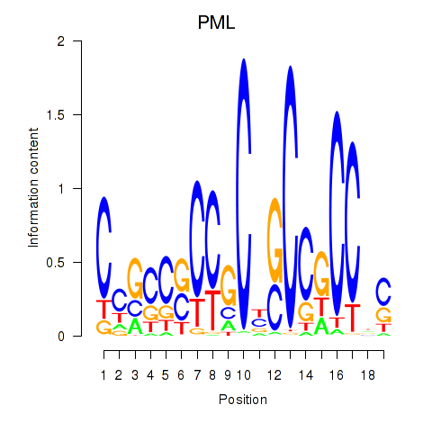
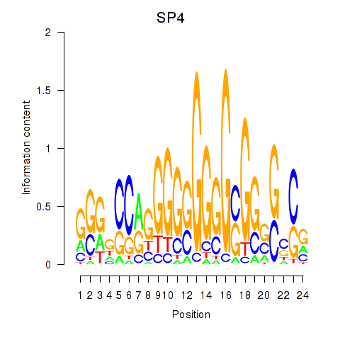

Motif ID: SP4_PML
Z-value: 1.603


Transcription factors associated with SP4_PML:
| Gene Symbol | Entrez ID | Gene Name |
|---|---|---|
| PML | ENSG00000140464.15 | PML |
| SP4 | ENSG00000105866.9 | SP4 |
![](http://string-db.org/api/image/network?network_flavor=evidence&limit=0&species=9606&caller_identity=MARA&identifiers=9606.ENSP00000229266%0D9606.ENSP00000252818%0D9606.ENSP00000378578%0D9606.ENSP00000346300%0D9606.ENSP00000299927%0D9606.ENSP00000368007%0D9606.ENSP00000313159%0D9606.ENSP00000262803%0D9606.ENSP00000301420%0D9606.ENSP00000335091%0D9606.ENSP00000360252%0D9606.ENSP00000336616%0D9606.ENSP00000392828%0D9606.ENSP00000346389%0D9606.ENSP00000219689%0D9606.ENSP00000220592%0D9606.ENSP00000383402%0D9606.ENSP00000327608%0D9606.ENSP00000407193%0D9606.ENSP00000354772%0D9606.ENSP00000344547%0D9606.ENSP00000354777%0D9606.ENSP00000356607%0D9606.ENSP00000340761%0D9606.ENSP00000373873%0D9606.ENSP00000337736%0D9606.ENSP00000359258%0D9606.ENSP00000078429%0D9606.ENSP00000441032%0D9606.ENSP00000419974%0D9606.ENSP00000286548%0D9606.ENSP00000353373%0D9606.ENSP00000360561%0D9606.ENSP00000384084%0D9606.ENSP00000344432%0D9606.ENSP00000219782%0D9606.ENSP00000303585%0D9606.ENSP00000367494%0D9606.ENSP00000292494%0D9606.ENSP00000413929%0D9606.ENSP00000354878%0D9606.ENSP00000384774%0D9606.ENSP00000305632%0D9606.ENSP00000303507%0D9606.ENSP00000315731%0D9606.ENSP00000362136%0D9606.ENSP00000313050%0D9606.ENSP00000326630%0D9606.ENSP00000290974%0D9606.ENSP00000331831%0D9606.ENSP00000341805%0D9606.ENSP00000320940%0D9606.ENSP00000334042%0D9606.ENSP00000281537%0D9606.ENSP00000355778%0D9606.ENSP00000331368%0D9606.ENSP00000351602%0D9606.ENSP00000360200%0D9606.ENSP00000282111%0D9606.ENSP00000338283%0D9606.ENSP00000376615%0D9606.ENSP00000386759%0D9606.ENSP00000324693%0D9606.ENSP00000334198%0D9606.ENSP00000358327%0D9606.ENSP00000321330%0D9606.ENSP00000448840%0D9606.ENSP00000324897%0D9606.ENSP00000262370%0D9606.ENSP00000442050%0D9606.ENSP00000326693%0D9606.ENSP00000279101%0D9606.ENSP00000364464%0D9606.ENSP00000259119%0D9606.ENSP00000384432%0D9606.ENSP00000309262%0D9606.ENSP00000300131%0D9606.ENSP00000351755%0D9606.ENSP00000330278%0D9606.ENSP00000258341%0D9606.ENSP00000406144%0D9606.ENSP00000409581%0D9606.ENSP00000233969%0D9606.ENSP00000328511%0D9606.ENSP00000374507%0D9606.ENSP00000328694%0D9606.ENSP00000429969%0D9606.ENSP00000345193%0D9606.ENSP00000229922%0D9606.ENSP00000367629%0D9606.ENSP00000440374%0D9606.ENSP00000263228%0D9606.ENSP00000364475%0D9606.ENSP00000308149%0D9606.ENSP00000350050%0D9606.ENSP00000353920%0D9606.ENSP00000397157%0D9606.ENSP00000254810%0D9606.ENSP00000328352%0D9606.ENSP00000328182%0D9606.ENSP00000291442)
{kind=link}
{kind=link}
{kind=link}
{kind=link}
Top targets:
Gene overrepresentation in biological_process category:
| Log-likelihood per target | Total log-likelihood | Term | Description |
|---|---|---|---|
| 1.4 | 4.3 | GO:0097198 | histone H3-K36 trimethylation(GO:0097198) |
| 1.3 | 6.5 | GO:1904565 | response to 1-oleoyl-sn-glycerol 3-phosphate(GO:1904565) cellular response to 1-oleoyl-sn-glycerol 3-phosphate(GO:1904566) |
| 1.2 | 5.0 | GO:0000294 | nuclear-transcribed mRNA catabolic process, endonucleolytic cleavage-dependent decay(GO:0000294) |
| 1.1 | 3.4 | GO:0003192 | mitral valve formation(GO:0003192) |
| 0.9 | 7.6 | GO:0032484 | Ral protein signal transduction(GO:0032484) regulation of Ral protein signal transduction(GO:0032485) |
| 0.9 | 3.5 | GO:0005986 | sucrose biosynthetic process(GO:0005986) |
| 0.9 | 5.2 | GO:0016480 | negative regulation of transcription from RNA polymerase III promoter(GO:0016480) |
| 0.8 | 2.5 | GO:0038193 | thromboxane A2 signaling pathway(GO:0038193) |
| 0.8 | 6.5 | GO:0070649 | polar body extrusion after meiotic divisions(GO:0040038) formin-nucleated actin cable assembly(GO:0070649) |
| 0.8 | 3.2 | GO:1901350 | cell-cell signaling involved in cell-cell junction organization(GO:1901350) |
| 0.7 | 0.7 | GO:1902669 | positive regulation of axon guidance(GO:1902669) |
| 0.7 | 2.8 | GO:0006663 | platelet activating factor biosynthetic process(GO:0006663) |
| 0.7 | 2.0 | GO:0046168 | glycerol-3-phosphate catabolic process(GO:0046168) |
| 0.7 | 2.0 | GO:2000532 | renal albumin absorption(GO:0097018) regulation of renal albumin absorption(GO:2000532) |
| 0.6 | 4.2 | GO:0019075 | virus maturation(GO:0019075) |
| 0.6 | 1.8 | GO:0016256 | N-glycan processing to lysosome(GO:0016256) |
| 0.6 | 2.4 | GO:0031508 | pericentric heterochromatin assembly(GO:0031508) |
| 0.6 | 2.8 | GO:0001828 | inner cell mass cellular morphogenesis(GO:0001828) |
| 0.6 | 1.7 | GO:0019243 | methylglyoxal catabolic process to D-lactate via S-lactoyl-glutathione(GO:0019243) methylglyoxal catabolic process(GO:0051596) methylglyoxal catabolic process to lactate(GO:0061727) |
| 0.6 | 3.9 | GO:0090625 | mRNA cleavage involved in gene silencing by siRNA(GO:0090625) |
| 0.5 | 3.0 | GO:0015692 | lead ion transport(GO:0015692) |
| 0.5 | 1.5 | GO:0060129 | thyroid-stimulating hormone-secreting cell differentiation(GO:0060129) |
| 0.5 | 1.5 | GO:0071106 | coenzyme A transport(GO:0015880) coenzyme A transmembrane transport(GO:0035349) adenosine 3',5'-bisphosphate transmembrane transport(GO:0071106) AMP transport(GO:0080121) |
| 0.5 | 4.7 | GO:0055005 | ventricular cardiac myofibril assembly(GO:0055005) |
| 0.5 | 1.9 | GO:1905045 | Schwann cell proliferation involved in axon regeneration(GO:0014011) negative regulation of Schwann cell migration(GO:1900148) regulation of Schwann cell proliferation involved in axon regeneration(GO:1905044) negative regulation of Schwann cell proliferation involved in axon regeneration(GO:1905045) |
| 0.4 | 1.3 | GO:1902595 | regulation of DNA replication origin binding(GO:1902595) |
| 0.4 | 1.3 | GO:0006864 | pyrimidine nucleotide transport(GO:0006864) mitochondrial pyrimidine nucleotide import(GO:1990519) |
| 0.4 | 0.4 | GO:0090273 | regulation of somatostatin secretion(GO:0090273) positive regulation of somatostatin secretion(GO:0090274) |
| 0.4 | 1.3 | GO:0060988 | lipid tube assembly(GO:0060988) |
| 0.4 | 1.3 | GO:0051685 | maintenance of ER location(GO:0051685) |
| 0.4 | 1.2 | GO:0045082 | positive regulation of interleukin-10 biosynthetic process(GO:0045082) |
| 0.4 | 1.2 | GO:0035261 | external genitalia morphogenesis(GO:0035261) |
| 0.4 | 1.2 | GO:0030505 | inorganic diphosphate transport(GO:0030505) |
| 0.4 | 2.5 | GO:0072752 | cellular response to rapamycin(GO:0072752) |
| 0.4 | 4.5 | GO:0035865 | cellular response to potassium ion(GO:0035865) |
| 0.4 | 1.6 | GO:0097069 | cellular response to thyroxine stimulus(GO:0097069) cellular response to L-phenylalanine derivative(GO:1904387) |
| 0.4 | 2.4 | GO:0060268 | negative regulation of respiratory burst(GO:0060268) |
| 0.4 | 1.6 | GO:0021965 | spinal cord ventral commissure morphogenesis(GO:0021965) |
| 0.4 | 1.9 | GO:0015862 | uridine transport(GO:0015862) |
| 0.4 | 0.4 | GO:2001226 | negative regulation of chloride transport(GO:2001226) |
| 0.4 | 3.3 | GO:0072734 | response to staurosporine(GO:0072733) cellular response to staurosporine(GO:0072734) |
| 0.4 | 1.1 | GO:2000744 | anterior head development(GO:0097065) regulation of anterior head development(GO:2000742) positive regulation of anterior head development(GO:2000744) |
| 0.4 | 1.1 | GO:0018008 | N-terminal peptidyl-glycine N-myristoylation(GO:0018008) |
| 0.4 | 1.4 | GO:0097195 | pilomotor reflex(GO:0097195) |
| 0.3 | 1.0 | GO:0072720 | response to dithiothreitol(GO:0072720) |
| 0.3 | 1.0 | GO:1901383 | negative regulation of chorionic trophoblast cell proliferation(GO:1901383) |
| 0.3 | 1.7 | GO:0015853 | adenine transport(GO:0015853) |
| 0.3 | 2.7 | GO:0000429 | carbon catabolite regulation of transcription from RNA polymerase II promoter(GO:0000429) carbon catabolite activation of transcription from RNA polymerase II promoter(GO:0000436) |
| 0.3 | 2.4 | GO:0044861 | protein transport into plasma membrane raft(GO:0044861) |
| 0.3 | 8.7 | GO:0070831 | basement membrane assembly(GO:0070831) |
| 0.3 | 1.3 | GO:0072086 | specification of loop of Henle identity(GO:0072086) |
| 0.3 | 1.9 | GO:0051490 | negative regulation of filopodium assembly(GO:0051490) |
| 0.3 | 0.3 | GO:1903321 | negative regulation of protein modification by small protein conjugation or removal(GO:1903321) |
| 0.3 | 1.0 | GO:0008057 | eye pigment granule organization(GO:0008057) |
| 0.3 | 0.9 | GO:0035022 | positive regulation of Rac protein signal transduction(GO:0035022) |
| 0.3 | 1.6 | GO:0090164 | asymmetric Golgi ribbon formation(GO:0090164) |
| 0.3 | 3.1 | GO:0072592 | oxygen metabolic process(GO:0072592) |
| 0.3 | 0.9 | GO:0044830 | modulation by host of viral RNA genome replication(GO:0044830) positive regulation of intracellular transport of viral material(GO:1901254) |
| 0.3 | 2.2 | GO:1902231 | positive regulation of intrinsic apoptotic signaling pathway in response to DNA damage(GO:1902231) |
| 0.3 | 1.5 | GO:1902378 | vestibulocochlear nerve structural organization(GO:0021649) positive regulation of cytokine activity(GO:0060301) ganglion morphogenesis(GO:0061552) VEGF-activated neuropilin signaling pathway involved in axon guidance(GO:1902378) dorsal root ganglion morphogenesis(GO:1904835) otic placode development(GO:1905040) |
| 0.3 | 1.2 | GO:1900224 | positive regulation of nodal signaling pathway involved in determination of lateral mesoderm left/right asymmetry(GO:1900224) |
| 0.3 | 0.9 | GO:1904899 | regulation of hepatic stellate cell proliferation(GO:1904897) positive regulation of hepatic stellate cell proliferation(GO:1904899) hepatic stellate cell proliferation(GO:1990922) |
| 0.3 | 0.9 | GO:0036333 | hepatocyte homeostasis(GO:0036333) response to tetrachloromethane(GO:1904772) |
| 0.3 | 0.9 | GO:0001543 | ovarian follicle rupture(GO:0001543) |
| 0.3 | 0.9 | GO:0035281 | pre-miRNA export from nucleus(GO:0035281) |
| 0.3 | 0.9 | GO:0061394 | regulation of transcription from RNA polymerase II promoter in response to arsenic-containing substance(GO:0061394) |
| 0.3 | 5.7 | GO:0002934 | desmosome organization(GO:0002934) |
| 0.3 | 0.6 | GO:0060214 | endocardium formation(GO:0060214) |
| 0.3 | 2.1 | GO:2000568 | memory T cell activation(GO:0035709) regulation of memory T cell activation(GO:2000567) positive regulation of memory T cell activation(GO:2000568) |
| 0.3 | 0.3 | GO:0090191 | negative regulation of branching involved in ureteric bud morphogenesis(GO:0090191) |
| 0.3 | 0.9 | GO:0016260 | selenocysteine biosynthetic process(GO:0016260) |
| 0.3 | 1.1 | GO:0000103 | sulfate assimilation(GO:0000103) |
| 0.3 | 1.1 | GO:0046671 | negative regulation of cellular pH reduction(GO:0032848) CD8-positive, alpha-beta T cell lineage commitment(GO:0043375) negative regulation of retinal cell programmed cell death(GO:0046671) |
| 0.3 | 1.1 | GO:0044028 | DNA hypomethylation(GO:0044028) hypomethylation of CpG island(GO:0044029) |
| 0.3 | 0.3 | GO:0009405 | pathogenesis(GO:0009405) |
| 0.3 | 0.5 | GO:0001994 | norepinephrine-epinephrine vasoconstriction involved in regulation of systemic arterial blood pressure(GO:0001994) |
| 0.3 | 0.5 | GO:2000309 | positive regulation of tumor necrosis factor (ligand) superfamily member 11 production(GO:2000309) |
| 0.3 | 1.1 | GO:0019417 | sulfur oxidation(GO:0019417) |
| 0.3 | 0.8 | GO:0072365 | regulation of cellular ketone metabolic process by negative regulation of transcription from RNA polymerase II promoter(GO:0072365) |
| 0.3 | 0.8 | GO:0033143 | regulation of intracellular steroid hormone receptor signaling pathway(GO:0033143) |
| 0.3 | 0.8 | GO:0090222 | centrosome-templated microtubule nucleation(GO:0090222) |
| 0.3 | 0.8 | GO:0036466 | synaptic vesicle recycling via endosome(GO:0036466) |
| 0.3 | 1.0 | GO:0060721 | spongiotrophoblast cell proliferation(GO:0060720) regulation of spongiotrophoblast cell proliferation(GO:0060721) cell proliferation involved in embryonic placenta development(GO:0060722) regulation of cell proliferation involved in embryonic placenta development(GO:0060723) |
| 0.3 | 0.3 | GO:0060372 | regulation of atrial cardiac muscle cell membrane repolarization(GO:0060372) |
| 0.3 | 1.3 | GO:0016095 | polyprenol catabolic process(GO:0016095) |
| 0.3 | 0.8 | GO:2001247 | positive regulation of phosphatidylcholine biosynthetic process(GO:2001247) |
| 0.3 | 1.0 | GO:0060084 | synaptic transmission involved in micturition(GO:0060084) |
| 0.3 | 5.9 | GO:0007175 | negative regulation of epidermal growth factor-activated receptor activity(GO:0007175) |
| 0.3 | 1.3 | GO:0014886 | transition between slow and fast fiber(GO:0014886) |
| 0.3 | 1.5 | GO:0010796 | regulation of multivesicular body size(GO:0010796) |
| 0.3 | 0.8 | GO:2000657 | regulation of apolipoprotein binding(GO:2000656) negative regulation of apolipoprotein binding(GO:2000657) |
| 0.3 | 0.5 | GO:1904886 | beta-catenin destruction complex disassembly(GO:1904886) |
| 0.3 | 0.8 | GO:0071603 | endothelial cell-cell adhesion(GO:0071603) |
| 0.3 | 1.0 | GO:1902361 | mitochondrial pyruvate transport(GO:0006850) mitochondrial pyruvate transmembrane transport(GO:1902361) |
| 0.2 | 1.0 | GO:1905205 | positive regulation of connective tissue replacement(GO:1905205) |
| 0.2 | 0.7 | GO:1903697 | negative regulation of microvillus assembly(GO:1903697) |
| 0.2 | 1.5 | GO:0010976 | positive regulation of neuron projection development(GO:0010976) |
| 0.2 | 2.0 | GO:0018242 | protein O-linked glycosylation via serine(GO:0018242) |
| 0.2 | 3.9 | GO:0034393 | positive regulation of smooth muscle cell apoptotic process(GO:0034393) |
| 0.2 | 0.2 | GO:0046619 | optic placode formation involved in camera-type eye formation(GO:0046619) |
| 0.2 | 0.7 | GO:0060738 | epithelial-mesenchymal signaling involved in prostate gland development(GO:0060738) |
| 0.2 | 0.5 | GO:0016476 | regulation of embryonic cell shape(GO:0016476) |
| 0.2 | 0.2 | GO:1904294 | positive regulation of ERAD pathway(GO:1904294) |
| 0.2 | 1.1 | GO:1903553 | positive regulation of extracellular exosome assembly(GO:1903553) |
| 0.2 | 1.4 | GO:0031860 | telomeric 3' overhang formation(GO:0031860) |
| 0.2 | 1.1 | GO:1901994 | negative regulation of meiotic cell cycle phase transition(GO:1901994) |
| 0.2 | 0.9 | GO:1901558 | response to metformin(GO:1901558) negative regulation of pancreatic stellate cell proliferation(GO:2000230) |
| 0.2 | 0.9 | GO:0003221 | right ventricular cardiac muscle tissue morphogenesis(GO:0003221) |
| 0.2 | 0.9 | GO:0006781 | succinyl-CoA pathway(GO:0006781) |
| 0.2 | 0.7 | GO:1990697 | protein depalmitoleylation(GO:1990697) |
| 0.2 | 0.7 | GO:0042732 | D-xylose metabolic process(GO:0042732) |
| 0.2 | 0.7 | GO:2001033 | negative regulation of double-strand break repair via nonhomologous end joining(GO:2001033) |
| 0.2 | 0.9 | GO:0006597 | spermine biosynthetic process(GO:0006597) |
| 0.2 | 0.9 | GO:1904059 | regulation of locomotor rhythm(GO:1904059) |
| 0.2 | 1.7 | GO:0070537 | histone H2A K63-linked deubiquitination(GO:0070537) |
| 0.2 | 0.6 | GO:0035606 | peptidyl-cysteine S-trans-nitrosylation(GO:0035606) |
| 0.2 | 0.2 | GO:0043132 | NAD transport(GO:0043132) |
| 0.2 | 0.2 | GO:0035791 | platelet-derived growth factor receptor-beta signaling pathway(GO:0035791) |
| 0.2 | 0.8 | GO:0071894 | histone H2B conserved C-terminal lysine ubiquitination(GO:0071894) |
| 0.2 | 0.6 | GO:0035526 | retrograde transport, plasma membrane to Golgi(GO:0035526) |
| 0.2 | 0.8 | GO:0015772 | disaccharide transport(GO:0015766) sucrose transport(GO:0015770) oligosaccharide transport(GO:0015772) |
| 0.2 | 0.6 | GO:0060490 | orthogonal dichotomous subdivision of terminal units involved in lung branching morphogenesis(GO:0060488) planar dichotomous subdivision of terminal units involved in lung branching morphogenesis(GO:0060489) lateral sprouting involved in lung morphogenesis(GO:0060490) |
| 0.2 | 0.6 | GO:1904956 | regulation of midbrain dopaminergic neuron differentiation(GO:1904956) |
| 0.2 | 0.8 | GO:0042247 | morphogenesis of follicular epithelium(GO:0016333) establishment or maintenance of polarity of follicular epithelium(GO:0016334) establishment of planar polarity of follicular epithelium(GO:0042247) |
| 0.2 | 0.8 | GO:0072137 | condensed mesenchymal cell proliferation(GO:0072137) |
| 0.2 | 0.9 | GO:0044208 | 'de novo' AMP biosynthetic process(GO:0044208) |
| 0.2 | 0.6 | GO:0071963 | establishment or maintenance of cell polarity regulating cell shape(GO:0071963) |
| 0.2 | 0.9 | GO:0001306 | age-dependent response to oxidative stress(GO:0001306) age-dependent response to reactive oxygen species(GO:0001315) regulation of systemic arterial blood pressure by acetylcholine(GO:0003068) vasodilation by acetylcholine involved in regulation of systemic arterial blood pressure(GO:0003069) regulation of systemic arterial blood pressure by neurotransmitter(GO:0003070) age-dependent general metabolic decline(GO:0007571) |
| 0.2 | 0.6 | GO:0002184 | cytoplasmic translational termination(GO:0002184) |
| 0.2 | 0.4 | GO:0045715 | negative regulation of low-density lipoprotein particle receptor biosynthetic process(GO:0045715) |
| 0.2 | 0.2 | GO:0061179 | negative regulation of insulin secretion involved in cellular response to glucose stimulus(GO:0061179) |
| 0.2 | 1.3 | GO:0061086 | negative regulation of histone H3-K27 methylation(GO:0061086) |
| 0.2 | 0.6 | GO:0042137 | sequestering of neurotransmitter(GO:0042137) |
| 0.2 | 11.7 | GO:0007190 | activation of adenylate cyclase activity(GO:0007190) |
| 0.2 | 0.7 | GO:0019285 | glycine betaine biosynthetic process from choline(GO:0019285) glycine betaine metabolic process(GO:0031455) glycine betaine biosynthetic process(GO:0031456) |
| 0.2 | 1.1 | GO:0001757 | somite specification(GO:0001757) |
| 0.2 | 0.9 | GO:0007213 | G-protein coupled acetylcholine receptor signaling pathway(GO:0007213) |
| 0.2 | 0.5 | GO:0033385 | geranylgeranyl diphosphate metabolic process(GO:0033385) geranylgeranyl diphosphate biosynthetic process(GO:0033386) |
| 0.2 | 2.7 | GO:0010499 | proteasomal ubiquitin-independent protein catabolic process(GO:0010499) |
| 0.2 | 0.4 | GO:0090271 | positive regulation of fibroblast growth factor production(GO:0090271) |
| 0.2 | 0.7 | GO:1905232 | cellular response to L-glutamate(GO:1905232) |
| 0.2 | 2.5 | GO:0043951 | negative regulation of cAMP-mediated signaling(GO:0043951) |
| 0.2 | 0.4 | GO:2000569 | T-helper 2 cell activation(GO:0035712) regulation of T-helper 2 cell activation(GO:2000569) positive regulation of T-helper 2 cell activation(GO:2000570) |
| 0.2 | 1.1 | GO:0089700 | protein kinase D signaling(GO:0089700) |
| 0.2 | 0.7 | GO:0072255 | metanephric glomerular mesangial cell development(GO:0072255) reversible differentiation(GO:0090677) cell dedifferentiation involved in phenotypic switching(GO:0090678) positive regulation of phenotypic switching(GO:1900241) regulation of vascular smooth muscle cell dedifferentiation(GO:1905174) positive regulation of vascular smooth muscle cell dedifferentiation(GO:1905176) vascular smooth muscle cell dedifferentiation(GO:1990936) |
| 0.2 | 0.2 | GO:0010636 | positive regulation of mitochondrial fusion(GO:0010636) |
| 0.2 | 1.2 | GO:0071461 | cellular response to redox state(GO:0071461) |
| 0.2 | 0.7 | GO:0021966 | corticospinal neuron axon guidance(GO:0021966) |
| 0.2 | 1.4 | GO:0070358 | actin polymerization-dependent cell motility(GO:0070358) |
| 0.2 | 0.2 | GO:0034145 | positive regulation of toll-like receptor 4 signaling pathway(GO:0034145) |
| 0.2 | 1.0 | GO:1903361 | protein localization to basolateral plasma membrane(GO:1903361) |
| 0.2 | 0.3 | GO:1902263 | apoptotic process involved in embryonic digit morphogenesis(GO:1902263) |
| 0.2 | 0.3 | GO:0007493 | endodermal cell fate determination(GO:0007493) |
| 0.2 | 1.2 | GO:0033629 | negative regulation of cell adhesion mediated by integrin(GO:0033629) |
| 0.2 | 0.5 | GO:0042727 | flavin-containing compound biosynthetic process(GO:0042727) |
| 0.2 | 0.7 | GO:0046469 | platelet activating factor metabolic process(GO:0046469) |
| 0.2 | 0.7 | GO:0023016 | signal transduction by trans-phosphorylation(GO:0023016) |
| 0.2 | 0.2 | GO:2000312 | regulation of kainate selective glutamate receptor activity(GO:2000312) |
| 0.2 | 0.8 | GO:0070417 | cellular response to cold(GO:0070417) |
| 0.2 | 0.5 | GO:0070902 | mitochondrial tRNA pseudouridine synthesis(GO:0070902) |
| 0.2 | 0.5 | GO:0071109 | superior temporal gyrus development(GO:0071109) |
| 0.2 | 0.5 | GO:0045083 | negative regulation of interleukin-12 biosynthetic process(GO:0045083) |
| 0.2 | 1.6 | GO:0060523 | prostate epithelial cord elongation(GO:0060523) |
| 0.2 | 0.3 | GO:2000381 | negative regulation of mesoderm development(GO:2000381) |
| 0.2 | 0.3 | GO:0036518 | chemorepulsion of dopaminergic neuron axon(GO:0036518) |
| 0.2 | 0.3 | GO:0050772 | positive regulation of axonogenesis(GO:0050772) |
| 0.2 | 0.8 | GO:0003186 | tricuspid valve morphogenesis(GO:0003186) |
| 0.2 | 0.2 | GO:0034776 | response to histamine(GO:0034776) |
| 0.2 | 0.5 | GO:0033488 | cholesterol biosynthetic process via 24,25-dihydrolanosterol(GO:0033488) |
| 0.2 | 1.3 | GO:0006741 | NADP biosynthetic process(GO:0006741) |
| 0.2 | 1.6 | GO:0006065 | UDP-glucuronate biosynthetic process(GO:0006065) |
| 0.2 | 3.2 | GO:0016322 | neuron remodeling(GO:0016322) |
| 0.2 | 0.2 | GO:0003175 | tricuspid valve development(GO:0003175) |
| 0.2 | 0.9 | GO:0030047 | actin modification(GO:0030047) |
| 0.2 | 0.3 | GO:2000182 | regulation of progesterone biosynthetic process(GO:2000182) |
| 0.2 | 0.3 | GO:2000395 | regulation of ubiquitin-dependent endocytosis(GO:2000395) positive regulation of ubiquitin-dependent endocytosis(GO:2000397) |
| 0.2 | 0.5 | GO:0007497 | posterior midgut development(GO:0007497) |
| 0.2 | 0.8 | GO:0051387 | negative regulation of neurotrophin TRK receptor signaling pathway(GO:0051387) |
| 0.2 | 1.6 | GO:0009133 | nucleoside diphosphate biosynthetic process(GO:0009133) |
| 0.2 | 0.8 | GO:0007070 | negative regulation of transcription during mitosis(GO:0007068) negative regulation of transcription from RNA polymerase II promoter during mitosis(GO:0007070) |
| 0.2 | 1.2 | GO:0051725 | protein de-ADP-ribosylation(GO:0051725) |
| 0.2 | 1.7 | GO:2000664 | positive regulation of interleukin-5 secretion(GO:2000664) |
| 0.2 | 1.2 | GO:1904526 | regulation of microtubule binding(GO:1904526) |
| 0.2 | 0.6 | GO:0040016 | embryonic cleavage(GO:0040016) |
| 0.2 | 0.8 | GO:1902268 | negative regulation of polyamine transmembrane transport(GO:1902268) |
| 0.2 | 0.9 | GO:0032625 | interleukin-21 production(GO:0032625) interleukin-21 secretion(GO:0072619) |
| 0.2 | 0.6 | GO:1901857 | positive regulation of cellular respiration(GO:1901857) |
| 0.2 | 0.5 | GO:1904562 | phosphatidylinositol 5-phosphate metabolic process(GO:1904562) |
| 0.2 | 0.2 | GO:2001170 | negative regulation of ATP biosynthetic process(GO:2001170) |
| 0.2 | 1.5 | GO:0060017 | parathyroid gland development(GO:0060017) |
| 0.2 | 0.5 | GO:1905166 | negative regulation of protein catabolic process in the vacuole(GO:1904351) negative regulation of lysosomal protein catabolic process(GO:1905166) |
| 0.2 | 4.1 | GO:0006646 | phosphatidylethanolamine biosynthetic process(GO:0006646) |
| 0.1 | 1.5 | GO:0045650 | negative regulation of macrophage differentiation(GO:0045650) |
| 0.1 | 1.6 | GO:0006657 | CDP-choline pathway(GO:0006657) |
| 0.1 | 0.1 | GO:0009186 | deoxyribonucleoside diphosphate metabolic process(GO:0009186) |
| 0.1 | 2.1 | GO:0070459 | prolactin secretion(GO:0070459) |
| 0.1 | 0.3 | GO:0099558 | maintenance of synapse structure(GO:0099558) |
| 0.1 | 0.3 | GO:0010801 | negative regulation of peptidyl-threonine phosphorylation(GO:0010801) |
| 0.1 | 2.1 | GO:0032926 | negative regulation of activin receptor signaling pathway(GO:0032926) |
| 0.1 | 0.1 | GO:0010225 | response to UV-C(GO:0010225) |
| 0.1 | 0.9 | GO:0006102 | isocitrate metabolic process(GO:0006102) |
| 0.1 | 0.1 | GO:0006680 | glucosylceramide catabolic process(GO:0006680) |
| 0.1 | 0.4 | GO:0060166 | olfactory pit development(GO:0060166) |
| 0.1 | 1.1 | GO:0010748 | regulation of plasma membrane long-chain fatty acid transport(GO:0010746) negative regulation of plasma membrane long-chain fatty acid transport(GO:0010748) |
| 0.1 | 0.4 | GO:0097091 | synaptic vesicle clustering(GO:0097091) |
| 0.1 | 0.3 | GO:0003223 | ventricular compact myocardium morphogenesis(GO:0003223) |
| 0.1 | 0.5 | GO:0090410 | malonate catabolic process(GO:0090410) |
| 0.1 | 0.5 | GO:0003358 | noradrenergic neuron development(GO:0003358) |
| 0.1 | 0.7 | GO:0003409 | optic cup structural organization(GO:0003409) |
| 0.1 | 0.4 | GO:0002188 | translation reinitiation(GO:0002188) |
| 0.1 | 0.8 | GO:0086021 | SA node cell to atrial cardiac muscle cell communication by electrical coupling(GO:0086021) |
| 0.1 | 1.8 | GO:0090336 | positive regulation of brown fat cell differentiation(GO:0090336) |
| 0.1 | 1.4 | GO:0072656 | maintenance of protein location in mitochondrion(GO:0072656) |
| 0.1 | 0.7 | GO:0001923 | B-1 B cell differentiation(GO:0001923) |
| 0.1 | 0.4 | GO:0038163 | thrombopoietin-mediated signaling pathway(GO:0038163) |
| 0.1 | 2.1 | GO:0051665 | membrane raft localization(GO:0051665) |
| 0.1 | 0.1 | GO:0046135 | pyrimidine nucleoside catabolic process(GO:0046135) |
| 0.1 | 0.6 | GO:0043324 | eye pigment biosynthetic process(GO:0006726) eye pigment metabolic process(GO:0042441) pigment metabolic process involved in developmental pigmentation(GO:0043324) pigment metabolic process involved in pigmentation(GO:0043474) |
| 0.1 | 0.4 | GO:1901340 | negative regulation of store-operated calcium channel activity(GO:1901340) |
| 0.1 | 0.4 | GO:1990086 | lens fiber cell apoptotic process(GO:1990086) |
| 0.1 | 0.5 | GO:1900239 | phenotypic switching(GO:0036166) regulation of phenotypic switching(GO:1900239) |
| 0.1 | 0.1 | GO:0003220 | left ventricular cardiac muscle tissue morphogenesis(GO:0003220) |
| 0.1 | 0.1 | GO:0016199 | axon midline choice point recognition(GO:0016199) |
| 0.1 | 3.5 | GO:0016254 | preassembly of GPI anchor in ER membrane(GO:0016254) |
| 0.1 | 0.5 | GO:0021849 | neuroblast division in subventricular zone(GO:0021849) |
| 0.1 | 0.6 | GO:1901503 | ether lipid biosynthetic process(GO:0008611) glycerol ether biosynthetic process(GO:0046504) ether biosynthetic process(GO:1901503) |
| 0.1 | 0.8 | GO:0019355 | nicotinamide nucleotide biosynthetic process from aspartate(GO:0019355) 'de novo' NAD biosynthetic process from aspartate(GO:0034628) |
| 0.1 | 2.4 | GO:0033235 | positive regulation of protein sumoylation(GO:0033235) |
| 0.1 | 0.5 | GO:0015910 | peroxisomal long-chain fatty acid import(GO:0015910) |
| 0.1 | 0.3 | GO:2001287 | negative regulation of caveolin-mediated endocytosis(GO:2001287) |
| 0.1 | 0.1 | GO:0016578 | histone deubiquitination(GO:0016578) |
| 0.1 | 0.1 | GO:0002011 | morphogenesis of an epithelial sheet(GO:0002011) |
| 0.1 | 0.1 | GO:0055089 | fatty acid homeostasis(GO:0055089) |
| 0.1 | 4.7 | GO:0006972 | hyperosmotic response(GO:0006972) |
| 0.1 | 0.1 | GO:0021934 | hindbrain tangential cell migration(GO:0021934) |
| 0.1 | 1.1 | GO:0046940 | nucleoside monophosphate phosphorylation(GO:0046940) |
| 0.1 | 1.1 | GO:0040032 | post-embryonic body morphogenesis(GO:0040032) |
| 0.1 | 0.5 | GO:0048294 | negative regulation of isotype switching to IgE isotypes(GO:0048294) |
| 0.1 | 0.2 | GO:0002476 | antigen processing and presentation of endogenous peptide antigen via MHC class Ib(GO:0002476) |
| 0.1 | 1.1 | GO:0017196 | N-terminal peptidyl-methionine acetylation(GO:0017196) |
| 0.1 | 0.8 | GO:0016128 | phytosteroid metabolic process(GO:0016128) phytosteroid biosynthetic process(GO:0016129) |
| 0.1 | 0.6 | GO:2000271 | positive regulation of fibroblast apoptotic process(GO:2000271) |
| 0.1 | 0.4 | GO:0042270 | protection from natural killer cell mediated cytotoxicity(GO:0042270) |
| 0.1 | 0.8 | GO:0032185 | septin cytoskeleton organization(GO:0032185) |
| 0.1 | 0.4 | GO:0035162 | embryonic hemopoiesis(GO:0035162) |
| 0.1 | 0.1 | GO:1904761 | negative regulation of myofibroblast differentiation(GO:1904761) |
| 0.1 | 0.4 | GO:0090370 | negative regulation of cholesterol efflux(GO:0090370) |
| 0.1 | 0.6 | GO:1900738 | positive regulation of phospholipase C-activating G-protein coupled receptor signaling pathway(GO:1900738) |
| 0.1 | 0.6 | GO:0097368 | establishment of Sertoli cell barrier(GO:0097368) |
| 0.1 | 1.7 | GO:0036066 | protein O-linked fucosylation(GO:0036066) |
| 0.1 | 0.5 | GO:0035964 | COPI-coated vesicle budding(GO:0035964) Golgi transport vesicle coating(GO:0048200) COPI coating of Golgi vesicle(GO:0048205) |
| 0.1 | 0.1 | GO:0033024 | mast cell homeostasis(GO:0033023) mast cell apoptotic process(GO:0033024) regulation of mast cell apoptotic process(GO:0033025) |
| 0.1 | 0.7 | GO:0060574 | intestinal epithelial cell maturation(GO:0060574) |
| 0.1 | 1.1 | GO:2001206 | positive regulation of osteoclast development(GO:2001206) |
| 0.1 | 0.4 | GO:0030327 | prenylated protein catabolic process(GO:0030327) |
| 0.1 | 0.4 | GO:0006990 | positive regulation of transcription from RNA polymerase II promoter involved in unfolded protein response(GO:0006990) |
| 0.1 | 1.9 | GO:0042167 | porphyrin-containing compound catabolic process(GO:0006787) tetrapyrrole catabolic process(GO:0033015) heme catabolic process(GO:0042167) pigment catabolic process(GO:0046149) |
| 0.1 | 0.5 | GO:0034334 | adherens junction maintenance(GO:0034334) |
| 0.1 | 0.8 | GO:0098700 | neurotransmitter loading into synaptic vesicle(GO:0098700) |
| 0.1 | 0.3 | GO:0043449 | cellular alkene metabolic process(GO:0043449) |
| 0.1 | 0.3 | GO:0060061 | Spemann organizer formation(GO:0060061) |
| 0.1 | 0.5 | GO:0017198 | N-terminal peptidyl-serine acetylation(GO:0017198) N-terminal peptidyl-glutamic acid acetylation(GO:0018002) peptidyl-serine acetylation(GO:0030920) |
| 0.1 | 0.6 | GO:0036512 | trimming of terminal mannose on B branch(GO:0036509) trimming of first mannose on A branch(GO:0036511) trimming of second mannose on A branch(GO:0036512) |
| 0.1 | 1.3 | GO:0000389 | mRNA 3'-splice site recognition(GO:0000389) |
| 0.1 | 0.2 | GO:0043954 | cellular component maintenance(GO:0043954) |
| 0.1 | 0.3 | GO:1902490 | regulation of sperm capacitation(GO:1902490) |
| 0.1 | 0.6 | GO:0060830 | ciliary receptor clustering involved in smoothened signaling pathway(GO:0060830) |
| 0.1 | 0.3 | GO:1903461 | Okazaki fragment processing involved in mitotic DNA replication(GO:1903461) |
| 0.1 | 0.6 | GO:0032218 | riboflavin transport(GO:0032218) |
| 0.1 | 0.6 | GO:0031291 | Ran protein signal transduction(GO:0031291) |
| 0.1 | 0.3 | GO:0098884 | postsynaptic neurotransmitter receptor internalization(GO:0098884) |
| 0.1 | 0.2 | GO:0009216 | purine deoxyribonucleotide biosynthetic process(GO:0009153) purine deoxyribonucleoside triphosphate biosynthetic process(GO:0009216) |
| 0.1 | 0.8 | GO:0061767 | negative regulation of lung blood pressure(GO:0061767) |
| 0.1 | 0.2 | GO:1902512 | positive regulation of apoptotic DNA fragmentation(GO:1902512) |
| 0.1 | 0.3 | GO:1904397 | negative regulation of neuromuscular junction development(GO:1904397) |
| 0.1 | 0.5 | GO:2000490 | negative regulation of hepatic stellate cell activation(GO:2000490) |
| 0.1 | 0.3 | GO:1900276 | regulation of proteinase activated receptor activity(GO:1900276) negative regulation of phospholipase C-activating G-protein coupled receptor signaling pathway(GO:1900737) |
| 0.1 | 0.3 | GO:0006481 | C-terminal protein methylation(GO:0006481) |
| 0.1 | 0.6 | GO:0006740 | NADPH regeneration(GO:0006740) |
| 0.1 | 0.2 | GO:0007215 | glutamate receptor signaling pathway(GO:0007215) |
| 0.1 | 0.4 | GO:0042361 | menaquinone catabolic process(GO:0042361) vitamin K catabolic process(GO:0042377) |
| 0.1 | 1.1 | GO:0048875 | chemical homeostasis within a tissue(GO:0048875) |
| 0.1 | 0.7 | GO:0021691 | cerebellar Purkinje cell layer maturation(GO:0021691) |
| 0.1 | 0.2 | GO:0072061 | inner medullary collecting duct development(GO:0072061) |
| 0.1 | 0.4 | GO:1901842 | negative regulation of high voltage-gated calcium channel activity(GO:1901842) |
| 0.1 | 0.9 | GO:0060754 | positive regulation of mast cell chemotaxis(GO:0060754) |
| 0.1 | 0.4 | GO:0097498 | endothelial tube lumen extension(GO:0097498) |
| 0.1 | 0.7 | GO:1904217 | regulation of CDP-diacylglycerol-serine O-phosphatidyltransferase activity(GO:1904217) positive regulation of CDP-diacylglycerol-serine O-phosphatidyltransferase activity(GO:1904219) positive regulation of serine C-palmitoyltransferase activity(GO:1904222) |
| 0.1 | 0.6 | GO:0010757 | negative regulation of plasminogen activation(GO:0010757) |
| 0.1 | 0.4 | GO:0046452 | dihydrofolate metabolic process(GO:0046452) |
| 0.1 | 0.8 | GO:0070345 | negative regulation of fat cell proliferation(GO:0070345) |
| 0.1 | 1.1 | GO:0007406 | negative regulation of neuroblast proliferation(GO:0007406) |
| 0.1 | 0.1 | GO:0036090 | cleavage furrow ingression(GO:0036090) |
| 0.1 | 0.3 | GO:2000418 | positive regulation of eosinophil migration(GO:2000418) |
| 0.1 | 0.2 | GO:1900155 | regulation of bone trabecula formation(GO:1900154) negative regulation of bone trabecula formation(GO:1900155) |
| 0.1 | 0.4 | GO:0045209 | MAPK phosphatase export from nucleus(GO:0045208) MAPK phosphatase export from nucleus, leptomycin B sensitive(GO:0045209) |
| 0.1 | 0.2 | GO:0015817 | histidine transport(GO:0015817) L-histidine transmembrane transport(GO:0089709) L-histidine transport(GO:1902024) |
| 0.1 | 1.6 | GO:0019317 | fucose catabolic process(GO:0019317) L-fucose metabolic process(GO:0042354) L-fucose catabolic process(GO:0042355) |
| 0.1 | 0.1 | GO:0060029 | convergent extension involved in organogenesis(GO:0060029) |
| 0.1 | 1.6 | GO:0060613 | fat pad development(GO:0060613) |
| 0.1 | 0.5 | GO:0048105 | establishment of body hair or bristle planar orientation(GO:0048104) establishment of body hair planar orientation(GO:0048105) |
| 0.1 | 0.4 | GO:0071393 | cellular response to progesterone stimulus(GO:0071393) |
| 0.1 | 1.1 | GO:0060157 | urinary bladder development(GO:0060157) |
| 0.1 | 0.4 | GO:0035470 | positive regulation of vascular wound healing(GO:0035470) |
| 0.1 | 0.1 | GO:1901662 | phylloquinone metabolic process(GO:0042374) phylloquinone catabolic process(GO:0042376) quinone catabolic process(GO:1901662) |
| 0.1 | 1.6 | GO:0033033 | negative regulation of myeloid cell apoptotic process(GO:0033033) |
| 0.1 | 0.5 | GO:1903422 | negative regulation of synaptic vesicle recycling(GO:1903422) |
| 0.1 | 0.4 | GO:0002669 | positive regulation of T cell anergy(GO:0002669) positive regulation of lymphocyte anergy(GO:0002913) |
| 0.1 | 1.2 | GO:0006537 | glutamate biosynthetic process(GO:0006537) |
| 0.1 | 0.5 | GO:0050882 | voluntary musculoskeletal movement(GO:0050882) |
| 0.1 | 0.4 | GO:1903288 | positive regulation of potassium ion import(GO:1903288) |
| 0.1 | 0.1 | GO:0032869 | cellular response to insulin stimulus(GO:0032869) |
| 0.1 | 0.1 | GO:2000211 | regulation of glutamate metabolic process(GO:2000211) |
| 0.1 | 0.6 | GO:0061084 | regulation of protein refolding(GO:0061083) negative regulation of protein refolding(GO:0061084) |
| 0.1 | 0.7 | GO:0008063 | Toll signaling pathway(GO:0008063) |
| 0.1 | 0.3 | GO:0060751 | branch elongation involved in mammary gland duct branching(GO:0060751) |
| 0.1 | 0.8 | GO:0019065 | receptor-mediated endocytosis of virus by host cell(GO:0019065) endocytosis involved in viral entry into host cell(GO:0075509) |
| 0.1 | 0.3 | GO:0043587 | tongue morphogenesis(GO:0043587) |
| 0.1 | 0.2 | GO:0007530 | sex determination(GO:0007530) |
| 0.1 | 0.1 | GO:0014916 | regulation of lung blood pressure(GO:0014916) |
| 0.1 | 0.2 | GO:0034402 | recruitment of 3'-end processing factors to RNA polymerase II holoenzyme complex(GO:0034402) |
| 0.1 | 0.3 | GO:0032707 | negative regulation of interleukin-23 production(GO:0032707) |
| 0.1 | 1.5 | GO:1900016 | negative regulation of cytokine production involved in inflammatory response(GO:1900016) |
| 0.1 | 0.5 | GO:0036324 | vascular endothelial growth factor receptor-2 signaling pathway(GO:0036324) |
| 0.1 | 0.2 | GO:0021623 | oculomotor nerve morphogenesis(GO:0021622) oculomotor nerve formation(GO:0021623) |
| 0.1 | 0.4 | GO:0010430 | fatty acid omega-oxidation(GO:0010430) |
| 0.1 | 0.3 | GO:1902463 | protein localization to cell leading edge(GO:1902463) |
| 0.1 | 0.6 | GO:0070541 | response to platinum ion(GO:0070541) |
| 0.1 | 0.2 | GO:0060594 | mammary gland specification(GO:0060594) |
| 0.1 | 0.1 | GO:0014839 | myoblast migration involved in skeletal muscle regeneration(GO:0014839) |
| 0.1 | 0.3 | GO:0050894 | determination of affect(GO:0050894) |
| 0.1 | 0.2 | GO:0070863 | positive regulation of protein exit from endoplasmic reticulum(GO:0070863) |
| 0.1 | 0.4 | GO:0000415 | negative regulation of histone H3-K36 methylation(GO:0000415) |
| 0.1 | 1.1 | GO:0001731 | formation of translation preinitiation complex(GO:0001731) |
| 0.1 | 0.4 | GO:0060178 | regulation of exocyst assembly(GO:0001928) regulation of exocyst localization(GO:0060178) |
| 0.1 | 0.3 | GO:0050774 | negative regulation of dendrite morphogenesis(GO:0050774) |
| 0.1 | 0.2 | GO:0033140 | negative regulation of peptidyl-serine phosphorylation of STAT protein(GO:0033140) |
| 0.1 | 0.5 | GO:0009257 | 10-formyltetrahydrofolate biosynthetic process(GO:0009257) |
| 0.1 | 1.9 | GO:0040015 | negative regulation of multicellular organism growth(GO:0040015) |
| 0.1 | 0.2 | GO:0042660 | positive regulation of cell fate specification(GO:0042660) |
| 0.1 | 0.5 | GO:0060019 | radial glial cell differentiation(GO:0060019) |
| 0.1 | 0.3 | GO:0072356 | chromosome passenger complex localization to kinetochore(GO:0072356) |
| 0.1 | 0.4 | GO:0001831 | trophectodermal cellular morphogenesis(GO:0001831) |
| 0.1 | 0.3 | GO:0038033 | positive regulation of endothelial cell chemotaxis by VEGF-activated vascular endothelial growth factor receptor signaling pathway(GO:0038033) |
| 0.1 | 0.1 | GO:0051987 | positive regulation of attachment of spindle microtubules to kinetochore(GO:0051987) |
| 0.1 | 0.2 | GO:0061073 | ciliary body morphogenesis(GO:0061073) |
| 0.1 | 0.5 | GO:0007181 | transforming growth factor beta receptor complex assembly(GO:0007181) |
| 0.1 | 0.5 | GO:0033615 | mitochondrial proton-transporting ATP synthase complex assembly(GO:0033615) |
| 0.1 | 0.6 | GO:0050428 | purine ribonucleoside bisphosphate biosynthetic process(GO:0034036) 3'-phosphoadenosine 5'-phosphosulfate biosynthetic process(GO:0050428) |
| 0.1 | 1.0 | GO:0021942 | radial glia guided migration of Purkinje cell(GO:0021942) |
| 0.1 | 1.1 | GO:0090037 | positive regulation of protein kinase C signaling(GO:0090037) |
| 0.1 | 0.3 | GO:1903551 | regulation of extracellular exosome assembly(GO:1903551) |
| 0.1 | 0.3 | GO:0048213 | Golgi vesicle prefusion complex stabilization(GO:0048213) |
| 0.1 | 0.8 | GO:2000504 | positive regulation of blood vessel remodeling(GO:2000504) |
| 0.1 | 0.5 | GO:0097646 | calcitonin family receptor signaling pathway(GO:0097646) amylin receptor signaling pathway(GO:0097647) |
| 0.1 | 0.3 | GO:1903595 | positive regulation of histamine secretion by mast cell(GO:1903595) |
| 0.1 | 0.2 | GO:0072229 | proximal convoluted tubule development(GO:0072019) metanephric proximal convoluted tubule development(GO:0072229) |
| 0.1 | 0.4 | GO:0015783 | GDP-fucose transport(GO:0015783) purine nucleotide-sugar transport(GO:0036079) |
| 0.1 | 0.9 | GO:0048304 | positive regulation of isotype switching to IgG isotypes(GO:0048304) |
| 0.1 | 1.8 | GO:1990118 | sodium ion import across plasma membrane(GO:0098719) sodium ion import into cell(GO:1990118) |
| 0.1 | 3.3 | GO:0010738 | regulation of protein kinase A signaling(GO:0010738) |
| 0.1 | 1.6 | GO:0015014 | heparan sulfate proteoglycan biosynthetic process, polysaccharide chain biosynthetic process(GO:0015014) |
| 0.1 | 0.3 | GO:0060455 | negative regulation of gastric acid secretion(GO:0060455) |
| 0.1 | 0.3 | GO:0021919 | BMP signaling pathway involved in spinal cord dorsal/ventral patterning(GO:0021919) |
| 0.1 | 0.3 | GO:0002432 | granuloma formation(GO:0002432) |
| 0.1 | 0.6 | GO:1901970 | positive regulation of mitotic metaphase/anaphase transition(GO:0045842) positive regulation of mitotic sister chromatid separation(GO:1901970) positive regulation of metaphase/anaphase transition of cell cycle(GO:1902101) |
| 0.1 | 0.3 | GO:0060179 | male mating behavior(GO:0060179) |
| 0.1 | 1.2 | GO:0042908 | xenobiotic transport(GO:0042908) |
| 0.1 | 0.3 | GO:0006258 | UDP-glucose catabolic process(GO:0006258) |
| 0.1 | 0.8 | GO:0035897 | proteolysis in other organism(GO:0035897) |
| 0.1 | 0.6 | GO:0010710 | regulation of collagen catabolic process(GO:0010710) |
| 0.1 | 0.1 | GO:0021937 | cerebellar Purkinje cell-granule cell precursor cell signaling involved in regulation of granule cell precursor cell proliferation(GO:0021937) |
| 0.1 | 0.6 | GO:0006311 | meiotic gene conversion(GO:0006311) |
| 0.1 | 1.2 | GO:0071692 | protein localization to extracellular region(GO:0071692) maintenance of protein location in extracellular region(GO:0071694) |
| 0.1 | 0.8 | GO:0019509 | L-methionine biosynthetic process from methylthioadenosine(GO:0019509) |
| 0.1 | 0.2 | GO:0009644 | response to high light intensity(GO:0009644) |
| 0.1 | 1.1 | GO:0014848 | urinary bladder smooth muscle contraction(GO:0014832) urinary tract smooth muscle contraction(GO:0014848) |
| 0.1 | 0.2 | GO:0021529 | spinal cord oligodendrocyte cell differentiation(GO:0021529) spinal cord oligodendrocyte cell fate specification(GO:0021530) |
| 0.1 | 0.4 | GO:0001661 | conditioned taste aversion(GO:0001661) |
| 0.1 | 0.2 | GO:0060032 | notochord regression(GO:0060032) |
| 0.1 | 0.5 | GO:0010756 | positive regulation of plasminogen activation(GO:0010756) |
| 0.1 | 0.2 | GO:0019287 | isopentenyl diphosphate biosynthetic process, mevalonate pathway(GO:0019287) |
| 0.1 | 2.1 | GO:0010667 | negative regulation of cardiac muscle cell apoptotic process(GO:0010667) |
| 0.1 | 0.2 | GO:0032918 | polyamine acetylation(GO:0032917) spermidine acetylation(GO:0032918) |
| 0.1 | 0.6 | GO:2000172 | regulation of branching morphogenesis of a nerve(GO:2000172) |
| 0.1 | 0.9 | GO:0031339 | negative regulation of vesicle fusion(GO:0031339) |
| 0.1 | 0.1 | GO:1905225 | response to thyrotropin-releasing hormone(GO:1905225) |
| 0.1 | 0.9 | GO:0006528 | asparagine metabolic process(GO:0006528) |
| 0.1 | 2.4 | GO:1903392 | negative regulation of adherens junction organization(GO:1903392) |
| 0.1 | 0.4 | GO:0060965 | negative regulation of gene silencing by miRNA(GO:0060965) |
| 0.1 | 0.2 | GO:1900186 | negative regulation of clathrin-mediated endocytosis(GO:1900186) |
| 0.1 | 0.4 | GO:0000117 | regulation of transcription involved in G2/M transition of mitotic cell cycle(GO:0000117) |
| 0.1 | 0.2 | GO:0035963 | cellular response to interleukin-13(GO:0035963) |
| 0.1 | 0.1 | GO:1903526 | negative regulation of membrane tubulation(GO:1903526) |
| 0.1 | 1.2 | GO:0014722 | regulation of skeletal muscle contraction by calcium ion signaling(GO:0014722) |
| 0.1 | 0.6 | GO:0071480 | cellular response to gamma radiation(GO:0071480) |
| 0.1 | 0.2 | GO:0016561 | protein import into peroxisome matrix, translocation(GO:0016561) |
| 0.1 | 1.6 | GO:0071318 | cellular response to ATP(GO:0071318) |
| 0.1 | 0.2 | GO:0061734 | parkin-mediated mitophagy in response to mitochondrial depolarization(GO:0061734) |
| 0.1 | 1.8 | GO:0090084 | negative regulation of inclusion body assembly(GO:0090084) |
| 0.1 | 0.5 | GO:0090188 | negative regulation of pancreatic juice secretion(GO:0090188) |
| 0.1 | 0.4 | GO:0034182 | regulation of maintenance of sister chromatid cohesion(GO:0034091) regulation of maintenance of mitotic sister chromatid cohesion(GO:0034182) |
| 0.1 | 0.2 | GO:0014034 | neural crest cell fate commitment(GO:0014034) |
| 0.1 | 0.7 | GO:0015866 | ADP transport(GO:0015866) |
| 0.1 | 0.2 | GO:0061537 | glycine secretion(GO:0061536) glycine secretion, neurotransmission(GO:0061537) |
| 0.1 | 0.3 | GO:0036269 | swimming behavior(GO:0036269) |
| 0.1 | 0.5 | GO:0070164 | negative regulation of adiponectin secretion(GO:0070164) |
| 0.1 | 0.5 | GO:0060059 | embryonic retina morphogenesis in camera-type eye(GO:0060059) |
| 0.1 | 0.8 | GO:0032782 | bile acid secretion(GO:0032782) |
| 0.1 | 0.3 | GO:0006428 | isoleucyl-tRNA aminoacylation(GO:0006428) |
| 0.1 | 0.3 | GO:0097676 | histone H3-K36 dimethylation(GO:0097676) |
| 0.1 | 0.2 | GO:0060748 | tertiary branching involved in mammary gland duct morphogenesis(GO:0060748) |
| 0.1 | 1.3 | GO:0033127 | regulation of histone phosphorylation(GO:0033127) |
| 0.1 | 0.1 | GO:1902534 | single-organism membrane invagination(GO:1902534) |
| 0.1 | 0.4 | GO:2001300 | lipoxin metabolic process(GO:2001300) |
| 0.1 | 0.6 | GO:0032000 | positive regulation of fatty acid beta-oxidation(GO:0032000) |
| 0.1 | 0.1 | GO:0050717 | regulation of interleukin-1 alpha secretion(GO:0050705) positive regulation of interleukin-1 alpha secretion(GO:0050717) |
| 0.1 | 0.2 | GO:0072313 | metanephric glomerular epithelium development(GO:0072244) metanephric glomerular visceral epithelial cell differentiation(GO:0072248) metanephric glomerular visceral epithelial cell development(GO:0072249) metanephric glomerular epithelial cell differentiation(GO:0072312) metanephric glomerular epithelial cell development(GO:0072313) |
| 0.1 | 0.1 | GO:0045653 | negative regulation of megakaryocyte differentiation(GO:0045653) |
| 0.1 | 0.3 | GO:0036229 | glutamine secretion(GO:0010585) L-glutamine import(GO:0036229) L-glutamine import into cell(GO:1903803) |
| 0.1 | 0.4 | GO:0000738 | DNA catabolic process, exonucleolytic(GO:0000738) |
| 0.1 | 0.2 | GO:0051066 | dihydrobiopterin metabolic process(GO:0051066) |
| 0.1 | 0.1 | GO:0009450 | gamma-aminobutyric acid catabolic process(GO:0009450) |
| 0.1 | 0.1 | GO:0035990 | tendon cell differentiation(GO:0035990) tendon formation(GO:0035992) |
| 0.1 | 0.4 | GO:0071051 | polyadenylation-dependent snoRNA 3'-end processing(GO:0071051) |
| 0.1 | 0.3 | GO:0002351 | response to molecule of fungal origin(GO:0002238) serotonin production involved in inflammatory response(GO:0002351) serotonin secretion involved in inflammatory response(GO:0002442) serotonin secretion by platelet(GO:0002554) positive regulation of interleukin-3 production(GO:0032752) interleukin-3 biosynthetic process(GO:0042223) regulation of interleukin-3 biosynthetic process(GO:0045399) positive regulation of interleukin-3 biosynthetic process(GO:0045401) cellular response to molecule of fungal origin(GO:0071226) |
| 0.1 | 0.2 | GO:0006742 | NADP catabolic process(GO:0006742) pyridine nucleotide catabolic process(GO:0019364) |
| 0.1 | 0.3 | GO:1903566 | positive regulation of protein localization to cilium(GO:1903566) |
| 0.1 | 0.3 | GO:0016267 | O-glycan processing, core 1(GO:0016267) |
| 0.1 | 0.1 | GO:0046543 | development of secondary female sexual characteristics(GO:0046543) |
| 0.1 | 0.4 | GO:0039534 | negative regulation of MDA-5 signaling pathway(GO:0039534) |
| 0.1 | 0.3 | GO:0046909 | intermembrane transport(GO:0046909) protein transport from ciliary membrane to plasma membrane(GO:1903445) |
| 0.1 | 0.2 | GO:0046947 | hydroxylysine metabolic process(GO:0046946) hydroxylysine biosynthetic process(GO:0046947) |
| 0.1 | 1.0 | GO:0030388 | fructose 1,6-bisphosphate metabolic process(GO:0030388) |
| 0.1 | 3.9 | GO:0031648 | protein destabilization(GO:0031648) |
| 0.1 | 0.2 | GO:0021650 | vestibulocochlear nerve formation(GO:0021650) |
| 0.1 | 0.4 | GO:0033564 | anterior/posterior axon guidance(GO:0033564) |
| 0.1 | 0.1 | GO:0043376 | regulation of CD8-positive, alpha-beta T cell differentiation(GO:0043376) |
| 0.1 | 0.1 | GO:0048936 | peripheral nervous system neuron axonogenesis(GO:0048936) |
| 0.1 | 0.1 | GO:0045792 | negative regulation of cell size(GO:0045792) |
| 0.1 | 0.4 | GO:0035026 | leading edge cell differentiation(GO:0035026) |
| 0.1 | 1.3 | GO:2000675 | negative regulation of type B pancreatic cell apoptotic process(GO:2000675) |
| 0.1 | 0.1 | GO:1902525 | regulation of protein monoubiquitination(GO:1902525) |
| 0.1 | 0.3 | GO:1903026 | negative regulation of RNA polymerase II regulatory region sequence-specific DNA binding(GO:1903026) |
| 0.1 | 0.6 | GO:0048312 | intracellular distribution of mitochondria(GO:0048312) |
| 0.1 | 0.1 | GO:0043335 | protein unfolding(GO:0043335) |
| 0.1 | 0.2 | GO:0098972 | dendritic transport of mitochondrion(GO:0098939) anterograde dendritic transport of mitochondrion(GO:0098972) |
| 0.1 | 0.2 | GO:0040040 | thermosensory behavior(GO:0040040) |
| 0.1 | 0.3 | GO:0042749 | regulation of circadian sleep/wake cycle(GO:0042749) |
| 0.1 | 0.3 | GO:0045626 | negative regulation of T-helper 1 cell differentiation(GO:0045626) |
| 0.1 | 0.3 | GO:0038089 | positive regulation of cell migration by vascular endothelial growth factor signaling pathway(GO:0038089) |
| 0.1 | 0.3 | GO:0032474 | otolith morphogenesis(GO:0032474) |
| 0.1 | 0.5 | GO:0045144 | meiotic sister chromatid segregation(GO:0045144) |
| 0.1 | 0.3 | GO:0046689 | response to mercury ion(GO:0046689) |
| 0.1 | 1.6 | GO:0046320 | regulation of fatty acid oxidation(GO:0046320) |
| 0.1 | 0.2 | GO:1901355 | response to rapamycin(GO:1901355) |
| 0.1 | 0.5 | GO:1900194 | negative regulation of oocyte maturation(GO:1900194) |
| 0.1 | 0.2 | GO:0002024 | diet induced thermogenesis(GO:0002024) |
| 0.1 | 0.5 | GO:0007256 | activation of JNKK activity(GO:0007256) |
| 0.1 | 0.3 | GO:0006542 | glutamine biosynthetic process(GO:0006542) |
| 0.1 | 0.3 | GO:0007538 | primary sex determination(GO:0007538) |
| 0.1 | 0.3 | GO:0006500 | N-terminal protein palmitoylation(GO:0006500) |
| 0.1 | 0.8 | GO:0015712 | hexose phosphate transport(GO:0015712) glucose-6-phosphate transport(GO:0015760) |
| 0.1 | 0.4 | GO:0051533 | positive regulation of NFAT protein import into nucleus(GO:0051533) |
| 0.1 | 0.1 | GO:0090212 | regulation of establishment of blood-brain barrier(GO:0090210) negative regulation of establishment of blood-brain barrier(GO:0090212) |
| 0.1 | 0.1 | GO:1900147 | Schwann cell migration(GO:0036135) regulation of Schwann cell migration(GO:1900147) |
| 0.1 | 0.5 | GO:0051684 | maintenance of Golgi location(GO:0051684) |
| 0.1 | 0.1 | GO:0090118 | receptor-mediated endocytosis of low-density lipoprotein particle involved in cholesterol transport(GO:0090118) |
| 0.1 | 1.6 | GO:0006123 | mitochondrial electron transport, cytochrome c to oxygen(GO:0006123) |
| 0.1 | 0.7 | GO:1990504 | dense core granule exocytosis(GO:1990504) |
| 0.1 | 0.9 | GO:0070070 | proton-transporting V-type ATPase complex assembly(GO:0070070) vacuolar proton-transporting V-type ATPase complex assembly(GO:0070072) |
| 0.1 | 0.5 | GO:0032380 | regulation of intracellular lipid transport(GO:0032377) regulation of intracellular sterol transport(GO:0032380) regulation of intracellular cholesterol transport(GO:0032383) |
| 0.1 | 0.1 | GO:0043385 | mycotoxin metabolic process(GO:0043385) aflatoxin metabolic process(GO:0046222) organic heteropentacyclic compound metabolic process(GO:1901376) |
| 0.1 | 0.3 | GO:1903347 | negative regulation of myosin-light-chain-phosphatase activity(GO:0035509) negative regulation of bicellular tight junction assembly(GO:1903347) |
| 0.1 | 0.4 | GO:0010025 | wax biosynthetic process(GO:0010025) wax metabolic process(GO:0010166) |
| 0.1 | 0.2 | GO:0006043 | glucosamine catabolic process(GO:0006043) |
| 0.1 | 0.4 | GO:0035329 | hippo signaling(GO:0035329) |
| 0.1 | 0.3 | GO:1900122 | positive regulation of receptor binding(GO:1900122) |
| 0.1 | 0.3 | GO:0019056 | modulation by virus of host transcription(GO:0019056) positive regulation of sprouting of injured axon(GO:0048687) positive regulation of axon extension involved in regeneration(GO:0048691) modulation by symbiont of host transcription(GO:0052026) |
| 0.1 | 0.7 | GO:0006777 | Mo-molybdopterin cofactor biosynthetic process(GO:0006777) Mo-molybdopterin cofactor metabolic process(GO:0019720) |
| 0.1 | 0.1 | GO:0060964 | regulation of gene silencing by miRNA(GO:0060964) |
| 0.1 | 0.4 | GO:0061055 | myotome development(GO:0061055) |
| 0.1 | 0.3 | GO:0021823 | cerebral cortex tangential migration using cell-cell interactions(GO:0021823) postnatal olfactory bulb interneuron migration(GO:0021827) chemorepulsion involved in postnatal olfactory bulb interneuron migration(GO:0021836) |
| 0.1 | 0.1 | GO:0070858 | negative regulation of bile acid biosynthetic process(GO:0070858) negative regulation of bile acid metabolic process(GO:1904252) |
| 0.1 | 0.3 | GO:0046462 | monoacylglycerol metabolic process(GO:0046462) monoacylglycerol catabolic process(GO:0052651) |
| 0.1 | 0.3 | GO:0002625 | regulation of T cell antigen processing and presentation(GO:0002625) |
| 0.1 | 1.4 | GO:2001046 | positive regulation of integrin-mediated signaling pathway(GO:2001046) |
| 0.1 | 0.4 | GO:0003190 | atrioventricular valve formation(GO:0003190) |
| 0.1 | 0.2 | GO:0040009 | regulation of growth rate(GO:0040009) |
| 0.1 | 0.3 | GO:0018101 | protein citrullination(GO:0018101) histone citrullination(GO:0036414) |
| 0.1 | 0.3 | GO:0000722 | telomere maintenance via recombination(GO:0000722) |
| 0.1 | 0.1 | GO:0061101 | neuroendocrine cell differentiation(GO:0061101) |
| 0.1 | 0.7 | GO:0060033 | anatomical structure regression(GO:0060033) |
| 0.1 | 0.1 | GO:0042311 | vasodilation(GO:0042311) |
| 0.1 | 0.1 | GO:0051932 | synaptic transmission, GABAergic(GO:0051932) |
| 0.1 | 1.0 | GO:1901407 | regulation of phosphorylation of RNA polymerase II C-terminal domain(GO:1901407) |
| 0.1 | 0.3 | GO:0044532 | suppression by virus of host apoptotic process(GO:0019050) modulation by virus of host apoptotic process(GO:0039526) modulation of programmed cell death in other organism(GO:0044531) modulation of apoptotic process in other organism(GO:0044532) modulation by symbiont of host programmed cell death(GO:0052040) modulation by symbiont of host apoptotic process(GO:0052150) modulation of programmed cell death in other organism involved in symbiotic interaction(GO:0052248) modulation by organism of apoptotic process in other organism involved in symbiotic interaction(GO:0052433) cellular process regulating host cell cycle in response to virus(GO:0060154) |
| 0.1 | 0.5 | GO:0045591 | positive regulation of regulatory T cell differentiation(GO:0045591) |
| 0.1 | 0.2 | GO:1904647 | response to rotenone(GO:1904647) |
| 0.1 | 0.2 | GO:0090521 | glomerular visceral epithelial cell migration(GO:0090521) |
| 0.1 | 0.2 | GO:0034729 | histone H3-K79 methylation(GO:0034729) |
| 0.1 | 0.4 | GO:0043984 | histone H4-K16 acetylation(GO:0043984) |
| 0.1 | 0.3 | GO:0000720 | pyrimidine dimer repair by nucleotide-excision repair(GO:0000720) |
| 0.1 | 0.3 | GO:2000189 | positive regulation of cholesterol homeostasis(GO:2000189) |
| 0.1 | 0.1 | GO:1902498 | regulation of protein autoubiquitination(GO:1902498) |
| 0.1 | 0.2 | GO:0006434 | seryl-tRNA aminoacylation(GO:0006434) |
| 0.1 | 0.2 | GO:0008298 | intracellular mRNA localization(GO:0008298) |
| 0.1 | 0.3 | GO:0043932 | ossification involved in bone remodeling(GO:0043932) |
| 0.1 | 0.2 | GO:1900042 | positive regulation of interleukin-2 secretion(GO:1900042) |
| 0.1 | 0.5 | GO:0032439 | endosome localization(GO:0032439) |
| 0.1 | 0.1 | GO:1901568 | icosanoid metabolic process(GO:0006690) fatty acid derivative metabolic process(GO:1901568) |
| 0.1 | 0.3 | GO:0060010 | Sertoli cell fate commitment(GO:0060010) |
| 0.1 | 0.4 | GO:0038110 | interleukin-2-mediated signaling pathway(GO:0038110) |
| 0.1 | 0.5 | GO:1903826 | arginine transmembrane transport(GO:1903826) |
| 0.1 | 0.1 | GO:0048733 | sebaceous gland development(GO:0048733) |
| 0.1 | 0.1 | GO:0032222 | regulation of synaptic transmission, cholinergic(GO:0032222) |
| 0.1 | 0.2 | GO:0043095 | regulation of GTP cyclohydrolase I activity(GO:0043095) negative regulation of GTP cyclohydrolase I activity(GO:0043105) |
| 0.1 | 0.9 | GO:0009650 | UV protection(GO:0009650) |
| 0.1 | 0.5 | GO:0060391 | positive regulation of SMAD protein import into nucleus(GO:0060391) |
| 0.1 | 0.1 | GO:1905123 | regulation of glucosylceramidase activity(GO:1905123) |
| 0.1 | 0.3 | GO:0090156 | cellular sphingolipid homeostasis(GO:0090156) |
| 0.1 | 0.3 | GO:0002480 | antigen processing and presentation of exogenous peptide antigen via MHC class I, TAP-independent(GO:0002480) |
| 0.1 | 1.8 | GO:0002076 | osteoblast development(GO:0002076) |
| 0.1 | 0.2 | GO:0033135 | regulation of peptidyl-serine phosphorylation(GO:0033135) |
| 0.1 | 0.1 | GO:0010712 | regulation of collagen metabolic process(GO:0010712) regulation of collagen biosynthetic process(GO:0032965) |
| 0.1 | 0.4 | GO:1900046 | regulation of blood coagulation(GO:0030193) regulation of hemostasis(GO:1900046) |
| 0.1 | 0.3 | GO:0019896 | axonal transport of mitochondrion(GO:0019896) |
| 0.1 | 0.2 | GO:0036058 | filtration diaphragm assembly(GO:0036058) slit diaphragm assembly(GO:0036060) negative regulation of retinal ganglion cell axon guidance(GO:0090260) |
| 0.1 | 0.2 | GO:0070898 | RNA polymerase III transcriptional preinitiation complex assembly(GO:0070898) |
| 0.1 | 0.2 | GO:0006478 | peptidyl-tyrosine sulfation(GO:0006478) |
| 0.1 | 0.1 | GO:1901097 | negative regulation of autophagosome maturation(GO:1901097) |
| 0.1 | 0.6 | GO:0038092 | nodal signaling pathway(GO:0038092) |
| 0.1 | 0.4 | GO:1900029 | positive regulation of ruffle assembly(GO:1900029) |
| 0.1 | 1.0 | GO:2000138 | positive regulation of cell proliferation involved in heart morphogenesis(GO:2000138) |
| 0.1 | 0.2 | GO:0070295 | renal water absorption(GO:0070295) |
| 0.1 | 0.6 | GO:0042866 | pyruvate biosynthetic process(GO:0042866) |
| 0.1 | 0.2 | GO:2001034 | positive regulation of double-strand break repair via nonhomologous end joining(GO:2001034) |
| 0.1 | 0.2 | GO:0043181 | vacuolar sequestering(GO:0043181) |
| 0.1 | 0.3 | GO:0010735 | positive regulation of transcription via serum response element binding(GO:0010735) |
| 0.1 | 0.1 | GO:0045720 | negative regulation of integrin biosynthetic process(GO:0045720) |
| 0.1 | 0.1 | GO:2001015 | negative regulation of skeletal muscle cell differentiation(GO:2001015) |
| 0.1 | 0.2 | GO:0045655 | regulation of monocyte differentiation(GO:0045655) |
| 0.1 | 0.3 | GO:0090091 | positive regulation of extracellular matrix disassembly(GO:0090091) |
| 0.1 | 0.2 | GO:0061485 | memory T cell proliferation(GO:0061485) |
| 0.1 | 0.4 | GO:0090234 | regulation of kinetochore assembly(GO:0090234) |
| 0.1 | 0.1 | GO:0060664 | epithelial cell proliferation involved in salivary gland morphogenesis(GO:0060664) |
| 0.1 | 0.1 | GO:0018195 | peptidyl-arginine modification(GO:0018195) |
| 0.1 | 0.1 | GO:1900673 | olefin metabolic process(GO:1900673) |
| 0.1 | 1.0 | GO:0036159 | inner dynein arm assembly(GO:0036159) |
| 0.1 | 0.1 | GO:0001502 | cartilage condensation(GO:0001502) |
| 0.1 | 0.1 | GO:0099552 | trans-synaptic signaling by lipid, modulating synaptic transmission(GO:0099552) trans-synaptic signaling by endocannabinoid, modulating synaptic transmission(GO:0099553) |
| 0.1 | 0.3 | GO:0021993 | initiation of neural tube closure(GO:0021993) |
| 0.1 | 0.2 | GO:0045350 | interferon-beta biosynthetic process(GO:0045350) regulation of interferon-beta biosynthetic process(GO:0045357) positive regulation of interferon-beta biosynthetic process(GO:0045359) |
| 0.1 | 0.4 | GO:0045719 | negative regulation of glycogen biosynthetic process(GO:0045719) |
| 0.1 | 0.5 | GO:1990034 | calcium ion export from cell(GO:1990034) |
| 0.1 | 0.3 | GO:0009181 | purine nucleoside diphosphate catabolic process(GO:0009137) purine ribonucleoside diphosphate catabolic process(GO:0009181) |
| 0.1 | 0.2 | GO:0034146 | toll-like receptor 5 signaling pathway(GO:0034146) |
| 0.1 | 0.9 | GO:0034656 | nucleobase-containing small molecule catabolic process(GO:0034656) |
| 0.1 | 0.1 | GO:0005988 | lactose metabolic process(GO:0005988) lactose biosynthetic process(GO:0005989) |
| 0.1 | 0.5 | GO:0007621 | negative regulation of female receptivity(GO:0007621) |
| 0.1 | 0.1 | GO:0021785 | branchiomotor neuron axon guidance(GO:0021785) |
| 0.1 | 0.2 | GO:0001544 | initiation of primordial ovarian follicle growth(GO:0001544) |
| 0.1 | 0.2 | GO:0006556 | S-adenosylmethionine biosynthetic process(GO:0006556) |
| 0.1 | 0.1 | GO:0006059 | hexitol metabolic process(GO:0006059) |
| 0.1 | 0.6 | GO:0000492 | box C/D snoRNP assembly(GO:0000492) |
| 0.1 | 0.3 | GO:0006438 | valyl-tRNA aminoacylation(GO:0006438) |
| 0.1 | 0.2 | GO:0008616 | queuosine biosynthetic process(GO:0008616) queuosine metabolic process(GO:0046116) |
| 0.1 | 0.4 | GO:1904753 | positive regulation of heart rate by epinephrine(GO:0003065) negative regulation of vascular associated smooth muscle cell migration(GO:1904753) |
| 0.1 | 0.1 | GO:0051088 | PMA-inducible membrane protein ectodomain proteolysis(GO:0051088) |
| 0.1 | 0.3 | GO:0030326 | embryonic limb morphogenesis(GO:0030326) embryonic appendage morphogenesis(GO:0035113) |
| 0.1 | 0.2 | GO:0046654 | tetrahydrofolate biosynthetic process(GO:0046654) |
| 0.1 | 0.7 | GO:0018230 | peptidyl-L-cysteine S-palmitoylation(GO:0018230) peptidyl-S-diacylglycerol-L-cysteine biosynthetic process from peptidyl-cysteine(GO:0018231) |
| 0.1 | 1.3 | GO:0031441 | negative regulation of mRNA 3'-end processing(GO:0031441) |
| 0.1 | 0.1 | GO:0043114 | regulation of vascular permeability(GO:0043114) |
| 0.1 | 0.3 | GO:0071955 | recycling endosome to Golgi transport(GO:0071955) |
| 0.1 | 0.1 | GO:0098905 | regulation of bundle of His cell action potential(GO:0098905) |
| 0.1 | 0.1 | GO:0002522 | leukocyte migration involved in immune response(GO:0002522) |
| 0.1 | 0.5 | GO:1902659 | regulation of glucose mediated signaling pathway(GO:1902659) |
| 0.1 | 0.7 | GO:0045837 | negative regulation of membrane potential(GO:0045837) |
| 0.1 | 0.3 | GO:0071934 | thiamine transmembrane transport(GO:0071934) |
| 0.1 | 0.4 | GO:0042256 | mature ribosome assembly(GO:0042256) |
| 0.1 | 0.2 | GO:1990569 | UDP-N-acetylglucosamine transport(GO:0015788) UDP-N-acetylglucosamine transmembrane transport(GO:1990569) |
| 0.1 | 0.3 | GO:0098989 | NMDA selective glutamate receptor signaling pathway(GO:0098989) |
| 0.1 | 0.3 | GO:0090298 | negative regulation of mitochondrial DNA replication(GO:0090298) negative regulation of mitochondrial DNA metabolic process(GO:1901859) |
| 0.1 | 0.6 | GO:0001866 | NK T cell proliferation(GO:0001866) |
| 0.1 | 0.6 | GO:0030043 | actin filament fragmentation(GO:0030043) |
| 0.1 | 0.1 | GO:0002461 | tolerance induction dependent upon immune response(GO:0002461) |
| 0.1 | 0.1 | GO:0019254 | carnitine metabolic process, CoA-linked(GO:0019254) |
| 0.1 | 0.2 | GO:0030826 | regulation of cGMP biosynthetic process(GO:0030826) |
| 0.1 | 0.2 | GO:0006686 | sphingomyelin biosynthetic process(GO:0006686) |
| 0.1 | 0.3 | GO:0050819 | negative regulation of coagulation(GO:0050819) |
| 0.1 | 0.9 | GO:0007095 | mitotic G2 DNA damage checkpoint(GO:0007095) |
| 0.1 | 0.1 | GO:0061484 | hematopoietic stem cell homeostasis(GO:0061484) |
| 0.1 | 0.2 | GO:0008052 | sensory organ boundary specification(GO:0008052) formation of organ boundary(GO:0010160) taste bud development(GO:0061193) |
| 0.1 | 0.5 | GO:0090204 | protein localization to nuclear pore(GO:0090204) |
| 0.1 | 0.4 | GO:0032494 | response to peptidoglycan(GO:0032494) |
| 0.1 | 0.1 | GO:0086017 | Purkinje myocyte action potential(GO:0086017) |
| 0.1 | 0.3 | GO:0048711 | positive regulation of astrocyte differentiation(GO:0048711) |
| 0.1 | 0.1 | GO:0043553 | negative regulation of phosphatidylinositol 3-kinase activity(GO:0043553) |
| 0.0 | 0.6 | GO:0007042 | lysosomal lumen acidification(GO:0007042) |
| 0.0 | 0.2 | GO:0052214 | multi-organism catabolic process(GO:0044035) development of symbiont involved in interaction with host(GO:0044115) modulation of development of symbiont involved in interaction with host(GO:0044145) negative regulation of development of symbiont involved in interaction with host(GO:0044147) metabolism of substance in other organism involved in symbiotic interaction(GO:0052214) catabolism of substance in other organism involved in symbiotic interaction(GO:0052227) metabolism of macromolecule in other organism involved in symbiotic interaction(GO:0052229) catabolism by host of symbiont macromolecule(GO:0052360) catabolism by organism of macromolecule in other organism involved in symbiotic interaction(GO:0052361) catabolism by host of symbiont protein(GO:0052362) catabolism by organism of protein in other organism involved in symbiotic interaction(GO:0052363) catabolism by host of substance in symbiont(GO:0052364) metabolism by host of symbiont macromolecule(GO:0052416) metabolism by host of symbiont protein(GO:0052417) metabolism by organism of protein in other organism involved in symbiotic interaction(GO:0052418) metabolism by host of substance in symbiont(GO:0052419) |
| 0.0 | 0.1 | GO:0070373 | negative regulation of ERK1 and ERK2 cascade(GO:0070373) |
| 0.0 | 0.4 | GO:0090267 | positive regulation of mitotic cell cycle spindle assembly checkpoint(GO:0090267) |
| 0.0 | 0.0 | GO:0001579 | medium-chain fatty acid transport(GO:0001579) |
| 0.0 | 0.2 | GO:2000777 | positive regulation of proteasomal ubiquitin-dependent protein catabolic process involved in cellular response to hypoxia(GO:2000777) |
| 0.0 | 0.0 | GO:0050779 | RNA destabilization(GO:0050779) |
| 0.0 | 3.3 | GO:0061098 | positive regulation of protein tyrosine kinase activity(GO:0061098) |
| 0.0 | 0.1 | GO:0051138 | positive regulation of NK T cell differentiation(GO:0051138) |
| 0.0 | 0.1 | GO:0010635 | regulation of mitochondrial fusion(GO:0010635) |
| 0.0 | 3.6 | GO:0032781 | positive regulation of ATPase activity(GO:0032781) |
| 0.0 | 0.2 | GO:1904714 | regulation of chaperone-mediated autophagy(GO:1904714) |
| 0.0 | 0.2 | GO:0006848 | pyruvate transport(GO:0006848) pyruvate transmembrane transport(GO:1901475) |
| 0.0 | 0.1 | GO:0014834 | skeletal muscle satellite cell maintenance involved in skeletal muscle regeneration(GO:0014834) |
| 0.0 | 0.7 | GO:2000188 | regulation of cholesterol homeostasis(GO:2000188) |
| 0.0 | 0.2 | GO:0097056 | selenocysteinyl-tRNA(Sec) biosynthetic process(GO:0097056) |
| 0.0 | 0.1 | GO:0051464 | positive regulation of cortisol secretion(GO:0051464) |
| 0.0 | 0.6 | GO:0001672 | regulation of chromatin assembly or disassembly(GO:0001672) |
| 0.0 | 0.2 | GO:0045075 | interleukin-12 biosynthetic process(GO:0042090) regulation of interleukin-12 biosynthetic process(GO:0045075) |
| 0.0 | 0.3 | GO:1903525 | regulation of membrane tubulation(GO:1903525) |
| 0.0 | 1.4 | GO:0007202 | activation of phospholipase C activity(GO:0007202) |
| 0.0 | 0.0 | GO:1990785 | response to water-immersion restraint stress(GO:1990785) |
| 0.0 | 0.1 | GO:0007622 | rhythmic behavior(GO:0007622) |
| 0.0 | 0.2 | GO:0060152 | peroxisome localization(GO:0060151) microtubule-based peroxisome localization(GO:0060152) |
| 0.0 | 0.2 | GO:0000412 | histone peptidyl-prolyl isomerization(GO:0000412) |
| 0.0 | 0.2 | GO:0003335 | corneocyte development(GO:0003335) |
| 0.0 | 0.1 | GO:0097286 | iron ion import(GO:0097286) |
| 0.0 | 1.1 | GO:0071420 | cellular response to histamine(GO:0071420) |
| 0.0 | 0.4 | GO:0010587 | miRNA catabolic process(GO:0010587) |
| 0.0 | 0.2 | GO:0055064 | chloride ion homeostasis(GO:0055064) |
| 0.0 | 0.1 | GO:0010593 | negative regulation of lamellipodium assembly(GO:0010593) |
| 0.0 | 0.2 | GO:0098968 | neurotransmitter receptor transport postsynaptic membrane to endosome(GO:0098968) |
| 0.0 | 0.3 | GO:0010816 | neuropeptide catabolic process(GO:0010813) substance P catabolic process(GO:0010814) calcitonin catabolic process(GO:0010816) endothelin maturation(GO:0034959) |
| 0.0 | 0.3 | GO:0034971 | histone H3-R17 methylation(GO:0034971) |
| 0.0 | 0.1 | GO:0072387 | flavin adenine dinucleotide metabolic process(GO:0072387) |
| 0.0 | 1.1 | GO:0031034 | myosin filament assembly(GO:0031034) |
| 0.0 | 0.1 | GO:1901656 | glycoside transport(GO:1901656) |
| 0.0 | 0.1 | GO:0042853 | L-alanine metabolic process(GO:0042851) L-alanine catabolic process(GO:0042853) |
| 0.0 | 0.4 | GO:0032876 | negative regulation of DNA endoreduplication(GO:0032876) |
| 0.0 | 0.4 | GO:0030242 | pexophagy(GO:0030242) |
| 0.0 | 0.3 | GO:0010216 | maintenance of DNA methylation(GO:0010216) |
| 0.0 | 0.1 | GO:0034088 | maintenance of sister chromatid cohesion(GO:0034086) maintenance of mitotic sister chromatid cohesion(GO:0034088) |
| 0.0 | 0.3 | GO:0034154 | toll-like receptor 7 signaling pathway(GO:0034154) |
| 0.0 | 0.4 | GO:0051410 | detoxification of nitrogen compound(GO:0051410) |
| 0.0 | 0.2 | GO:0006754 | ATP biosynthetic process(GO:0006754) |
| 0.0 | 0.2 | GO:0071353 | cellular response to interleukin-4(GO:0071353) |
| 0.0 | 1.1 | GO:1904778 | regulation of protein localization to cell cortex(GO:1904776) positive regulation of protein localization to cell cortex(GO:1904778) |
| 0.0 | 0.2 | GO:0046485 | ether lipid metabolic process(GO:0046485) |
| 0.0 | 0.4 | GO:1904354 | negative regulation of telomere capping(GO:1904354) |
| 0.0 | 0.1 | GO:0006104 | succinyl-CoA metabolic process(GO:0006104) |
| 0.0 | 0.5 | GO:0048069 | eye pigmentation(GO:0048069) |
| 0.0 | 0.2 | GO:1903232 | melanosome assembly(GO:1903232) |
| 0.0 | 0.2 | GO:0097089 | methyl-branched fatty acid metabolic process(GO:0097089) |
| 0.0 | 0.0 | GO:0038162 | erythropoietin-mediated signaling pathway(GO:0038162) |
| 0.0 | 0.1 | GO:0019046 | release from viral latency(GO:0019046) |
| 0.0 | 0.4 | GO:0006620 | posttranslational protein targeting to membrane(GO:0006620) |
| 0.0 | 0.7 | GO:0000479 | endonucleolytic cleavage of tricistronic rRNA transcript (SSU-rRNA, 5.8S rRNA, LSU-rRNA)(GO:0000479) |
| 0.0 | 0.1 | GO:2000489 | regulation of hepatic stellate cell activation(GO:2000489) |
| 0.0 | 0.3 | GO:0006684 | sphingomyelin metabolic process(GO:0006684) |
| 0.0 | 0.1 | GO:0046325 | negative regulation of glucose import(GO:0046325) |
| 0.0 | 0.8 | GO:0046827 | positive regulation of protein export from nucleus(GO:0046827) |
| 0.0 | 0.0 | GO:0051302 | regulation of cell division(GO:0051302) |
| 0.0 | 0.1 | GO:0007613 | memory(GO:0007613) |
| 0.0 | 0.2 | GO:1904744 | positive regulation of telomeric DNA binding(GO:1904744) |
| 0.0 | 0.1 | GO:1902953 | positive regulation of ER to Golgi vesicle-mediated transport(GO:1902953) |
| 0.0 | 0.2 | GO:0060708 | spongiotrophoblast differentiation(GO:0060708) |
| 0.0 | 0.4 | GO:0006452 | translational frameshifting(GO:0006452) positive regulation of translational termination(GO:0045905) |
| 0.0 | 0.7 | GO:0016102 | retinoic acid biosynthetic process(GO:0002138) diterpenoid biosynthetic process(GO:0016102) |
| 0.0 | 0.1 | GO:0019321 | pentose metabolic process(GO:0019321) |
| 0.0 | 0.5 | GO:1903416 | response to glycoside(GO:1903416) |
| 0.0 | 0.7 | GO:0075522 | IRES-dependent viral translational initiation(GO:0075522) |
| 0.0 | 1.1 | GO:0060148 | positive regulation of posttranscriptional gene silencing(GO:0060148) |
| 0.0 | 0.1 | GO:2001240 | negative regulation of signal transduction in absence of ligand(GO:1901099) negative regulation of extrinsic apoptotic signaling pathway in absence of ligand(GO:2001240) |
| 0.0 | 0.1 | GO:0033563 | dorsal/ventral axon guidance(GO:0033563) |
| 0.0 | 0.1 | GO:0046081 | dUTP metabolic process(GO:0046080) dUTP catabolic process(GO:0046081) |
| 0.0 | 0.5 | GO:0006656 | phosphatidylcholine biosynthetic process(GO:0006656) |
| 0.0 | 0.0 | GO:0032227 | negative regulation of synaptic transmission, dopaminergic(GO:0032227) |
| 0.0 | 0.1 | GO:0033364 | mast cell secretory granule organization(GO:0033364) |
| 0.0 | 0.1 | GO:0035669 | TRAM-dependent toll-like receptor signaling pathway(GO:0035668) TRAM-dependent toll-like receptor 4 signaling pathway(GO:0035669) |
| 0.0 | 1.7 | GO:0021952 | central nervous system projection neuron axonogenesis(GO:0021952) |
| 0.0 | 0.2 | GO:0033119 | negative regulation of RNA splicing(GO:0033119) |
| 0.0 | 0.8 | GO:0016540 | protein autoprocessing(GO:0016540) |
| 0.0 | 0.1 | GO:0051893 | regulation of focal adhesion assembly(GO:0051893) regulation of cell-substrate junction assembly(GO:0090109) regulation of adherens junction organization(GO:1903391) |
| 0.0 | 0.2 | GO:0033490 | cholesterol biosynthetic process via desmosterol(GO:0033489) cholesterol biosynthetic process via lathosterol(GO:0033490) |
| 0.0 | 0.5 | GO:0033599 | regulation of mammary gland epithelial cell proliferation(GO:0033599) |
| 0.0 | 0.2 | GO:0050766 | positive regulation of phagocytosis(GO:0050766) |
| 0.0 | 0.4 | GO:0043249 | erythrocyte maturation(GO:0043249) |
| 0.0 | 2.1 | GO:1900740 | regulation of protein insertion into mitochondrial membrane involved in apoptotic signaling pathway(GO:1900739) positive regulation of protein insertion into mitochondrial membrane involved in apoptotic signaling pathway(GO:1900740) |
| 0.0 | 0.4 | GO:0006398 | mRNA 3'-end processing by stem-loop binding and cleavage(GO:0006398) |
| 0.0 | 1.0 | GO:0006907 | pinocytosis(GO:0006907) |
| 0.0 | 0.0 | GO:0006655 | phosphatidylglycerol biosynthetic process(GO:0006655) |
| 0.0 | 0.6 | GO:0090083 | regulation of inclusion body assembly(GO:0090083) |
| 0.0 | 0.1 | GO:2000348 | regulation of CD40 signaling pathway(GO:2000348) |
| 0.0 | 0.1 | GO:0032679 | TRAIL production(GO:0032639) regulation of TRAIL production(GO:0032679) positive regulation of TRAIL production(GO:0032759) TRAIL biosynthetic process(GO:0045553) regulation of TRAIL biosynthetic process(GO:0045554) positive regulation of TRAIL biosynthetic process(GO:0045556) |
| 0.0 | 0.5 | GO:0018094 | protein polyglycylation(GO:0018094) |
| 0.0 | 0.2 | GO:0097045 | phosphatidylserine exposure on blood platelet(GO:0097045) |
| 0.0 | 1.6 | GO:0046329 | negative regulation of JNK cascade(GO:0046329) |
| 0.0 | 0.3 | GO:0031119 | tRNA pseudouridine synthesis(GO:0031119) |
| 0.0 | 0.2 | GO:0045586 | regulation of gamma-delta T cell differentiation(GO:0045586) |
| 0.0 | 0.2 | GO:0048280 | vesicle fusion with Golgi apparatus(GO:0048280) |
| 0.0 | 0.1 | GO:0061343 | cell adhesion involved in heart morphogenesis(GO:0061343) |
| 0.0 | 0.1 | GO:0071677 | positive regulation of mononuclear cell migration(GO:0071677) negative regulation of immunological synapse formation(GO:2000521) |
| 0.0 | 0.6 | GO:0050860 | negative regulation of T cell receptor signaling pathway(GO:0050860) |
| 0.0 | 0.2 | GO:0046338 | phosphatidylethanolamine catabolic process(GO:0046338) |
| 0.0 | 0.1 | GO:0045074 | interleukin-10 biosynthetic process(GO:0042091) regulation of interleukin-10 biosynthetic process(GO:0045074) |
| 0.0 | 0.8 | GO:0030207 | chondroitin sulfate catabolic process(GO:0030207) |
| 0.0 | 0.1 | GO:1903348 | positive regulation of bicellular tight junction assembly(GO:1903348) |
| 0.0 | 0.1 | GO:0014721 | voluntary skeletal muscle contraction(GO:0003010) twitch skeletal muscle contraction(GO:0014721) slow-twitch skeletal muscle fiber contraction(GO:0031444) |
| 0.0 | 4.0 | GO:0006901 | vesicle coating(GO:0006901) vesicle targeting, rough ER to cis-Golgi(GO:0048207) COPII vesicle coating(GO:0048208) |
| 0.0 | 0.1 | GO:0002326 | B cell lineage commitment(GO:0002326) |
| 0.0 | 0.4 | GO:0006552 | leucine catabolic process(GO:0006552) |
| 0.0 | 0.2 | GO:0003383 | apical constriction(GO:0003383) |
| 0.0 | 0.2 | GO:1904808 | regulation of protein oxidation(GO:1904806) positive regulation of protein oxidation(GO:1904808) |
| 0.0 | 0.2 | GO:1902460 | regulation of mesenchymal stem cell proliferation(GO:1902460) positive regulation of mesenchymal stem cell proliferation(GO:1902462) |
| 0.0 | 0.0 | GO:1902285 | semaphorin-plexin signaling pathway involved in neuron projection guidance(GO:1902285) |
| 0.0 | 0.2 | GO:0042986 | positive regulation of amyloid precursor protein biosynthetic process(GO:0042986) |
| 0.0 | 0.3 | GO:1990564 | protein polyufmylation(GO:1990564) protein K69-linked ufmylation(GO:1990592) |
| 0.0 | 0.2 | GO:0015015 | heparan sulfate proteoglycan biosynthetic process, enzymatic modification(GO:0015015) |
| 0.0 | 0.2 | GO:0019626 | short-chain fatty acid catabolic process(GO:0019626) |
| 0.0 | 0.2 | GO:0045079 | negative regulation of chemokine biosynthetic process(GO:0045079) |
| 0.0 | 0.6 | GO:0051315 | attachment of mitotic spindle microtubules to kinetochore(GO:0051315) |
| 0.0 | 0.2 | GO:0090382 | phagosome maturation(GO:0090382) |
| 0.0 | 0.1 | GO:0043652 | engulfment of apoptotic cell(GO:0043652) |
| 0.0 | 0.2 | GO:0070317 | negative regulation of G0 to G1 transition(GO:0070317) |
| 0.0 | 0.1 | GO:0097051 | establishment of protein localization to endoplasmic reticulum membrane(GO:0097051) |
| 0.0 | 1.0 | GO:0018345 | protein palmitoylation(GO:0018345) |
| 0.0 | 0.8 | GO:0032957 | inositol trisphosphate metabolic process(GO:0032957) |
| 0.0 | 0.1 | GO:0071460 | cellular response to cell-matrix adhesion(GO:0071460) |
| 0.0 | 0.1 | GO:0002317 | plasma cell differentiation(GO:0002317) |
| 0.0 | 0.2 | GO:0009386 | translational attenuation(GO:0009386) |
| 0.0 | 0.3 | GO:0061087 | positive regulation of histone H3-K27 methylation(GO:0061087) |
| 0.0 | 0.2 | GO:1903012 | positive regulation of bone development(GO:1903012) |
| 0.0 | 0.2 | GO:2001044 | regulation of integrin-mediated signaling pathway(GO:2001044) |
| 0.0 | 1.3 | GO:0042276 | error-prone translesion synthesis(GO:0042276) |
| 0.0 | 0.6 | GO:0015939 | pantothenate metabolic process(GO:0015939) |
| 0.0 | 0.1 | GO:0060981 | cell migration involved in coronary angiogenesis(GO:0060981) |
| 0.0 | 0.1 | GO:0090149 | mitochondrial membrane fission(GO:0090149) |
| 0.0 | 0.4 | GO:0021860 | pyramidal neuron development(GO:0021860) |
| 0.0 | 0.4 | GO:1903147 | negative regulation of mitophagy(GO:1903147) |
| 0.0 | 0.0 | GO:1900748 | positive regulation of vascular endothelial growth factor signaling pathway(GO:1900748) |
| 0.0 | 0.0 | GO:0001974 | blood vessel remodeling(GO:0001974) |
| 0.0 | 0.2 | GO:0043586 | tongue development(GO:0043586) |
| 0.0 | 1.2 | GO:1903861 | positive regulation of dendrite extension(GO:1903861) |
| 0.0 | 0.2 | GO:0006068 | ethanol catabolic process(GO:0006068) primary alcohol catabolic process(GO:0034310) |
| 0.0 | 0.1 | GO:0021798 | forebrain dorsal/ventral pattern formation(GO:0021798) |
| 0.0 | 0.7 | GO:0035563 | positive regulation of chromatin binding(GO:0035563) |
| 0.0 | 0.1 | GO:0090232 | positive regulation of spindle checkpoint(GO:0090232) |
| 0.0 | 0.1 | GO:1905146 | lysosomal protein catabolic process(GO:1905146) |
| 0.0 | 0.2 | GO:0048478 | replication fork protection(GO:0048478) |
| 0.0 | 3.0 | GO:0007032 | endosome organization(GO:0007032) |
| 0.0 | 0.1 | GO:0099566 | regulation of postsynaptic cytosolic calcium ion concentration(GO:0099566) |
| 0.0 | 3.2 | GO:0070936 | protein K48-linked ubiquitination(GO:0070936) |
| 0.0 | 0.1 | GO:0060482 | lobar bronchus development(GO:0060482) |
| 0.0 | 0.8 | GO:0090331 | negative regulation of platelet aggregation(GO:0090331) |
| 0.0 | 0.0 | GO:1901163 | trophoblast cell migration(GO:0061450) regulation of trophoblast cell migration(GO:1901163) positive regulation of trophoblast cell migration(GO:1901165) |
| 0.0 | 0.0 | GO:0072103 | renal system vasculature morphogenesis(GO:0061438) kidney vasculature morphogenesis(GO:0061439) glomerulus vasculature morphogenesis(GO:0072103) glomerular capillary formation(GO:0072104) |
| 0.0 | 0.2 | GO:1902894 | negative regulation of pri-miRNA transcription from RNA polymerase II promoter(GO:1902894) |
| 0.0 | 0.1 | GO:1990314 | cellular response to insulin-like growth factor stimulus(GO:1990314) |
| 0.0 | 0.1 | GO:0001975 | response to amphetamine(GO:0001975) |
| 0.0 | 0.0 | GO:0001844 | protein insertion into mitochondrial membrane involved in apoptotic signaling pathway(GO:0001844) |
| 0.0 | 0.3 | GO:0002447 | eosinophil activation involved in immune response(GO:0002278) eosinophil mediated immunity(GO:0002447) eosinophil degranulation(GO:0043308) |
| 0.0 | 0.3 | GO:0070141 | response to UV-A(GO:0070141) |
| 0.0 | 0.1 | GO:2000058 | regulation of protein ubiquitination involved in ubiquitin-dependent protein catabolic process(GO:2000058) |
| 0.0 | 0.1 | GO:0090526 | regulation of gluconeogenesis involved in cellular glucose homeostasis(GO:0090526) |
| 0.0 | 0.1 | GO:1904425 | negative regulation of GTP binding(GO:1904425) |
| 0.0 | 0.1 | GO:0048820 | hair follicle maturation(GO:0048820) |
| 0.0 | 1.0 | GO:0035590 | purinergic nucleotide receptor signaling pathway(GO:0035590) |
| 0.0 | 0.2 | GO:0035493 | SNARE complex assembly(GO:0035493) |
| 0.0 | 0.2 | GO:2000251 | positive regulation of actin cytoskeleton reorganization(GO:2000251) |
| 0.0 | 0.1 | GO:0021914 | negative regulation of smoothened signaling pathway involved in ventral spinal cord patterning(GO:0021914) |
| 0.0 | 0.5 | GO:0001514 | selenocysteine incorporation(GO:0001514) translational readthrough(GO:0006451) |
| 0.0 | 0.1 | GO:0006550 | isoleucine catabolic process(GO:0006550) |
| 0.0 | 0.2 | GO:0016078 | tRNA catabolic process(GO:0016078) |
| 0.0 | 0.1 | GO:2001012 | mesenchymal cell differentiation involved in kidney development(GO:0072161) mesenchymal cell differentiation involved in renal system development(GO:2001012) |
| 0.0 | 0.4 | GO:0043162 | ubiquitin-dependent protein catabolic process via the multivesicular body sorting pathway(GO:0043162) |
| 0.0 | 0.5 | GO:0015705 | iodide transport(GO:0015705) |
| 0.0 | 0.3 | GO:0045078 | positive regulation of interferon-gamma biosynthetic process(GO:0045078) |
| 0.0 | 0.3 | GO:1902902 | negative regulation of autophagosome assembly(GO:1902902) |
| 0.0 | 3.1 | GO:0046513 | ceramide biosynthetic process(GO:0046513) |
| 0.0 | 0.1 | GO:0043000 | Golgi to plasma membrane CFTR protein transport(GO:0043000) |
| 0.0 | 1.2 | GO:0070884 | regulation of calcineurin-NFAT signaling cascade(GO:0070884) |
| 0.0 | 0.1 | GO:0000350 | generation of catalytic spliceosome for second transesterification step(GO:0000350) |
| 0.0 | 0.0 | GO:0051823 | regulation of synapse structural plasticity(GO:0051823) |
| 0.0 | 0.1 | GO:0015827 | tryptophan transport(GO:0015827) |
| 0.0 | 0.3 | GO:0006931 | substrate-dependent cell migration, cell attachment to substrate(GO:0006931) |
| 0.0 | 0.4 | GO:0031340 | positive regulation of vesicle fusion(GO:0031340) |
| 0.0 | 0.1 | GO:0044053 | translocation of peptides or proteins into host(GO:0042000) translocation of peptides or proteins into host cell cytoplasm(GO:0044053) translocation of molecules into host(GO:0044417) translocation of peptides or proteins into other organism involved in symbiotic interaction(GO:0051808) translocation of molecules into other organism involved in symbiotic interaction(GO:0051836) |
| 0.0 | 0.6 | GO:0043568 | positive regulation of insulin-like growth factor receptor signaling pathway(GO:0043568) |
| 0.0 | 0.2 | GO:0006574 | valine catabolic process(GO:0006574) |
| 0.0 | 0.2 | GO:0010457 | centriole-centriole cohesion(GO:0010457) |
| 0.0 | 2.8 | GO:0006687 | glycosphingolipid metabolic process(GO:0006687) |
| 0.0 | 0.1 | GO:1900425 | negative regulation of defense response to bacterium(GO:1900425) |
| 0.0 | 0.0 | GO:0023041 | neuronal signal transduction(GO:0023041) |
| 0.0 | 0.4 | GO:0045647 | negative regulation of erythrocyte differentiation(GO:0045647) |
| 0.0 | 0.2 | GO:1902947 | regulation of tau-protein kinase activity(GO:1902947) |
| 0.0 | 1.1 | GO:0043153 | entrainment of circadian clock by photoperiod(GO:0043153) |
| 0.0 | 0.1 | GO:1902916 | positive regulation of protein polyubiquitination(GO:1902916) |
| 0.0 | 0.0 | GO:0032425 | positive regulation of mismatch repair(GO:0032425) |
| 0.0 | 0.5 | GO:1902187 | negative regulation of viral release from host cell(GO:1902187) |
| 0.0 | 3.1 | GO:0032436 | positive regulation of proteasomal ubiquitin-dependent protein catabolic process(GO:0032436) |
| 0.0 | 0.1 | GO:1904247 | positive regulation of polynucleotide adenylyltransferase activity(GO:1904247) |
| 0.0 | 0.9 | GO:0072666 | establishment of protein localization to vacuole(GO:0072666) |
| 0.0 | 0.7 | GO:2000810 | regulation of bicellular tight junction assembly(GO:2000810) |
| 0.0 | 0.2 | GO:1900383 | regulation of synaptic plasticity by receptor localization to synapse(GO:1900383) |
| 0.0 | 0.2 | GO:0048050 | post-embryonic eye morphogenesis(GO:0048050) |
| 0.0 | 0.2 | GO:0032725 | positive regulation of granulocyte macrophage colony-stimulating factor production(GO:0032725) |
| 0.0 | 1.1 | GO:0016338 | calcium-independent cell-cell adhesion via plasma membrane cell-adhesion molecules(GO:0016338) |
| 0.0 | 0.1 | GO:0008628 | hormone-mediated apoptotic signaling pathway(GO:0008628) |
| 0.0 | 0.1 | GO:0003285 | septum secundum development(GO:0003285) embryonic heart tube anterior/posterior pattern specification(GO:0035054) |
| 0.0 | 0.2 | GO:0043923 | positive regulation by host of viral transcription(GO:0043923) |
| 0.0 | 0.2 | GO:0046092 | deoxycytidine metabolic process(GO:0046092) |
| 0.0 | 0.1 | GO:0008037 | cell recognition(GO:0008037) |
| 0.0 | 0.1 | GO:1990928 | response to amino acid starvation(GO:1990928) |
| 0.0 | 0.5 | GO:0006012 | galactose metabolic process(GO:0006012) |
| 0.0 | 0.1 | GO:0018916 | nitrobenzene metabolic process(GO:0018916) |
| 0.0 | 0.2 | GO:0042726 | flavin-containing compound metabolic process(GO:0042726) |
| 0.0 | 0.2 | GO:2000378 | negative regulation of reactive oxygen species metabolic process(GO:2000378) |
| 0.0 | 0.2 | GO:1904706 | negative regulation of vascular smooth muscle cell proliferation(GO:1904706) |
| 0.0 | 0.0 | GO:0031443 | fast-twitch skeletal muscle fiber contraction(GO:0031443) |
| 0.0 | 0.1 | GO:0051970 | negative regulation of transmission of nerve impulse(GO:0051970) |
| 0.0 | 0.1 | GO:0035984 | response to trichostatin A(GO:0035983) cellular response to trichostatin A(GO:0035984) |
| 0.0 | 0.1 | GO:0051608 | histamine transport(GO:0051608) |
| 0.0 | 0.1 | GO:0070445 | oligodendrocyte progenitor proliferation(GO:0070444) regulation of oligodendrocyte progenitor proliferation(GO:0070445) |
| 0.0 | 0.0 | GO:0010891 | negative regulation of sequestering of triglyceride(GO:0010891) |
| 0.0 | 0.5 | GO:0090073 | positive regulation of protein homodimerization activity(GO:0090073) |
| 0.0 | 1.0 | GO:0001755 | neural crest cell migration(GO:0001755) |
| 0.0 | 0.2 | GO:0006546 | glycine catabolic process(GO:0006546) glycine decarboxylation via glycine cleavage system(GO:0019464) |
| 0.0 | 0.3 | GO:0003433 | chondrocyte development involved in endochondral bone morphogenesis(GO:0003433) |
| 0.0 | 0.3 | GO:0035542 | regulation of SNARE complex assembly(GO:0035542) |
| 0.0 | 0.2 | GO:0015846 | polyamine transport(GO:0015846) |
| 0.0 | 0.1 | GO:0006007 | glucose catabolic process(GO:0006007) |
| 0.0 | 0.1 | GO:0032808 | lacrimal gland development(GO:0032808) |
| 0.0 | 0.0 | GO:0010996 | response to auditory stimulus(GO:0010996) |
| 0.0 | 0.1 | GO:1900226 | negative regulation of NLRP3 inflammasome complex assembly(GO:1900226) |
| 0.0 | 0.1 | GO:0007056 | spindle assembly involved in female meiosis(GO:0007056) |
| 0.0 | 0.3 | GO:0042984 | amyloid precursor protein biosynthetic process(GO:0042983) regulation of amyloid precursor protein biosynthetic process(GO:0042984) |
| 0.0 | 0.6 | GO:0030214 | hyaluronan catabolic process(GO:0030214) |
| 0.0 | 0.0 | GO:0015888 | thiamine transport(GO:0015888) |
| 0.0 | 0.1 | GO:0032469 | endoplasmic reticulum calcium ion homeostasis(GO:0032469) |
| 0.0 | 0.2 | GO:0060346 | bone trabecula formation(GO:0060346) |
| 0.0 | 0.1 | GO:0048525 | negative regulation of viral process(GO:0048525) |
| 0.0 | 0.3 | GO:0033211 | adiponectin-activated signaling pathway(GO:0033211) |
| 0.0 | 0.3 | GO:0009756 | carbohydrate mediated signaling(GO:0009756) |
| 0.0 | 0.1 | GO:0034499 | late endosome to Golgi transport(GO:0034499) |
| 0.0 | 0.3 | GO:1903546 | protein localization to photoreceptor outer segment(GO:1903546) |
| 0.0 | 0.1 | GO:0051541 | elastin metabolic process(GO:0051541) |
| 0.0 | 0.1 | GO:0006549 | isoleucine metabolic process(GO:0006549) |
| 0.0 | 0.3 | GO:0010310 | regulation of hydrogen peroxide metabolic process(GO:0010310) |
| 0.0 | 0.2 | GO:0097052 | L-kynurenine metabolic process(GO:0097052) |
| 0.0 | 0.4 | GO:0031937 | positive regulation of chromatin silencing(GO:0031937) |
| 0.0 | 1.7 | GO:0000266 | mitochondrial fission(GO:0000266) |
| 0.0 | 0.1 | GO:0002268 | follicular dendritic cell differentiation(GO:0002268) |
| 0.0 | 0.1 | GO:0032096 | negative regulation of response to food(GO:0032096) negative regulation of appetite(GO:0032099) |
| 0.0 | 0.2 | GO:1903575 | cornified envelope assembly(GO:1903575) |
| 0.0 | 0.0 | GO:0036093 | male germ cell proliferation(GO:0002176) germ cell proliferation(GO:0036093) regulation of male germ cell proliferation(GO:2000254) |
| 0.0 | 0.1 | GO:0043543 | protein acylation(GO:0043543) |
| 0.0 | 0.3 | GO:0043313 | regulation of neutrophil degranulation(GO:0043313) |
| 0.0 | 0.7 | GO:0006490 | oligosaccharide-lipid intermediate biosynthetic process(GO:0006490) |
| 0.0 | 0.6 | GO:2000291 | regulation of myoblast proliferation(GO:2000291) |
| 0.0 | 0.4 | GO:0008299 | isoprenoid biosynthetic process(GO:0008299) |
| 0.0 | 0.1 | GO:0034721 | histone H3-K4 demethylation, trimethyl-H3-K4-specific(GO:0034721) |
| 0.0 | 0.0 | GO:0051204 | protein insertion into mitochondrial membrane(GO:0051204) |
| 0.0 | 0.3 | GO:0032202 | telomere assembly(GO:0032202) |
| 0.0 | 0.3 | GO:0010265 | SCF complex assembly(GO:0010265) |
| 0.0 | 0.7 | GO:0001516 | prostaglandin biosynthetic process(GO:0001516) prostanoid biosynthetic process(GO:0046457) |
| 0.0 | 0.9 | GO:0035872 | nucleotide-binding domain, leucine rich repeat containing receptor signaling pathway(GO:0035872) |
| 0.0 | 0.5 | GO:0051016 | barbed-end actin filament capping(GO:0051016) |
| 0.0 | 0.2 | GO:0070574 | cadmium ion transport(GO:0015691) cadmium ion transmembrane transport(GO:0070574) |
| 0.0 | 0.2 | GO:0002803 | positive regulation of antimicrobial peptide production(GO:0002225) positive regulation of antimicrobial humoral response(GO:0002760) regulation of antimicrobial peptide production(GO:0002784) regulation of antibacterial peptide production(GO:0002786) positive regulation of antibacterial peptide production(GO:0002803) |
| 0.0 | 0.3 | GO:0015803 | branched-chain amino acid transport(GO:0015803) leucine transport(GO:0015820) |
| 0.0 | 0.1 | GO:0015729 | thiosulfate transport(GO:0015709) oxaloacetate transport(GO:0015729) malate transport(GO:0015743) malate transmembrane transport(GO:0071423) oxaloacetate(2-) transmembrane transport(GO:1902356) |
| 0.0 | 0.3 | GO:0015684 | ferrous iron transport(GO:0015684) ferrous iron transmembrane transport(GO:1903874) |
| 0.0 | 0.0 | GO:0007077 | mitotic nuclear envelope disassembly(GO:0007077) membrane disassembly(GO:0030397) nuclear envelope disassembly(GO:0051081) |
| 0.0 | 0.1 | GO:1904879 | positive regulation of calcium ion transmembrane transport via high voltage-gated calcium channel(GO:1904879) |
| 0.0 | 0.0 | GO:0006154 | adenosine catabolic process(GO:0006154) inosine biosynthetic process(GO:0046103) |
| 0.0 | 0.3 | GO:0045086 | positive regulation of interleukin-2 biosynthetic process(GO:0045086) |
| 0.0 | 0.1 | GO:1904977 | lymphatic endothelial cell migration(GO:1904977) |
| 0.0 | 0.5 | GO:0015937 | coenzyme A biosynthetic process(GO:0015937) |
| 0.0 | 0.3 | GO:0042534 | tumor necrosis factor biosynthetic process(GO:0042533) regulation of tumor necrosis factor biosynthetic process(GO:0042534) |
| 0.0 | 0.1 | GO:0006051 | mannosamine metabolic process(GO:0006050) N-acetylmannosamine metabolic process(GO:0006051) |
| 0.0 | 0.1 | GO:0006122 | mitochondrial electron transport, ubiquinol to cytochrome c(GO:0006122) |
| 0.0 | 0.3 | GO:0034384 | high-density lipoprotein particle clearance(GO:0034384) |
| 0.0 | 0.6 | GO:0016024 | CDP-diacylglycerol biosynthetic process(GO:0016024) |
| 0.0 | 0.2 | GO:0060339 | negative regulation of type I interferon-mediated signaling pathway(GO:0060339) |
| 0.0 | 0.5 | GO:0016558 | protein import into peroxisome matrix(GO:0016558) |
| 0.0 | 0.2 | GO:0042976 | activation of Janus kinase activity(GO:0042976) |
| 0.0 | 0.4 | GO:2001199 | negative regulation of dendritic cell differentiation(GO:2001199) |
| 0.0 | 0.3 | GO:0043403 | skeletal muscle tissue regeneration(GO:0043403) |
| 0.0 | 0.5 | GO:0002115 | store-operated calcium entry(GO:0002115) |
| 0.0 | 0.0 | GO:0072268 | pattern specification involved in metanephros development(GO:0072268) |
| 0.0 | 0.1 | GO:2000009 | negative regulation of protein localization to cell surface(GO:2000009) |
| 0.0 | 0.1 | GO:0010949 | negative regulation of intestinal phytosterol absorption(GO:0010949) negative regulation of intestinal cholesterol absorption(GO:0045796) intestinal phytosterol absorption(GO:0060752) negative regulation of intestinal lipid absorption(GO:1904730) |
| 0.0 | 0.7 | GO:0030206 | chondroitin sulfate biosynthetic process(GO:0030206) |
| 0.0 | 0.4 | GO:0046007 | negative regulation of activated T cell proliferation(GO:0046007) |
| 0.0 | 0.2 | GO:0070973 | protein localization to endoplasmic reticulum exit site(GO:0070973) |
| 0.0 | 0.2 | GO:0060325 | face morphogenesis(GO:0060325) |
| 0.0 | 0.3 | GO:0035090 | maintenance of apical/basal cell polarity(GO:0035090) maintenance of epithelial cell apical/basal polarity(GO:0045199) |
| 0.0 | 0.3 | GO:0090394 | negative regulation of excitatory postsynaptic potential(GO:0090394) |
| 0.0 | 0.1 | GO:0002774 | Fc receptor mediated inhibitory signaling pathway(GO:0002774) |
| 0.0 | 0.4 | GO:0072661 | protein targeting to plasma membrane(GO:0072661) |
| 0.0 | 0.1 | GO:0030575 | nuclear body organization(GO:0030575) |
| 0.0 | 0.1 | GO:0035279 | mRNA cleavage involved in gene silencing by miRNA(GO:0035279) mRNA cleavage involved in gene silencing(GO:0098795) |
| 0.0 | 0.1 | GO:1901202 | negative regulation of extracellular matrix assembly(GO:1901202) |
| 0.0 | 0.1 | GO:0060730 | regulation of intestinal epithelial structure maintenance(GO:0060730) |
| 0.0 | 0.1 | GO:0003050 | regulation of systemic arterial blood pressure by atrial natriuretic peptide(GO:0003050) |
| 0.0 | 0.3 | GO:0032506 | cytokinetic process(GO:0032506) |
| 0.0 | 0.1 | GO:1901164 | negative regulation of trophoblast cell migration(GO:1901164) |
| 0.0 | 0.1 | GO:0010561 | negative regulation of glycoprotein biosynthetic process(GO:0010561) negative regulation of protein glycosylation(GO:0060051) |
| 0.0 | 0.1 | GO:1901529 | positive regulation of anion channel activity(GO:1901529) regulation of voltage-gated chloride channel activity(GO:1902941) positive regulation of voltage-gated chloride channel activity(GO:1902943) |
| 0.0 | 0.3 | GO:0060368 | regulation of Fc receptor mediated stimulatory signaling pathway(GO:0060368) |
| 0.0 | 0.1 | GO:0061051 | positive regulation of cell growth involved in cardiac muscle cell development(GO:0061051) |
| 0.0 | 0.1 | GO:0006384 | transcription initiation from RNA polymerase III promoter(GO:0006384) |
| 0.0 | 0.0 | GO:0044829 | positive regulation by host of viral genome replication(GO:0044829) |
| 0.0 | 0.0 | GO:0014824 | artery smooth muscle contraction(GO:0014824) |
| 0.0 | 0.4 | GO:1902065 | response to L-glutamate(GO:1902065) |
| 0.0 | 0.0 | GO:0002074 | extraocular skeletal muscle development(GO:0002074) |
| 0.0 | 0.4 | GO:0045737 | positive regulation of cyclin-dependent protein serine/threonine kinase activity(GO:0045737) |
| 0.0 | 0.1 | GO:0015919 | peroxisomal membrane transport(GO:0015919) protein import into peroxisome membrane(GO:0045046) |
| 0.0 | 1.6 | GO:0006970 | response to osmotic stress(GO:0006970) |
| 0.0 | 0.1 | GO:0007135 | meiosis II(GO:0007135) |
| 0.0 | 0.1 | GO:0002314 | germinal center B cell differentiation(GO:0002314) |
| 0.0 | 0.0 | GO:0010832 | negative regulation of myotube differentiation(GO:0010832) |
| 0.0 | 0.2 | GO:0031584 | activation of phospholipase D activity(GO:0031584) |
| 0.0 | 0.1 | GO:0019303 | D-ribose catabolic process(GO:0019303) |
| 0.0 | 0.3 | GO:0051044 | positive regulation of membrane protein ectodomain proteolysis(GO:0051044) |
| 0.0 | 0.2 | GO:1904274 | tricellular tight junction assembly(GO:1904274) |
| 0.0 | 0.5 | GO:0010591 | regulation of lamellipodium assembly(GO:0010591) |
| 0.0 | 0.4 | GO:0045793 | positive regulation of cell size(GO:0045793) |
| 0.0 | 0.0 | GO:1904933 | regulation of cell proliferation in midbrain(GO:1904933) |
| 0.0 | 0.2 | GO:0042797 | 5S class rRNA transcription from RNA polymerase III type 1 promoter(GO:0042791) tRNA transcription from RNA polymerase III promoter(GO:0042797) |
| 0.0 | 0.2 | GO:0009313 | oligosaccharide catabolic process(GO:0009313) |
| 0.0 | 0.2 | GO:0031284 | regulation of guanylate cyclase activity(GO:0031282) positive regulation of guanylate cyclase activity(GO:0031284) |
| 0.0 | 0.1 | GO:0030070 | insulin processing(GO:0030070) |
| 0.0 | 0.0 | GO:0007386 | compartment pattern specification(GO:0007386) |
| 0.0 | 0.0 | GO:0021781 | glial cell fate commitment(GO:0021781) |
| 0.0 | 0.2 | GO:0090656 | t-circle formation(GO:0090656) |
| 0.0 | 0.1 | GO:0097068 | response to thyroxine(GO:0097068) response to L-phenylalanine derivative(GO:1904386) |
| 0.0 | 0.1 | GO:0090283 | regulation of protein glycosylation in Golgi(GO:0090283) |
| 0.0 | 0.1 | GO:0044210 | 'de novo' CTP biosynthetic process(GO:0044210) |
| 0.0 | 0.2 | GO:0070816 | phosphorylation of RNA polymerase II C-terminal domain(GO:0070816) |
| 0.0 | 0.9 | GO:0031581 | hemidesmosome assembly(GO:0031581) |
| 0.0 | 0.0 | GO:0044413 | evasion or tolerance of host defenses by virus(GO:0019049) avoidance of host defenses(GO:0044413) evasion or tolerance of host defenses(GO:0044415) avoidance of defenses of other organism involved in symbiotic interaction(GO:0051832) evasion or tolerance of defenses of other organism involved in symbiotic interaction(GO:0051834) |
| 0.0 | 0.0 | GO:0006532 | aspartate biosynthetic process(GO:0006532) |
| 0.0 | 0.1 | GO:0035521 | monoubiquitinated histone deubiquitination(GO:0035521) monoubiquitinated histone H2A deubiquitination(GO:0035522) |
| 0.0 | 0.1 | GO:0071169 | establishment of protein localization to chromatin(GO:0071169) |
| 0.0 | 0.1 | GO:0060026 | convergent extension(GO:0060026) |
| 0.0 | 0.1 | GO:0032481 | positive regulation of type I interferon production(GO:0032481) |
| 0.0 | 0.2 | GO:0034755 | iron ion transmembrane transport(GO:0034755) |
| 0.0 | 0.2 | GO:0036499 | PERK-mediated unfolded protein response(GO:0036499) |
| 0.0 | 0.2 | GO:0098535 | de novo centriole assembly(GO:0098535) |
| 0.0 | 0.1 | GO:1903300 | negative regulation of glucokinase activity(GO:0033132) negative regulation of hexokinase activity(GO:1903300) |
| 0.0 | 0.1 | GO:0044878 | mitotic cytokinesis checkpoint(GO:0044878) |
| 0.0 | 1.1 | GO:0034314 | Arp2/3 complex-mediated actin nucleation(GO:0034314) |
| 0.0 | 2.7 | GO:0006501 | C-terminal protein lipidation(GO:0006501) |
| 0.0 | 0.1 | GO:0048852 | diencephalon morphogenesis(GO:0048852) |
| 0.0 | 0.5 | GO:0039529 | RIG-I signaling pathway(GO:0039529) |
| 0.0 | 0.9 | GO:0033120 | positive regulation of RNA splicing(GO:0033120) |
| 0.0 | 0.0 | GO:1902683 | regulation of receptor localization to synapse(GO:1902683) |
| 0.0 | 0.2 | GO:0048286 | lung alveolus development(GO:0048286) |
| 0.0 | 0.2 | GO:1900363 | regulation of mRNA polyadenylation(GO:1900363) |
| 0.0 | 0.9 | GO:0035307 | positive regulation of dephosphorylation(GO:0035306) positive regulation of protein dephosphorylation(GO:0035307) |
| 0.0 | 0.6 | GO:0039703 | viral RNA genome replication(GO:0039694) RNA replication(GO:0039703) |
| 0.0 | 0.2 | GO:0035024 | negative regulation of Rho protein signal transduction(GO:0035024) |
| 0.0 | 0.3 | GO:0048745 | smooth muscle tissue development(GO:0048745) |
| 0.0 | 0.0 | GO:0051295 | establishment of meiotic spindle localization(GO:0051295) |
| 0.0 | 0.1 | GO:0030432 | peristalsis(GO:0030432) |
| 0.0 | 0.0 | GO:1903862 | positive regulation of oxidative phosphorylation(GO:1903862) |
| 0.0 | 0.1 | GO:0010040 | response to iron(II) ion(GO:0010040) |
| 0.0 | 0.1 | GO:1901535 | regulation of DNA demethylation(GO:1901535) |
| 0.0 | 0.1 | GO:1900078 | positive regulation of cellular response to insulin stimulus(GO:1900078) |
| 0.0 | 0.3 | GO:1904816 | positive regulation of protein localization to chromosome, telomeric region(GO:1904816) positive regulation of establishment of protein localization to telomere(GO:1904851) |
| 0.0 | 0.2 | GO:0060712 | spongiotrophoblast layer development(GO:0060712) |
| 0.0 | 0.0 | GO:1904431 | positive regulation of t-circle formation(GO:1904431) |
| 0.0 | 0.1 | GO:0048250 | mitochondrial iron ion transport(GO:0048250) |
| 0.0 | 0.1 | GO:0043686 | co-translational protein modification(GO:0043686) |
| 0.0 | 0.0 | GO:1990253 | cellular response to leucine starvation(GO:1990253) |
| 0.0 | 1.7 | GO:0001895 | retina homeostasis(GO:0001895) |
| 0.0 | 0.0 | GO:0045730 | respiratory burst(GO:0045730) |
| 0.0 | 1.1 | GO:0090004 | positive regulation of establishment of protein localization to plasma membrane(GO:0090004) |
| 0.0 | 0.1 | GO:0010513 | positive regulation of phosphatidylinositol biosynthetic process(GO:0010513) |
| 0.0 | 0.1 | GO:0030311 | poly-N-acetyllactosamine biosynthetic process(GO:0030311) |
| 0.0 | 0.4 | GO:0035729 | cellular response to hepatocyte growth factor stimulus(GO:0035729) |
| 0.0 | 0.1 | GO:0006601 | creatine biosynthetic process(GO:0006601) |
| 0.0 | 0.1 | GO:0042473 | outer ear morphogenesis(GO:0042473) |
| 0.0 | 0.0 | GO:0043467 | regulation of generation of precursor metabolites and energy(GO:0043467) |
| 0.0 | 0.1 | GO:0016264 | gap junction assembly(GO:0016264) |
| 0.0 | 0.2 | GO:0018206 | peptidyl-methionine modification(GO:0018206) |
| 0.0 | 0.0 | GO:0007398 | ectoderm development(GO:0007398) |
| 0.0 | 0.1 | GO:1990000 | amyloid fibril formation(GO:1990000) |
| 0.0 | 0.0 | GO:0060484 | lung-associated mesenchyme development(GO:0060484) |
| 0.0 | 0.1 | GO:0050703 | interleukin-1 alpha secretion(GO:0050703) |
| 0.0 | 0.1 | GO:0097039 | protein linear polyubiquitination(GO:0097039) |
| 0.0 | 0.0 | GO:0061687 | detoxification of copper ion(GO:0010273) detoxification of inorganic compound(GO:0061687) stress response to copper ion(GO:1990169) |
| 0.0 | 0.3 | GO:0035634 | response to stilbenoid(GO:0035634) |
| 0.0 | 0.3 | GO:0038180 | nerve growth factor signaling pathway(GO:0038180) |
| 0.0 | 0.2 | GO:0051560 | mitochondrial calcium ion homeostasis(GO:0051560) |
| 0.0 | 0.3 | GO:0048172 | regulation of short-term neuronal synaptic plasticity(GO:0048172) |
| 0.0 | 0.1 | GO:0097026 | dendritic cell dendrite assembly(GO:0097026) |
| 0.0 | 0.2 | GO:0070303 | negative regulation of stress-activated MAPK cascade(GO:0032873) negative regulation of stress-activated protein kinase signaling cascade(GO:0070303) |
| 0.0 | 0.0 | GO:0071500 | cellular response to nitrosative stress(GO:0071500) |
| 0.0 | 0.1 | GO:1904211 | membrane protein proteolysis involved in retrograde protein transport, ER to cytosol(GO:1904211) |
| 0.0 | 0.0 | GO:0016575 | histone deacetylation(GO:0016575) protein deacylation(GO:0035601) |
| 0.0 | 0.3 | GO:0042340 | keratan sulfate catabolic process(GO:0042340) |
| 0.0 | 0.1 | GO:0006427 | histidyl-tRNA aminoacylation(GO:0006427) |
| 0.0 | 0.1 | GO:0060316 | positive regulation of ryanodine-sensitive calcium-release channel activity(GO:0060316) |
| 0.0 | 0.3 | GO:0098787 | mRNA cleavage involved in mRNA processing(GO:0098787) pre-mRNA cleavage required for polyadenylation(GO:0098789) |
| 0.0 | 0.1 | GO:0070172 | positive regulation of tooth mineralization(GO:0070172) |
| 0.0 | 0.3 | GO:0006610 | ribosomal protein import into nucleus(GO:0006610) |
| 0.0 | 0.4 | GO:0010971 | positive regulation of G2/M transition of mitotic cell cycle(GO:0010971) |
| 0.0 | 0.1 | GO:0007176 | regulation of epidermal growth factor-activated receptor activity(GO:0007176) |
| 0.0 | 0.1 | GO:0072318 | clathrin coat disassembly(GO:0072318) clathrin-coated pit assembly(GO:1905224) |
| 0.0 | 0.0 | GO:0009957 | epidermal cell fate specification(GO:0009957) |
| 0.0 | 0.2 | GO:1901216 | positive regulation of neuron death(GO:1901216) |
| 0.0 | 0.0 | GO:0014046 | dopamine secretion(GO:0014046) regulation of dopamine secretion(GO:0014059) |
| 0.0 | 0.0 | GO:0070315 | G1 to G0 transition involved in cell differentiation(GO:0070315) |
| 0.0 | 0.2 | GO:0010665 | regulation of cardiac muscle cell apoptotic process(GO:0010665) |
| 0.0 | 0.1 | GO:0010286 | heat acclimation(GO:0010286) cellular heat acclimation(GO:0070370) |
| 0.0 | 0.0 | GO:0071163 | regulation of chromatin silencing at telomere(GO:0031938) DNA replication preinitiation complex assembly(GO:0071163) |
| 0.0 | 0.2 | GO:0006880 | intracellular sequestering of iron ion(GO:0006880) sequestering of iron ion(GO:0097577) |
| 0.0 | 0.1 | GO:1904262 | negative regulation of TORC1 signaling(GO:1904262) |
| 0.0 | 0.1 | GO:0019373 | epoxygenase P450 pathway(GO:0019373) |
| 0.0 | 0.0 | GO:0070245 | positive regulation of thymocyte apoptotic process(GO:0070245) |
| 0.0 | 0.1 | GO:0090206 | negative regulation of cholesterol biosynthetic process(GO:0045541) negative regulation of cholesterol metabolic process(GO:0090206) |
| 0.0 | 0.1 | GO:1903298 | regulation of hypoxia-induced intrinsic apoptotic signaling pathway(GO:1903297) negative regulation of hypoxia-induced intrinsic apoptotic signaling pathway(GO:1903298) |
| 0.0 | 0.1 | GO:0019276 | UDP-N-acetylgalactosamine metabolic process(GO:0019276) |
| 0.0 | 0.1 | GO:0010824 | regulation of centrosome duplication(GO:0010824) |
| 0.0 | 0.1 | GO:0045040 | protein import into mitochondrial outer membrane(GO:0045040) |
| 0.0 | 1.6 | GO:0048024 | regulation of mRNA splicing, via spliceosome(GO:0048024) |
| 0.0 | 0.1 | GO:0043496 | regulation of protein homodimerization activity(GO:0043496) |
| 0.0 | 0.1 | GO:0035093 | spermatogenesis, exchange of chromosomal proteins(GO:0035093) |
| 0.0 | 0.2 | GO:0051384 | response to glucocorticoid(GO:0051384) |
| 0.0 | 0.1 | GO:0045903 | positive regulation of translational fidelity(GO:0045903) |
| 0.0 | 0.3 | GO:0014066 | regulation of phosphatidylinositol 3-kinase signaling(GO:0014066) |
| 0.0 | 0.0 | GO:0016999 | antibiotic metabolic process(GO:0016999) cellular lactam metabolic process(GO:0072338) |
| 0.0 | 0.2 | GO:1902412 | regulation of mitotic cytokinesis(GO:1902412) |
| 0.0 | 0.1 | GO:0070859 | positive regulation of bile acid biosynthetic process(GO:0070859) positive regulation of bile acid metabolic process(GO:1904253) |
| 0.0 | 0.1 | GO:0055092 | cholesterol homeostasis(GO:0042632) sterol homeostasis(GO:0055092) |
| 0.0 | 0.1 | GO:0016598 | protein arginylation(GO:0016598) |
| 0.0 | 0.1 | GO:0035562 | negative regulation of chromatin binding(GO:0035562) |
| 0.0 | 0.1 | GO:0035886 | vascular smooth muscle cell differentiation(GO:0035886) |
| 0.0 | 0.1 | GO:0006268 | DNA unwinding involved in DNA replication(GO:0006268) |
| 0.0 | 0.1 | GO:0097254 | renal tubular secretion(GO:0097254) |
| 0.0 | 0.0 | GO:1904469 | positive regulation of tumor necrosis factor secretion(GO:1904469) |
| 0.0 | 0.1 | GO:0046487 | glyoxylate metabolic process(GO:0046487) |
| 0.0 | 0.4 | GO:0045739 | positive regulation of DNA repair(GO:0045739) |
| 0.0 | 0.2 | GO:0017183 | peptidyl-diphthamide metabolic process(GO:0017182) peptidyl-diphthamide biosynthetic process from peptidyl-histidine(GO:0017183) |
| 0.0 | 0.2 | GO:0034551 | respiratory chain complex III assembly(GO:0017062) mitochondrial respiratory chain complex III assembly(GO:0034551) mitochondrial respiratory chain complex III biogenesis(GO:0097033) |
| 0.0 | 0.1 | GO:0010902 | positive regulation of very-low-density lipoprotein particle remodeling(GO:0010902) |
| 0.0 | 0.0 | GO:0035038 | female pronucleus assembly(GO:0035038) |
| 0.0 | 0.0 | GO:0035360 | positive regulation of peroxisome proliferator activated receptor signaling pathway(GO:0035360) |
| 0.0 | 0.1 | GO:0006348 | chromatin silencing at telomere(GO:0006348) |
| 0.0 | 0.0 | GO:1900121 | negative regulation of receptor binding(GO:1900121) |
| 0.0 | 0.2 | GO:2000096 | positive regulation of Wnt signaling pathway, planar cell polarity pathway(GO:2000096) |
| 0.0 | 0.1 | GO:0051973 | positive regulation of telomerase activity(GO:0051973) |
| 0.0 | 0.0 | GO:0021559 | trigeminal nerve development(GO:0021559) |
| 0.0 | 0.1 | GO:0006103 | 2-oxoglutarate metabolic process(GO:0006103) |
| 0.0 | 0.1 | GO:0060122 | inner ear receptor stereocilium organization(GO:0060122) |
| 0.0 | 0.0 | GO:2000678 | negative regulation of transcription regulatory region DNA binding(GO:2000678) |
| 0.0 | 0.1 | GO:0006471 | protein ADP-ribosylation(GO:0006471) |
| 0.0 | 0.1 | GO:0021794 | thalamus development(GO:0021794) |
| 0.0 | 0.0 | GO:0006844 | acyl carnitine transport(GO:0006844) acyl carnitine transmembrane transport(GO:1902616) |
| 0.0 | 0.1 | GO:1901800 | positive regulation of proteasomal protein catabolic process(GO:1901800) |
| 0.0 | 0.1 | GO:1901073 | N-acetylglucosamine biosynthetic process(GO:0006045) glucosamine-containing compound biosynthetic process(GO:1901073) |
| 0.0 | 0.2 | GO:0006691 | leukotriene metabolic process(GO:0006691) |
| 0.0 | 0.6 | GO:0035235 | ionotropic glutamate receptor signaling pathway(GO:0035235) |
| 0.0 | 0.1 | GO:0006107 | oxaloacetate metabolic process(GO:0006107) |
| 0.0 | 0.2 | GO:0006108 | malate metabolic process(GO:0006108) |
| 0.0 | 0.4 | GO:0010569 | regulation of double-strand break repair via homologous recombination(GO:0010569) |
| 0.0 | 0.1 | GO:0070131 | positive regulation of mitochondrial translation(GO:0070131) |
| 0.0 | 0.1 | GO:0035523 | protein K29-linked deubiquitination(GO:0035523) |
| 0.0 | 0.1 | GO:2000158 | positive regulation of ubiquitin-specific protease activity(GO:2000158) |
| 0.0 | 0.0 | GO:0051409 | response to nitrosative stress(GO:0051409) |
| 0.0 | 0.1 | GO:0097021 | lymphocyte migration into lymphoid organs(GO:0097021) |
| 0.0 | 5.0 | GO:0000209 | protein polyubiquitination(GO:0000209) |
| 0.0 | 0.0 | GO:1905245 | regulation of aspartic-type endopeptidase activity involved in amyloid precursor protein catabolic process(GO:1902959) regulation of aspartic-type peptidase activity(GO:1905245) |
| 0.0 | 0.0 | GO:0007227 | signal transduction downstream of smoothened(GO:0007227) positive regulation of hh target transcription factor activity(GO:0007228) |
| 0.0 | 0.0 | GO:0060743 | epithelial cell maturation involved in prostate gland development(GO:0060743) |
| 0.0 | 0.7 | GO:0043171 | peptide catabolic process(GO:0043171) |
| 0.0 | 0.0 | GO:0002643 | tolerance induction(GO:0002507) regulation of tolerance induction(GO:0002643) |
| 0.0 | 0.0 | GO:0002645 | positive regulation of tolerance induction(GO:0002645) |
| 0.0 | 0.0 | GO:0033690 | positive regulation of osteoblast proliferation(GO:0033690) |
| 0.0 | 0.1 | GO:1901621 | negative regulation of smoothened signaling pathway involved in dorsal/ventral neural tube patterning(GO:1901621) |
| 0.0 | 0.1 | GO:0001887 | selenium compound metabolic process(GO:0001887) |
| 0.0 | 0.0 | GO:0035455 | response to interferon-alpha(GO:0035455) |
| 0.0 | 0.3 | GO:0043401 | steroid hormone mediated signaling pathway(GO:0043401) |
| 0.0 | 0.0 | GO:0042758 | long-chain fatty acid catabolic process(GO:0042758) |
| 0.0 | 0.0 | GO:0042659 | regulation of cell fate specification(GO:0042659) |
| 0.0 | 0.0 | GO:0002775 | antimicrobial peptide production(GO:0002775) antibacterial peptide production(GO:0002778) |
| 0.0 | 0.1 | GO:2000010 | positive regulation of protein localization to cell surface(GO:2000010) |
| 0.0 | 0.0 | GO:0038084 | vascular endothelial growth factor signaling pathway(GO:0038084) |
| 0.0 | 0.0 | GO:1903846 | positive regulation of transforming growth factor beta receptor signaling pathway(GO:0030511) positive regulation of cellular response to transforming growth factor beta stimulus(GO:1903846) |
| 0.0 | 0.1 | GO:0007288 | sperm axoneme assembly(GO:0007288) |
| 0.0 | 0.2 | GO:0051290 | protein heterotetramerization(GO:0051290) |
| 0.0 | 0.6 | GO:1904659 | hexose transmembrane transport(GO:0035428) glucose transmembrane transport(GO:1904659) |
| 0.0 | 0.1 | GO:0072718 | response to cisplatin(GO:0072718) |
| 0.0 | 0.1 | GO:0070940 | dephosphorylation of RNA polymerase II C-terminal domain(GO:0070940) |
| 0.0 | 0.2 | GO:0002523 | leukocyte migration involved in inflammatory response(GO:0002523) |
| 0.0 | 0.0 | GO:0010950 | positive regulation of endopeptidase activity(GO:0010950) |
| 0.0 | 0.0 | GO:0043931 | ossification involved in bone maturation(GO:0043931) |
| 0.0 | 0.1 | GO:0035721 | intraciliary retrograde transport(GO:0035721) |
| 0.0 | 0.2 | GO:0036155 | acylglycerol acyl-chain remodeling(GO:0036155) |
| 0.0 | 0.3 | GO:0005977 | glycogen metabolic process(GO:0005977) |
| 0.0 | 0.1 | GO:0036378 | calcitriol biosynthetic process from calciol(GO:0036378) |
| 0.0 | 0.1 | GO:0035879 | plasma membrane lactate transport(GO:0035879) |
| 0.0 | 0.0 | GO:0034553 | respiratory chain complex II assembly(GO:0034552) mitochondrial respiratory chain complex II assembly(GO:0034553) mitochondrial respiratory chain complex II biogenesis(GO:0097032) |
| 0.0 | 0.1 | GO:0042074 | cell migration involved in gastrulation(GO:0042074) |
| 0.0 | 0.1 | GO:0003011 | involuntary skeletal muscle contraction(GO:0003011) |
| 0.0 | 0.1 | GO:0030149 | sphingolipid catabolic process(GO:0030149) |
| 0.0 | 0.1 | GO:0009299 | mRNA transcription(GO:0009299) |
| 0.0 | 0.3 | GO:0034380 | high-density lipoprotein particle assembly(GO:0034380) |
| 0.0 | 0.0 | GO:0071921 | establishment of sister chromatid cohesion(GO:0034085) cohesin loading(GO:0071921) regulation of cohesin loading(GO:0071922) |
| 0.0 | 0.1 | GO:0016188 | synaptic vesicle maturation(GO:0016188) |
| 0.0 | 0.3 | GO:0042993 | positive regulation of transcription factor import into nucleus(GO:0042993) |
| 0.0 | 0.0 | GO:0007198 | adenylate cyclase-inhibiting serotonin receptor signaling pathway(GO:0007198) serotonin receptor signaling pathway(GO:0007210) |
| 0.0 | 0.2 | GO:0009081 | branched-chain amino acid metabolic process(GO:0009081) |
| 0.0 | 0.1 | GO:0048149 | behavioral response to ethanol(GO:0048149) |
| 0.0 | 0.0 | GO:0030916 | otic vesicle formation(GO:0030916) |
| 0.0 | 0.2 | GO:1990001 | inhibition of cysteine-type endopeptidase activity involved in apoptotic process(GO:1990001) |
| 0.0 | 0.4 | GO:0006607 | NLS-bearing protein import into nucleus(GO:0006607) |
| 0.0 | 0.1 | GO:0010669 | epithelial structure maintenance(GO:0010669) |
| 0.0 | 0.1 | GO:0000271 | polysaccharide biosynthetic process(GO:0000271) |
| 0.0 | 0.1 | GO:0046078 | dUMP metabolic process(GO:0046078) |
| 0.0 | 0.3 | GO:0042744 | hydrogen peroxide catabolic process(GO:0042744) |
| 0.0 | 0.1 | GO:0002087 | regulation of respiratory gaseous exchange by neurological system process(GO:0002087) |
| 0.0 | 0.1 | GO:0045872 | regulation of rhodopsin gene expression(GO:0007468) positive regulation of rhodopsin gene expression(GO:0045872) |
| 0.0 | 0.0 | GO:0046968 | peptide antigen transport(GO:0046968) |
| 0.0 | 0.0 | GO:0071317 | cellular response to morphine(GO:0071315) cellular response to isoquinoline alkaloid(GO:0071317) |
| 0.0 | 0.2 | GO:0034498 | early endosome to Golgi transport(GO:0034498) |
| 0.0 | 0.2 | GO:0061302 | smooth muscle cell-matrix adhesion(GO:0061302) |
| 0.0 | 0.1 | GO:0071376 | response to corticotropin-releasing hormone(GO:0043435) cellular response to corticotropin-releasing hormone stimulus(GO:0071376) |
| 0.0 | 0.0 | GO:1900273 | positive regulation of long-term synaptic potentiation(GO:1900273) |
| 0.0 | 0.1 | GO:0018243 | protein O-linked glycosylation via threonine(GO:0018243) |
| 0.0 | 0.2 | GO:1902254 | negative regulation of intrinsic apoptotic signaling pathway by p53 class mediator(GO:1902254) |
| 0.0 | 0.1 | GO:1900113 | negative regulation of histone H3-K9 trimethylation(GO:1900113) |
| 0.0 | 0.8 | GO:0048675 | axon extension(GO:0048675) |
| 0.0 | 0.9 | GO:0006635 | fatty acid beta-oxidation(GO:0006635) |
| 0.0 | 0.0 | GO:0001829 | trophectodermal cell differentiation(GO:0001829) |
| 0.0 | 0.0 | GO:0021569 | rhombomere 3 development(GO:0021569) |
| 0.0 | 0.0 | GO:1901978 | positive regulation of cell cycle checkpoint(GO:1901978) |
| 0.0 | 0.0 | GO:1902445 | regulation of mitochondrial membrane permeability involved in programmed necrotic cell death(GO:1902445) |
| 0.0 | 0.0 | GO:0050758 | thymidylate synthase biosynthetic process(GO:0050757) regulation of thymidylate synthase biosynthetic process(GO:0050758) negative regulation of thymidylate synthase biosynthetic process(GO:0050760) |
| 0.0 | 0.0 | GO:0016198 | axon choice point recognition(GO:0016198) |
| 0.0 | 0.3 | GO:0006825 | copper ion transport(GO:0006825) |
| 0.0 | 0.1 | GO:1990822 | basic amino acid transmembrane transport(GO:1990822) |
| 0.0 | 0.0 | GO:0016062 | adaptation of rhodopsin mediated signaling(GO:0016062) light adaption(GO:0036367) |
| 0.0 | 0.1 | GO:0006578 | amino-acid betaine biosynthetic process(GO:0006578) |
| 0.0 | 0.0 | GO:0060390 | regulation of SMAD protein import into nucleus(GO:0060390) |
| 0.0 | 0.1 | GO:0048227 | plasma membrane to endosome transport(GO:0048227) |
| 0.0 | 0.2 | GO:0016180 | snRNA processing(GO:0016180) |
| 0.0 | 0.1 | GO:0000055 | ribosomal large subunit export from nucleus(GO:0000055) |
| 0.0 | 0.1 | GO:0051437 | positive regulation of ubiquitin-protein ligase activity involved in regulation of mitotic cell cycle transition(GO:0051437) |
| 0.0 | 0.1 | GO:0045716 | positive regulation of low-density lipoprotein particle receptor biosynthetic process(GO:0045716) |
| 0.0 | 0.1 | GO:0007035 | vacuolar acidification(GO:0007035) |
| 0.0 | 0.1 | GO:1990834 | response to odorant(GO:1990834) |
| 0.0 | 0.1 | GO:0003406 | retinal pigment epithelium development(GO:0003406) |
| 0.0 | 0.0 | GO:0033148 | positive regulation of intracellular estrogen receptor signaling pathway(GO:0033148) |
| 0.0 | 0.1 | GO:0016557 | peroxisome membrane biogenesis(GO:0016557) |
| 0.0 | 0.1 | GO:0007350 | blastoderm segmentation(GO:0007350) |
| 0.0 | 0.1 | GO:0016554 | cytidine to uridine editing(GO:0016554) |
| 0.0 | 0.1 | GO:0060672 | epithelial cell differentiation involved in embryonic placenta development(GO:0060671) epithelial cell morphogenesis involved in placental branching(GO:0060672) |
| 0.0 | 0.1 | GO:2000507 | positive regulation of energy homeostasis(GO:2000507) |
| 0.0 | 0.0 | GO:0009298 | GDP-mannose biosynthetic process(GO:0009298) |
| 0.0 | 0.0 | GO:0032053 | ciliary basal body organization(GO:0032053) |
| 0.0 | 0.3 | GO:0009303 | rRNA transcription(GO:0009303) |
| 0.0 | 0.1 | GO:0007023 | post-chaperonin tubulin folding pathway(GO:0007023) |
| 0.0 | 0.1 | GO:0036309 | protein localization to M-band(GO:0036309) |
| 0.0 | 0.2 | GO:0042554 | superoxide anion generation(GO:0042554) |
| 0.0 | 0.1 | GO:0043985 | histone H4-R3 methylation(GO:0043985) |
| 0.0 | 0.2 | GO:0001833 | inner cell mass cell proliferation(GO:0001833) |
| 0.0 | 0.0 | GO:0009437 | carnitine metabolic process(GO:0009437) |
| 0.0 | 0.4 | GO:0001578 | microtubule bundle formation(GO:0001578) |
| 0.0 | 0.0 | GO:0035397 | helper T cell enhancement of adaptive immune response(GO:0035397) |
| 0.0 | 0.0 | GO:0060528 | secretory columnal luminar epithelial cell differentiation involved in prostate glandular acinus development(GO:0060528) |
| 0.0 | 0.1 | GO:0006729 | tetrahydrobiopterin biosynthetic process(GO:0006729) tetrahydrobiopterin metabolic process(GO:0046146) |
| 0.0 | 0.4 | GO:0032467 | positive regulation of cytokinesis(GO:0032467) |
| 0.0 | 0.0 | GO:0051969 | regulation of transmission of nerve impulse(GO:0051969) |
| 0.0 | 0.1 | GO:0030573 | bile acid catabolic process(GO:0030573) |
| 0.0 | 0.0 | GO:0072344 | rescue of stalled ribosome(GO:0072344) |
| 0.0 | 0.0 | GO:0002329 | pre-B cell differentiation(GO:0002329) |
| 0.0 | 0.1 | GO:1904327 | protein localization to cytosolic proteasome complex(GO:1904327) protein localization to cytosolic proteasome complex involved in ERAD pathway(GO:1904379) |
| 0.0 | 0.4 | GO:0034067 | protein localization to Golgi apparatus(GO:0034067) |
| 0.0 | 0.1 | GO:0018298 | protein-chromophore linkage(GO:0018298) |
| 0.0 | 0.1 | GO:0007191 | adenylate cyclase-activating dopamine receptor signaling pathway(GO:0007191) |
| 0.0 | 0.0 | GO:1902075 | cellular response to salt(GO:1902075) |
| 0.0 | 0.1 | GO:0035372 | protein localization to microtubule(GO:0035372) |
| 0.0 | 0.1 | GO:0001555 | oocyte growth(GO:0001555) |
| 0.0 | 0.2 | GO:0090022 | regulation of neutrophil chemotaxis(GO:0090022) |
| 0.0 | 0.0 | GO:0017085 | response to insecticide(GO:0017085) |
| 0.0 | 0.0 | GO:1903225 | negative regulation of endodermal cell differentiation(GO:1903225) |
| 0.0 | 0.1 | GO:0030157 | pancreatic juice secretion(GO:0030157) |
| 0.0 | 0.0 | GO:0031507 | heterochromatin assembly(GO:0031507) |
| 0.0 | 0.2 | GO:0050832 | defense response to fungus(GO:0050832) |
| 0.0 | 0.2 | GO:0014912 | negative regulation of smooth muscle cell migration(GO:0014912) |
| 0.0 | 0.4 | GO:0007274 | neuromuscular synaptic transmission(GO:0007274) |
| 0.0 | 0.1 | GO:0035751 | regulation of lysosomal lumen pH(GO:0035751) |
| 0.0 | 0.0 | GO:0051005 | negative regulation of lipoprotein lipase activity(GO:0051005) |
| 0.0 | 0.0 | GO:0035878 | nail development(GO:0035878) |
| 0.0 | 0.1 | GO:0045732 | positive regulation of protein catabolic process(GO:0045732) |
| 0.0 | 0.0 | GO:0060317 | cardiac epithelial to mesenchymal transition(GO:0060317) |
| 0.0 | 0.0 | GO:0006391 | transcription initiation from mitochondrial promoter(GO:0006391) |
| 0.0 | 0.1 | GO:0042118 | endothelial cell activation(GO:0042118) |
| 0.0 | 0.0 | GO:0060024 | rhythmic synaptic transmission(GO:0060024) |
| 0.0 | 0.0 | GO:2000834 | androgen secretion(GO:0035935) regulation of androgen secretion(GO:2000834) positive regulation of androgen secretion(GO:2000836) |
| 0.0 | 0.0 | GO:0009838 | abscission(GO:0009838) |
| 0.0 | 0.3 | GO:0046856 | phosphatidylinositol dephosphorylation(GO:0046856) |
Gene overrepresentation in cellular_component category:
| Log-likelihood per target | Total log-likelihood | Term | Description |
|---|---|---|---|
| 1.5 | 7.3 | GO:0043260 | laminin-11 complex(GO:0043260) |
| 0.9 | 5.2 | GO:0044530 | supraspliceosomal complex(GO:0044530) |
| 0.8 | 4.2 | GO:0030289 | protein phosphatase 4 complex(GO:0030289) |
| 0.5 | 2.2 | GO:0036284 | tubulobulbar complex(GO:0036284) |
| 0.5 | 3.0 | GO:0070826 | paraferritin complex(GO:0070826) |
| 0.4 | 0.4 | GO:0030981 | cortical microtubule cytoskeleton(GO:0030981) |
| 0.4 | 1.6 | GO:0017109 | glutamate-cysteine ligase complex(GO:0017109) |
| 0.3 | 1.4 | GO:0097233 | lamellar body membrane(GO:0097232) alveolar lamellar body membrane(GO:0097233) |
| 0.3 | 2.5 | GO:0035976 | AP1 complex(GO:0035976) |
| 0.3 | 0.9 | GO:1902737 | dendritic filopodium(GO:1902737) |
| 0.3 | 3.7 | GO:0035068 | micro-ribonucleoprotein complex(GO:0035068) |
| 0.3 | 0.9 | GO:0042565 | RNA nuclear export complex(GO:0042565) |
| 0.3 | 0.9 | GO:1990622 | CHOP-ATF3 complex(GO:1990622) |
| 0.3 | 1.2 | GO:0033257 | Bcl3/NF-kappaB2 complex(GO:0033257) |
| 0.3 | 5.4 | GO:0000813 | ESCRT I complex(GO:0000813) |
| 0.3 | 0.9 | GO:0034657 | GID complex(GO:0034657) |
| 0.3 | 0.6 | GO:0031074 | nucleocytoplasmic shuttling complex(GO:0031074) |
| 0.2 | 0.7 | GO:0032173 | septin ring(GO:0005940) septin collar(GO:0032173) |
| 0.2 | 1.1 | GO:0034667 | integrin alpha3-beta1 complex(GO:0034667) |
| 0.2 | 3.6 | GO:0005828 | kinetochore microtubule(GO:0005828) |
| 0.2 | 3.4 | GO:0000506 | glycosylphosphatidylinositol-N-acetylglucosaminyltransferase (GPI-GnT) complex(GO:0000506) |
| 0.2 | 1.5 | GO:0009331 | glycerol-3-phosphate dehydrogenase complex(GO:0009331) |
| 0.2 | 1.3 | GO:0005927 | muscle tendon junction(GO:0005927) |
| 0.2 | 0.6 | GO:0019008 | molybdopterin synthase complex(GO:0019008) |
| 0.2 | 0.6 | GO:0008623 | CHRAC(GO:0008623) |
| 0.2 | 1.1 | GO:0044308 | axonal spine(GO:0044308) |
| 0.2 | 0.6 | GO:0018444 | translation release factor complex(GO:0018444) |
| 0.2 | 3.0 | GO:0005883 | neurofilament(GO:0005883) |
| 0.2 | 2.0 | GO:0071144 | SMAD2-SMAD3 protein complex(GO:0071144) |
| 0.2 | 0.5 | GO:0000939 | condensed chromosome inner kinetochore(GO:0000939) |
| 0.2 | 1.6 | GO:0000220 | vacuolar proton-transporting V-type ATPase, V0 domain(GO:0000220) |
| 0.2 | 0.5 | GO:0071065 | alpha9-beta1 integrin-vascular cell adhesion molecule-1 complex(GO:0071065) |
| 0.2 | 2.2 | GO:0070531 | BRCA1-A complex(GO:0070531) |
| 0.2 | 0.3 | GO:0030688 | preribosome, small subunit precursor(GO:0030688) |
| 0.2 | 0.7 | GO:0060187 | cell pole(GO:0060187) |
| 0.2 | 1.3 | GO:0097452 | GAIT complex(GO:0097452) |
| 0.2 | 1.4 | GO:0044294 | dendritic growth cone(GO:0044294) |
| 0.2 | 1.0 | GO:0000308 | cytoplasmic cyclin-dependent protein kinase holoenzyme complex(GO:0000308) |
| 0.2 | 1.6 | GO:0005955 | calcineurin complex(GO:0005955) |
| 0.2 | 0.8 | GO:0042643 | actomyosin, actin portion(GO:0042643) |
| 0.2 | 0.3 | GO:0017119 | Golgi transport complex(GO:0017119) |
| 0.1 | 21.3 | GO:0030864 | cortical actin cytoskeleton(GO:0030864) |
| 0.1 | 1.0 | GO:0001652 | granular component(GO:0001652) |
| 0.1 | 0.7 | GO:0005899 | insulin receptor complex(GO:0005899) |
| 0.1 | 1.5 | GO:0044352 | pinosome(GO:0044352) macropinosome(GO:0044354) |
| 0.1 | 1.4 | GO:0033256 | I-kappaB/NF-kappaB complex(GO:0033256) |
| 0.1 | 1.1 | GO:0001740 | Barr body(GO:0001740) |
| 0.1 | 2.2 | GO:0031931 | TORC1 complex(GO:0031931) |
| 0.1 | 1.4 | GO:0002193 | MAML1-RBP-Jkappa- ICN1 complex(GO:0002193) |
| 0.1 | 0.5 | GO:0031838 | haptoglobin-hemoglobin complex(GO:0031838) |
| 0.1 | 0.1 | GO:0016600 | flotillin complex(GO:0016600) |
| 0.1 | 0.1 | GO:0042583 | chromaffin granule(GO:0042583) |
| 0.1 | 3.3 | GO:0043205 | microfibril(GO:0001527) fibril(GO:0043205) |
| 0.1 | 0.7 | GO:0016035 | zeta DNA polymerase complex(GO:0016035) |
| 0.1 | 2.9 | GO:0010369 | chromocenter(GO:0010369) |
| 0.1 | 1.1 | GO:0000138 | Golgi trans cisterna(GO:0000138) |
| 0.1 | 1.7 | GO:0097550 | transcriptional preinitiation complex(GO:0097550) |
| 0.1 | 2.2 | GO:0045120 | pronucleus(GO:0045120) |
| 0.1 | 0.6 | GO:0032144 | 4-aminobutyrate transaminase complex(GO:0032144) |
| 0.1 | 1.5 | GO:0030870 | Mre11 complex(GO:0030870) |
| 0.1 | 2.0 | GO:0097433 | dense body(GO:0097433) |
| 0.1 | 0.3 | GO:0098844 | postsynaptic endocytic zone membrane(GO:0098844) |
| 0.1 | 0.3 | GO:0072517 | viral factory(GO:0039713) cytoplasmic viral factory(GO:0039714) host cell viral assembly compartment(GO:0072517) |
| 0.1 | 0.7 | GO:0071817 | MMXD complex(GO:0071817) |
| 0.1 | 0.3 | GO:0005900 | oncostatin-M receptor complex(GO:0005900) |
| 0.1 | 7.8 | GO:0005834 | heterotrimeric G-protein complex(GO:0005834) |
| 0.1 | 0.3 | GO:0097489 | multivesicular body, internal vesicle lumen(GO:0097489) |
| 0.1 | 1.7 | GO:0032426 | stereocilium tip(GO:0032426) |
| 0.1 | 1.7 | GO:0005751 | mitochondrial respiratory chain complex IV(GO:0005751) |
| 0.1 | 0.3 | GO:0002945 | cyclin K-CDK13 complex(GO:0002945) |
| 0.1 | 2.9 | GO:0071564 | npBAF complex(GO:0071564) |
| 0.1 | 0.9 | GO:0000015 | phosphopyruvate hydratase complex(GO:0000015) |
| 0.1 | 0.9 | GO:0097487 | multivesicular body, internal vesicle(GO:0097487) |
| 0.1 | 0.2 | GO:0035867 | alphav-beta3 integrin-IGF-1-IGF1R complex(GO:0035867) |
| 0.1 | 0.5 | GO:1990851 | Wnt-Frizzled-LRP5/6 complex(GO:1990851) |
| 0.1 | 0.4 | GO:1902912 | pyruvate kinase complex(GO:1902912) |
| 0.1 | 0.8 | GO:0070695 | FHF complex(GO:0070695) |
| 0.1 | 0.4 | GO:0098843 | postsynaptic endocytic zone(GO:0098843) |
| 0.1 | 0.5 | GO:0031417 | NatC complex(GO:0031417) |
| 0.1 | 0.5 | GO:0042584 | chromaffin granule membrane(GO:0042584) |
| 0.1 | 0.5 | GO:0044326 | dendritic spine neck(GO:0044326) |
| 0.1 | 0.4 | GO:0048179 | activin receptor complex(GO:0048179) |
| 0.1 | 0.7 | GO:0071565 | nBAF complex(GO:0071565) |
| 0.1 | 0.4 | GO:0071664 | beta-catenin-TCF7L2 complex(GO:0070369) catenin-TCF7L2 complex(GO:0071664) |
| 0.1 | 1.7 | GO:0008290 | F-actin capping protein complex(GO:0008290) |
| 0.1 | 0.7 | GO:0043541 | UDP-N-acetylglucosamine transferase complex(GO:0043541) |
| 0.1 | 1.1 | GO:0070081 | clathrin-sculpted monoamine transport vesicle(GO:0070081) clathrin-sculpted monoamine transport vesicle membrane(GO:0070083) |
| 0.1 | 0.4 | GO:0010494 | cytoplasmic stress granule(GO:0010494) |
| 0.1 | 0.6 | GO:1990452 | Parkin-FBXW7-Cul1 ubiquitin ligase complex(GO:1990452) |
| 0.1 | 0.6 | GO:0097427 | microtubule bundle(GO:0097427) |
| 0.1 | 0.5 | GO:1990769 | proximal neuron projection(GO:1990769) |
| 0.1 | 1.1 | GO:0042587 | glycogen granule(GO:0042587) |
| 0.1 | 1.4 | GO:0045179 | apical cortex(GO:0045179) |
| 0.1 | 0.9 | GO:0032777 | Piccolo NuA4 histone acetyltransferase complex(GO:0032777) |
| 0.1 | 0.2 | GO:0043614 | multi-eIF complex(GO:0043614) |
| 0.1 | 0.7 | GO:0070022 | transforming growth factor beta receptor homodimeric complex(GO:0070022) |
| 0.1 | 0.9 | GO:0000137 | Golgi cis cisterna(GO:0000137) |
| 0.1 | 1.7 | GO:0017146 | NMDA selective glutamate receptor complex(GO:0017146) |
| 0.1 | 0.2 | GO:0031313 | extrinsic component of endosome membrane(GO:0031313) |
| 0.1 | 0.3 | GO:0005685 | U1 snRNP(GO:0005685) |
| 0.1 | 1.1 | GO:0070776 | H3 histone acetyltransferase complex(GO:0070775) MOZ/MORF histone acetyltransferase complex(GO:0070776) |
| 0.1 | 0.4 | GO:0032449 | CBM complex(GO:0032449) |
| 0.1 | 1.1 | GO:0097197 | tetraspanin-enriched microdomain(GO:0097197) |
| 0.1 | 0.2 | GO:0098687 | chromosomal region(GO:0098687) |
| 0.1 | 0.4 | GO:0071942 | XPC complex(GO:0071942) |
| 0.1 | 1.5 | GO:0044754 | autolysosome(GO:0044754) |
| 0.1 | 8.0 | GO:0033116 | endoplasmic reticulum-Golgi intermediate compartment membrane(GO:0033116) |
| 0.1 | 0.2 | GO:0048269 | methionine adenosyltransferase complex(GO:0048269) |
| 0.1 | 0.1 | GO:0019034 | viral replication complex(GO:0019034) |
| 0.1 | 1.5 | GO:0005862 | muscle thin filament tropomyosin(GO:0005862) |
| 0.1 | 0.6 | GO:0070545 | PeBoW complex(GO:0070545) |
| 0.1 | 0.5 | GO:0019815 | B cell receptor complex(GO:0019815) |
| 0.1 | 0.3 | GO:0033093 | Weibel-Palade body(GO:0033093) |
| 0.1 | 0.3 | GO:0045160 | myosin I complex(GO:0045160) |
| 0.1 | 0.5 | GO:0070876 | SOSS complex(GO:0070876) |
| 0.1 | 1.1 | GO:0031089 | platelet dense granule lumen(GO:0031089) |
| 0.1 | 0.3 | GO:0097386 | glial cell projection(GO:0097386) |
| 0.1 | 0.6 | GO:0005672 | transcription factor TFIIA complex(GO:0005672) |
| 0.1 | 0.2 | GO:0072563 | endothelial microparticle(GO:0072563) |
| 0.1 | 0.3 | GO:0044194 | cytolytic granule(GO:0044194) |
| 0.1 | 0.3 | GO:0031166 | integral component of vacuolar membrane(GO:0031166) |
| 0.1 | 1.1 | GO:0036449 | microtubule minus-end(GO:0036449) |
| 0.1 | 0.6 | GO:0042579 | peroxisome(GO:0005777) microbody(GO:0042579) |
| 0.1 | 6.0 | GO:0097610 | cleavage furrow(GO:0032154) cell surface furrow(GO:0097610) |
| 0.1 | 0.4 | GO:0071595 | Nem1-Spo7 phosphatase complex(GO:0071595) |
| 0.1 | 0.2 | GO:0071204 | histone pre-mRNA 3'end processing complex(GO:0071204) |
| 0.1 | 0.2 | GO:0034684 | integrin alphav-beta5 complex(GO:0034684) |
| 0.1 | 0.2 | GO:0034678 | integrin alpha8-beta1 complex(GO:0034678) |
| 0.1 | 0.7 | GO:0005641 | nuclear envelope lumen(GO:0005641) |
| 0.1 | 0.6 | GO:0031616 | spindle pole centrosome(GO:0031616) |
| 0.1 | 0.2 | GO:0000780 | condensed nuclear chromosome, centromeric region(GO:0000780) |
| 0.1 | 0.2 | GO:0061574 | ASAP complex(GO:0061574) |
| 0.1 | 0.3 | GO:0070578 | RISC-loading complex(GO:0070578) |
| 0.1 | 0.2 | GO:0000444 | MIS12/MIND type complex(GO:0000444) |
| 0.1 | 2.5 | GO:0005921 | gap junction(GO:0005921) |
| 0.1 | 0.9 | GO:0043190 | ATP-binding cassette (ABC) transporter complex(GO:0043190) |
| 0.1 | 0.5 | GO:0000439 | core TFIIH complex(GO:0000439) |
| 0.1 | 0.3 | GO:0071439 | clathrin complex(GO:0071439) |
| 0.1 | 0.7 | GO:0061200 | clathrin-sculpted gamma-aminobutyric acid transport vesicle(GO:0061200) clathrin-sculpted gamma-aminobutyric acid transport vesicle membrane(GO:0061202) |
| 0.1 | 0.1 | GO:1990667 | PCSK9-AnxA2 complex(GO:1990667) |
| 0.1 | 5.4 | GO:0043198 | dendritic shaft(GO:0043198) |
| 0.1 | 0.2 | GO:0005588 | collagen type V trimer(GO:0005588) |
| 0.1 | 0.1 | GO:0036019 | endolysosome(GO:0036019) |
| 0.1 | 0.2 | GO:0070557 | PCNA-p21 complex(GO:0070557) |
| 0.1 | 0.4 | GO:1990393 | 3M complex(GO:1990393) |
| 0.1 | 0.2 | GO:0005960 | glycine cleavage complex(GO:0005960) |
| 0.1 | 0.1 | GO:0032133 | chromosome passenger complex(GO:0032133) |
| 0.1 | 0.2 | GO:0005683 | U7 snRNP(GO:0005683) |
| 0.1 | 0.6 | GO:0072687 | meiotic spindle(GO:0072687) |
| 0.1 | 0.2 | GO:0071749 | IgA immunoglobulin complex(GO:0071745) IgA immunoglobulin complex, circulating(GO:0071746) monomeric IgA immunoglobulin complex(GO:0071748) polymeric IgA immunoglobulin complex(GO:0071749) secretory IgA immunoglobulin complex(GO:0071751) |
| 0.0 | 0.2 | GO:0097224 | sperm connecting piece(GO:0097224) |
| 0.0 | 1.3 | GO:0005890 | sodium:potassium-exchanging ATPase complex(GO:0005890) |
| 0.0 | 0.1 | GO:1990032 | parallel fiber(GO:1990032) |
| 0.0 | 0.2 | GO:0031462 | Cul2-RING ubiquitin ligase complex(GO:0031462) |
| 0.0 | 0.5 | GO:0031143 | pseudopodium(GO:0031143) |
| 0.0 | 0.6 | GO:0008385 | IkappaB kinase complex(GO:0008385) |
| 0.0 | 1.8 | GO:0031231 | integral component of peroxisomal membrane(GO:0005779) intrinsic component of peroxisomal membrane(GO:0031231) |
| 0.0 | 0.4 | GO:0000127 | transcription factor TFIIIC complex(GO:0000127) |
| 0.0 | 0.2 | GO:0031933 | telomeric heterochromatin(GO:0031933) |
| 0.0 | 0.9 | GO:0042734 | presynaptic membrane(GO:0042734) |
| 0.0 | 0.5 | GO:1990316 | ATG1/ULK1 kinase complex(GO:1990316) |
| 0.0 | 0.3 | GO:0031310 | intrinsic component of vacuolar membrane(GO:0031310) |
| 0.0 | 0.1 | GO:0034272 | phosphatidylinositol 3-kinase complex, class III, type I(GO:0034271) phosphatidylinositol 3-kinase complex, class III, type II(GO:0034272) |
| 0.0 | 0.1 | GO:0033597 | mitotic checkpoint complex(GO:0033597) bub1-bub3 complex(GO:1990298) |
| 0.0 | 0.1 | GO:0043291 | RAVE complex(GO:0043291) |
| 0.0 | 0.5 | GO:0097431 | mitotic spindle pole(GO:0097431) |
| 0.0 | 6.1 | GO:0031093 | platelet alpha granule lumen(GO:0031093) |
| 0.0 | 1.3 | GO:0044295 | axonal growth cone(GO:0044295) |
| 0.0 | 0.3 | GO:0034688 | integrin alphaM-beta2 complex(GO:0034688) |
| 0.0 | 1.1 | GO:0031588 | nucleotide-activated protein kinase complex(GO:0031588) |
| 0.0 | 0.3 | GO:0061617 | MICOS complex(GO:0061617) |
| 0.0 | 1.3 | GO:0035145 | exon-exon junction complex(GO:0035145) |
| 0.0 | 0.2 | GO:0014731 | spectrin-associated cytoskeleton(GO:0014731) |
| 0.0 | 0.1 | GO:1904115 | axon cytoplasm(GO:1904115) |
| 0.0 | 1.2 | GO:0046930 | pore complex(GO:0046930) |
| 0.0 | 0.0 | GO:0030893 | meiotic cohesin complex(GO:0030893) |
| 0.0 | 1.1 | GO:0031306 | intrinsic component of mitochondrial outer membrane(GO:0031306) |
| 0.0 | 6.0 | GO:0017053 | transcriptional repressor complex(GO:0017053) |
| 0.0 | 0.5 | GO:0005744 | mitochondrial inner membrane presequence translocase complex(GO:0005744) |
| 0.0 | 0.1 | GO:0031213 | RSF complex(GO:0031213) |
| 0.0 | 0.3 | GO:0042612 | MHC class I protein complex(GO:0042612) |
| 0.0 | 0.4 | GO:0097504 | Gemini of coiled bodies(GO:0097504) |
| 0.0 | 0.3 | GO:0030915 | Smc5-Smc6 complex(GO:0030915) |
| 0.0 | 1.0 | GO:0005892 | acetylcholine-gated channel complex(GO:0005892) |
| 0.0 | 0.1 | GO:1903349 | omegasome membrane(GO:1903349) |
| 0.0 | 0.1 | GO:0038038 | G-protein coupled receptor homodimeric complex(GO:0038038) |
| 0.0 | 0.3 | GO:0005787 | signal peptidase complex(GO:0005787) |
| 0.0 | 0.9 | GO:0045009 | melanosome membrane(GO:0033162) chitosome(GO:0045009) |
| 0.0 | 0.1 | GO:0097453 | mesaxon(GO:0097453) ensheathing process(GO:1990015) |
| 0.0 | 0.9 | GO:0005686 | U2 snRNP(GO:0005686) |
| 0.0 | 0.3 | GO:0001673 | male germ cell nucleus(GO:0001673) |
| 0.0 | 0.1 | GO:0071020 | post-spliceosomal complex(GO:0071020) |
| 0.0 | 0.6 | GO:0031080 | nuclear pore outer ring(GO:0031080) |
| 0.0 | 0.8 | GO:0043020 | NADPH oxidase complex(GO:0043020) |
| 0.0 | 0.6 | GO:0002199 | zona pellucida receptor complex(GO:0002199) |
| 0.0 | 0.2 | GO:0005594 | collagen type IX trimer(GO:0005594) |
| 0.0 | 0.6 | GO:0051233 | spindle midzone(GO:0051233) |
| 0.0 | 0.4 | GO:0032591 | dendritic spine membrane(GO:0032591) |
| 0.0 | 0.2 | GO:0044393 | microspike(GO:0044393) |
| 0.0 | 0.5 | GO:0097025 | MPP7-DLG1-LIN7 complex(GO:0097025) |
| 0.0 | 0.4 | GO:0016529 | sarcoplasmic reticulum(GO:0016529) |
| 0.0 | 0.9 | GO:0016281 | eukaryotic translation initiation factor 4F complex(GO:0016281) |
| 0.0 | 0.1 | GO:0042405 | nuclear inclusion body(GO:0042405) |
| 0.0 | 1.5 | GO:0035861 | site of double-strand break(GO:0035861) |
| 0.0 | 8.2 | GO:0005741 | mitochondrial outer membrane(GO:0005741) |
| 0.0 | 0.2 | GO:0000110 | nucleotide-excision repair factor 1 complex(GO:0000110) |
| 0.0 | 1.4 | GO:0032281 | AMPA glutamate receptor complex(GO:0032281) |
| 0.0 | 0.0 | GO:0060053 | neurofilament cytoskeleton(GO:0060053) |
| 0.0 | 0.2 | GO:0020018 | ciliary pocket(GO:0020016) ciliary pocket membrane(GO:0020018) |
| 0.0 | 0.1 | GO:0097196 | Shu complex(GO:0097196) |
| 0.0 | 0.4 | GO:0043240 | Fanconi anaemia nuclear complex(GO:0043240) |
| 0.0 | 0.1 | GO:0060199 | clathrin-sculpted glutamate transport vesicle(GO:0060199) clathrin-sculpted glutamate transport vesicle membrane(GO:0060203) |
| 0.0 | 0.1 | GO:0030936 | collagen type XIII trimer(GO:0005600) transmembrane collagen trimer(GO:0030936) |
| 0.0 | 0.2 | GO:0045180 | basal cortex(GO:0045180) |
| 0.0 | 0.1 | GO:0032002 | interleukin-28 receptor complex(GO:0032002) |
| 0.0 | 1.1 | GO:0030132 | clathrin coat of coated pit(GO:0030132) |
| 0.0 | 1.3 | GO:0019867 | outer membrane(GO:0019867) |
| 0.0 | 0.1 | GO:0071008 | U2-type post-mRNA release spliceosomal complex(GO:0071008) |
| 0.0 | 0.1 | GO:0034753 | nuclear aryl hydrocarbon receptor complex(GO:0034753) |
| 0.0 | 0.2 | GO:1902560 | GMP reductase complex(GO:1902560) |
| 0.0 | 0.1 | GO:0036156 | inner dynein arm(GO:0036156) |
| 0.0 | 0.1 | GO:0005595 | collagen type XII trimer(GO:0005595) |
| 0.0 | 0.1 | GO:0000814 | ESCRT II complex(GO:0000814) |
| 0.0 | 0.4 | GO:0033010 | paranodal junction(GO:0033010) |
| 0.0 | 0.1 | GO:0009346 | citrate lyase complex(GO:0009346) |
| 0.0 | 1.1 | GO:0035869 | ciliary transition zone(GO:0035869) |
| 0.0 | 0.4 | GO:0071986 | Ragulator complex(GO:0071986) |
| 0.0 | 0.4 | GO:0000940 | condensed chromosome outer kinetochore(GO:0000940) |
| 0.0 | 0.2 | GO:0035748 | myelin sheath abaxonal region(GO:0035748) |
| 0.0 | 0.3 | GO:0070761 | pre-snoRNP complex(GO:0070761) |
| 0.0 | 0.9 | GO:0005680 | anaphase-promoting complex(GO:0005680) |
| 0.0 | 0.1 | GO:0070381 | endosome to plasma membrane transport vesicle(GO:0070381) |
| 0.0 | 0.4 | GO:0044666 | MLL3/4 complex(GO:0044666) |
| 0.0 | 0.2 | GO:0097209 | epidermal lamellar body(GO:0097209) |
| 0.0 | 1.2 | GO:0000795 | synaptonemal complex(GO:0000795) |
| 0.0 | 0.1 | GO:1990204 | oxidoreductase complex(GO:1990204) |
| 0.0 | 0.3 | GO:0005793 | endoplasmic reticulum-Golgi intermediate compartment(GO:0005793) |
| 0.0 | 0.3 | GO:0016235 | aggresome(GO:0016235) |
| 0.0 | 0.1 | GO:0030140 | trans-Golgi network transport vesicle(GO:0030140) |
| 0.0 | 0.1 | GO:0032389 | MutLalpha complex(GO:0032389) |
| 0.0 | 0.5 | GO:0030127 | COPII vesicle coat(GO:0030127) |
| 0.0 | 0.1 | GO:0070195 | growth hormone receptor complex(GO:0070195) |
| 0.0 | 0.4 | GO:0005858 | axonemal dynein complex(GO:0005858) |
| 0.0 | 0.2 | GO:0008024 | cyclin/CDK positive transcription elongation factor complex(GO:0008024) |
| 0.0 | 0.2 | GO:0043527 | tRNA methyltransferase complex(GO:0043527) |
| 0.0 | 0.0 | GO:0098592 | cytoplasmic side of apical plasma membrane(GO:0098592) |
| 0.0 | 0.4 | GO:0030665 | clathrin-coated vesicle membrane(GO:0030665) |
| 0.0 | 0.1 | GO:0031501 | mannosyltransferase complex(GO:0031501) |
| 0.0 | 0.3 | GO:0030117 | membrane coat(GO:0030117) coated membrane(GO:0048475) |
| 0.0 | 0.1 | GO:0070971 | endoplasmic reticulum exit site(GO:0070971) |
| 0.0 | 0.2 | GO:0044322 | endoplasmic reticulum quality control compartment(GO:0044322) |
| 0.0 | 0.1 | GO:0071797 | LUBAC complex(GO:0071797) |
| 0.0 | 0.6 | GO:0000145 | exocyst(GO:0000145) |
| 0.0 | 0.2 | GO:0071541 | eukaryotic translation initiation factor 3 complex, eIF3m(GO:0071541) |
| 0.0 | 3.0 | GO:0042470 | melanosome(GO:0042470) pigment granule(GO:0048770) |
| 0.0 | 0.2 | GO:0070847 | core mediator complex(GO:0070847) |
| 0.0 | 0.1 | GO:0005694 | chromosome(GO:0005694) |
| 0.0 | 0.1 | GO:1990723 | cytoplasmic periphery of the nuclear pore complex(GO:1990723) |
| 0.0 | 0.1 | GO:0005687 | U4 snRNP(GO:0005687) |
| 0.0 | 0.2 | GO:0030062 | mitochondrial tricarboxylic acid cycle enzyme complex(GO:0030062) |
| 0.0 | 0.0 | GO:0071006 | U2-type catalytic step 1 spliceosome(GO:0071006) |
| 0.0 | 0.1 | GO:0030895 | apolipoprotein B mRNA editing enzyme complex(GO:0030895) |
| 0.0 | 0.3 | GO:0045121 | membrane raft(GO:0045121) membrane microdomain(GO:0098857) |
| 0.0 | 0.2 | GO:0035580 | specific granule lumen(GO:0035580) |
| 0.0 | 0.2 | GO:1990635 | proximal dendrite(GO:1990635) |
| 0.0 | 0.3 | GO:0005664 | origin recognition complex(GO:0000808) nuclear origin of replication recognition complex(GO:0005664) |
| 0.0 | 0.2 | GO:0005876 | spindle microtubule(GO:0005876) |
| 0.0 | 0.8 | GO:0005604 | basement membrane(GO:0005604) |
| 0.0 | 0.2 | GO:0031415 | NatA complex(GO:0031415) |
| 0.0 | 0.6 | GO:0031301 | integral component of organelle membrane(GO:0031301) |
| 0.0 | 0.0 | GO:0035061 | interchromatin granule(GO:0035061) |
| 0.0 | 0.0 | GO:0036387 | nuclear pre-replicative complex(GO:0005656) pre-replicative complex(GO:0036387) |
| 0.0 | 0.0 | GO:0031414 | N-terminal protein acetyltransferase complex(GO:0031414) |
| 0.0 | 0.8 | GO:0030057 | desmosome(GO:0030057) |
| 0.0 | 0.0 | GO:0042622 | photoreceptor outer segment membrane(GO:0042622) |
| 0.0 | 0.1 | GO:0070701 | mucus layer(GO:0070701) |
| 0.0 | 0.1 | GO:1990796 | photoreceptor cell terminal bouton(GO:1990796) |
| 0.0 | 0.1 | GO:0043564 | Ku70:Ku80 complex(GO:0043564) |
| 0.0 | 0.2 | GO:0016461 | unconventional myosin complex(GO:0016461) |
| 0.0 | 0.1 | GO:0032391 | photoreceptor connecting cilium(GO:0032391) |
| 0.0 | 0.4 | GO:0097014 | axoneme(GO:0005930) ciliary plasm(GO:0097014) |
| 0.0 | 0.0 | GO:0005850 | eukaryotic translation initiation factor 2 complex(GO:0005850) |
| 0.0 | 0.5 | GO:0071782 | endoplasmic reticulum tubular network(GO:0071782) |
| 0.0 | 0.1 | GO:0032593 | insulin-responsive compartment(GO:0032593) |
| 0.0 | 0.2 | GO:0000176 | nuclear exosome (RNase complex)(GO:0000176) |
| 0.0 | 0.4 | GO:0005847 | mRNA cleavage and polyadenylation specificity factor complex(GO:0005847) |
| 0.0 | 0.2 | GO:0005798 | Golgi-associated vesicle(GO:0005798) |
| 0.0 | 0.3 | GO:0019774 | proteasome core complex, beta-subunit complex(GO:0019774) |
| 0.0 | 2.6 | GO:0001669 | acrosomal vesicle(GO:0001669) |
| 0.0 | 0.4 | GO:0005884 | actin filament(GO:0005884) |
| 0.0 | 0.0 | GO:0070993 | translation preinitiation complex(GO:0070993) |
| 0.0 | 0.1 | GO:0043220 | Schmidt-Lanterman incisure(GO:0043220) |
| 0.0 | 0.1 | GO:0101003 | ficolin-1-rich granule membrane(GO:0101003) |
| 0.0 | 0.2 | GO:0043196 | varicosity(GO:0043196) |
| 0.0 | 0.1 | GO:1903440 | calcitonin family receptor complex(GO:1903439) amylin receptor complex(GO:1903440) |
| 0.0 | 1.0 | GO:0005881 | cytoplasmic microtubule(GO:0005881) |
| 0.0 | 0.2 | GO:0008541 | proteasome regulatory particle, lid subcomplex(GO:0008541) |
| 0.0 | 0.2 | GO:0046581 | intercellular canaliculus(GO:0046581) |
| 0.0 | 0.1 | GO:0000235 | astral microtubule(GO:0000235) aster(GO:0005818) |
| 0.0 | 0.1 | GO:0034457 | Mpp10 complex(GO:0034457) |
| 0.0 | 0.1 | GO:0009328 | phenylalanine-tRNA ligase complex(GO:0009328) |
| 0.0 | 0.7 | GO:1902710 | GABA receptor complex(GO:1902710) |
| 0.0 | 0.1 | GO:1990589 | ATF4-CREB1 transcription factor complex(GO:1990589) |
| 0.0 | 0.4 | GO:0001518 | voltage-gated sodium channel complex(GO:0001518) |
| 0.0 | 1.1 | GO:0030670 | phagocytic vesicle membrane(GO:0030670) |
| 0.0 | 0.1 | GO:0072534 | perineuronal net(GO:0072534) |
| 0.0 | 1.8 | GO:0031463 | Cul3-RING ubiquitin ligase complex(GO:0031463) |
| 0.0 | 0.1 | GO:0042272 | nuclear RNA export factor complex(GO:0042272) |
| 0.0 | 0.2 | GO:0031904 | endosome lumen(GO:0031904) |
| 0.0 | 0.1 | GO:0044611 | nuclear pore inner ring(GO:0044611) |
| 0.0 | 2.4 | GO:0030175 | filopodium(GO:0030175) |
| 0.0 | 0.0 | GO:0002189 | ribose phosphate diphosphokinase complex(GO:0002189) |
| 0.0 | 0.1 | GO:0005583 | fibrillar collagen trimer(GO:0005583) banded collagen fibril(GO:0098643) |
| 0.0 | 2.0 | GO:0031225 | anchored component of membrane(GO:0031225) |
| 0.0 | 0.3 | GO:0031304 | intrinsic component of mitochondrial inner membrane(GO:0031304) integral component of mitochondrial inner membrane(GO:0031305) |
| 0.0 | 0.2 | GO:0031201 | SNARE complex(GO:0031201) |
| 0.0 | 0.7 | GO:0032994 | protein-lipid complex(GO:0032994) |
| 0.0 | 0.1 | GO:0036021 | endolysosome lumen(GO:0036021) |
| 0.0 | 0.2 | GO:0001891 | phagocytic cup(GO:0001891) |
| 0.0 | 0.1 | GO:0031298 | replication fork protection complex(GO:0031298) |
| 0.0 | 0.1 | GO:0031466 | Cul5-RING ubiquitin ligase complex(GO:0031466) |
| 0.0 | 0.2 | GO:0005943 | phosphatidylinositol 3-kinase complex, class IA(GO:0005943) |
| 0.0 | 0.2 | GO:0036056 | filtration diaphragm(GO:0036056) slit diaphragm(GO:0036057) |
| 0.0 | 0.1 | GO:0005854 | nascent polypeptide-associated complex(GO:0005854) |
| 0.0 | 0.2 | GO:0035631 | CD40 receptor complex(GO:0035631) |
| 0.0 | 0.6 | GO:0030139 | endocytic vesicle(GO:0030139) |
| 0.0 | 0.0 | GO:0097513 | myosin II filament(GO:0097513) |
| 0.0 | 2.0 | GO:0016324 | apical plasma membrane(GO:0016324) |
| 0.0 | 0.4 | GO:0031229 | integral component of nuclear inner membrane(GO:0005639) intrinsic component of nuclear inner membrane(GO:0031229) nuclear membrane part(GO:0044453) |
| 0.0 | 0.1 | GO:0005846 | nuclear cap binding complex(GO:0005846) |
| 0.0 | 0.7 | GO:0005776 | autophagosome(GO:0005776) |
| 0.0 | 0.5 | GO:0000794 | condensed nuclear chromosome(GO:0000794) |
| 0.0 | 0.1 | GO:0002178 | palmitoyltransferase complex(GO:0002178) |
| 0.0 | 0.4 | GO:0005697 | telomerase holoenzyme complex(GO:0005697) |
| 0.0 | 0.1 | GO:0030904 | retromer complex(GO:0030904) |
| 0.0 | 0.0 | GO:0097542 | ciliary tip(GO:0097542) |
| 0.0 | 0.2 | GO:0035371 | microtubule plus-end(GO:0035371) |
| 0.0 | 0.2 | GO:0070652 | HAUS complex(GO:0070652) |
| 0.0 | 0.1 | GO:0005655 | nucleolar ribonuclease P complex(GO:0005655) |
| 0.0 | 0.8 | GO:0005643 | nuclear pore(GO:0005643) |
| 0.0 | 0.4 | GO:0005614 | interstitial matrix(GO:0005614) |
| 0.0 | 0.4 | GO:0031092 | platelet alpha granule membrane(GO:0031092) |
| 0.0 | 0.0 | GO:0043218 | compact myelin(GO:0043218) |
| 0.0 | 0.1 | GO:0033269 | internode region of axon(GO:0033269) |
| 0.0 | 0.4 | GO:0012507 | ER to Golgi transport vesicle membrane(GO:0012507) |
| 0.0 | 0.3 | GO:0031094 | platelet dense tubular network(GO:0031094) |
| 0.0 | 0.0 | GO:0030526 | granulocyte macrophage colony-stimulating factor receptor complex(GO:0030526) |
| 0.0 | 0.1 | GO:0033165 | interphotoreceptor matrix(GO:0033165) |
| 0.0 | 0.1 | GO:0033263 | CORVET complex(GO:0033263) |
| 0.0 | 0.3 | GO:0005868 | cytoplasmic dynein complex(GO:0005868) |
| 0.0 | 0.6 | GO:0031430 | M band(GO:0031430) |
| 0.0 | 1.2 | GO:0070821 | tertiary granule membrane(GO:0070821) |
| 0.0 | 0.2 | GO:0043235 | receptor complex(GO:0043235) |
| 0.0 | 0.6 | GO:0030666 | endocytic vesicle membrane(GO:0030666) |
| 0.0 | 0.1 | GO:0034366 | spherical high-density lipoprotein particle(GO:0034366) |
| 0.0 | 0.1 | GO:0031254 | uropod(GO:0001931) cell trailing edge(GO:0031254) |
| 0.0 | 0.2 | GO:0014701 | junctional sarcoplasmic reticulum membrane(GO:0014701) |
| 0.0 | 0.1 | GO:0005688 | U6 snRNP(GO:0005688) |
| 0.0 | 0.1 | GO:0035370 | UBC13-UEV1A complex(GO:0035370) |
| 0.0 | 0.1 | GO:0031232 | extrinsic component of external side of plasma membrane(GO:0031232) |
| 0.0 | 0.1 | GO:0005832 | chaperonin-containing T-complex(GO:0005832) |
| 0.0 | 0.0 | GO:0031084 | BLOC-2 complex(GO:0031084) |
| 0.0 | 2.1 | GO:0001650 | fibrillar center(GO:0001650) |
| 0.0 | 0.8 | GO:0030173 | integral component of Golgi membrane(GO:0030173) |
| 0.0 | 0.1 | GO:0030315 | T-tubule(GO:0030315) |
Gene overrepresentation in molecular_function category:
| Log-likelihood per target | Total log-likelihood | Term | Description |
|---|---|---|---|
| 1.3 | 6.3 | GO:0004306 | ethanolamine-phosphate cytidylyltransferase activity(GO:0004306) |
| 1.0 | 3.1 | GO:0031896 | V2 vasopressin receptor binding(GO:0031896) |
| 1.0 | 3.1 | GO:0008332 | low voltage-gated calcium channel activity(GO:0008332) |
| 0.9 | 3.8 | GO:0004142 | diacylglycerol cholinephosphotransferase activity(GO:0004142) |
| 0.9 | 3.6 | GO:0098808 | mRNA cap binding(GO:0098808) |
| 0.9 | 3.5 | GO:0042132 | fructose 1,6-bisphosphate 1-phosphatase activity(GO:0042132) |
| 0.8 | 2.5 | GO:0004961 | thromboxane receptor activity(GO:0004960) thromboxane A2 receptor activity(GO:0004961) |
| 0.8 | 8.5 | GO:0070915 | lysophosphatidic acid receptor activity(GO:0070915) |
| 0.7 | 2.0 | GO:0004367 | glycerol-3-phosphate dehydrogenase [NAD+] activity(GO:0004367) |
| 0.7 | 2.0 | GO:0035033 | histone deacetylase regulator activity(GO:0035033) |
| 0.6 | 5.3 | GO:0008948 | oxaloacetate decarboxylase activity(GO:0008948) |
| 0.6 | 0.6 | GO:0071837 | HMG box domain binding(GO:0071837) |
| 0.6 | 12.2 | GO:0008179 | adenylate cyclase binding(GO:0008179) |
| 0.6 | 1.7 | GO:0004416 | hydroxyacylglutathione hydrolase activity(GO:0004416) |
| 0.5 | 1.6 | GO:0005471 | ATP:ADP antiporter activity(GO:0005471) adenine transmembrane transporter activity(GO:0015207) |
| 0.5 | 3.0 | GO:0015086 | cadmium ion transmembrane transporter activity(GO:0015086) cobalt ion transmembrane transporter activity(GO:0015087) lead ion transmembrane transporter activity(GO:0015094) ferrous iron uptake transmembrane transporter activity(GO:0015639) |
| 0.5 | 2.0 | GO:0043398 | HLH domain binding(GO:0043398) |
| 0.5 | 1.5 | GO:0015228 | coenzyme A transmembrane transporter activity(GO:0015228) adenosine 3',5'-bisphosphate transmembrane transporter activity(GO:0071077) AMP transmembrane transporter activity(GO:0080122) |
| 0.5 | 1.8 | GO:0004074 | biliverdin reductase activity(GO:0004074) |
| 0.4 | 1.3 | GO:0015218 | pyrimidine nucleotide transmembrane transporter activity(GO:0015218) |
| 0.4 | 1.7 | GO:0003976 | UDP-N-acetylglucosamine-lysosomal-enzyme N-acetylglucosaminephosphotransferase activity(GO:0003976) |
| 0.4 | 1.6 | GO:0004357 | glutamate-cysteine ligase activity(GO:0004357) |
| 0.4 | 1.2 | GO:0052726 | inositol tetrakisphosphate 1-kinase activity(GO:0047325) inositol-1,3,4-trisphosphate 6-kinase activity(GO:0052725) inositol-1,3,4-trisphosphate 5-kinase activity(GO:0052726) inositol-1,3,4,5,6-pentakisphosphate 1-phosphatase activity(GO:0052825) inositol-1,3,4,6-tetrakisphosphate 6-phosphatase activity(GO:0052830) inositol-1,3,4,6-tetrakisphosphate 1-phosphatase activity(GO:0052831) inositol-3,4,6-trisphosphate 1-kinase activity(GO:0052835) |
| 0.4 | 1.1 | GO:0004781 | adenylylsulfate kinase activity(GO:0004020) sulfate adenylyltransferase activity(GO:0004779) sulfate adenylyltransferase (ATP) activity(GO:0004781) |
| 0.4 | 1.1 | GO:0019107 | glycylpeptide N-tetradecanoyltransferase activity(GO:0004379) myristoyltransferase activity(GO:0019107) |
| 0.3 | 2.4 | GO:0031826 | type 2A serotonin receptor binding(GO:0031826) |
| 0.3 | 0.7 | GO:0035497 | cAMP response element binding(GO:0035497) |
| 0.3 | 1.0 | GO:0008746 | NAD(P)+ transhydrogenase activity(GO:0008746) oxidoreductase activity, acting on NAD(P)H, NAD(P) as acceptor(GO:0016652) |
| 0.3 | 1.3 | GO:0008670 | 2,4-dienoyl-CoA reductase (NADPH) activity(GO:0008670) |
| 0.3 | 0.9 | GO:0004019 | adenylosuccinate synthase activity(GO:0004019) |
| 0.3 | 1.5 | GO:0004382 | guanosine-diphosphatase activity(GO:0004382) |
| 0.3 | 0.9 | GO:0090631 | pre-miRNA transporter activity(GO:0090631) |
| 0.3 | 1.2 | GO:0004727 | prenylated protein tyrosine phosphatase activity(GO:0004727) |
| 0.3 | 2.1 | GO:0023030 | MHC class Ib protein complex binding(GO:0023025) MHC class Ib protein binding, via antigen binding groove(GO:0023030) |
| 0.3 | 1.5 | GO:0003726 | double-stranded RNA adenosine deaminase activity(GO:0003726) |
| 0.3 | 0.9 | GO:0016781 | selenide, water dikinase activity(GO:0004756) phosphotransferase activity, paired acceptors(GO:0016781) |
| 0.3 | 1.1 | GO:0045131 | pre-mRNA branch point binding(GO:0045131) |
| 0.3 | 3.4 | GO:0017176 | phosphatidylinositol N-acetylglucosaminyltransferase activity(GO:0017176) |
| 0.3 | 1.1 | GO:0047751 | 3-oxo-5-alpha-steroid 4-dehydrogenase activity(GO:0003865) steroid dehydrogenase activity, acting on the CH-CH group of donors(GO:0033765) cholestenone 5-alpha-reductase activity(GO:0047751) |
| 0.3 | 0.8 | GO:0005055 | laminin receptor activity(GO:0005055) |
| 0.3 | 3.6 | GO:0008420 | CTD phosphatase activity(GO:0008420) |
| 0.3 | 0.8 | GO:0016768 | spermine synthase activity(GO:0016768) |
| 0.3 | 0.8 | GO:0038100 | nodal binding(GO:0038100) |
| 0.2 | 4.2 | GO:0050291 | sphingosine N-acyltransferase activity(GO:0050291) |
| 0.2 | 0.2 | GO:0098847 | sequence-specific single stranded DNA binding(GO:0098847) |
| 0.2 | 0.2 | GO:0042296 | ISG15 transferase activity(GO:0042296) |
| 0.2 | 0.7 | GO:0016418 | S-acetyltransferase activity(GO:0016418) |
| 0.2 | 1.7 | GO:0008508 | bile acid:sodium symporter activity(GO:0008508) |
| 0.2 | 2.2 | GO:0030160 | GKAP/Homer scaffold activity(GO:0030160) |
| 0.2 | 0.7 | GO:0008427 | calcium-dependent protein kinase inhibitor activity(GO:0008427) |
| 0.2 | 0.9 | GO:0004140 | dephospho-CoA kinase activity(GO:0004140) |
| 0.2 | 1.1 | GO:0003875 | ADP-ribosylarginine hydrolase activity(GO:0003875) |
| 0.2 | 1.3 | GO:0050436 | microfibril binding(GO:0050436) |
| 0.2 | 0.9 | GO:0016639 | oxidoreductase activity, acting on the CH-NH2 group of donors, NAD or NADP as acceptor(GO:0016639) |
| 0.2 | 0.7 | GO:1990699 | palmitoleyl hydrolase activity(GO:1990699) |
| 0.2 | 1.6 | GO:0004359 | glutaminase activity(GO:0004359) |
| 0.2 | 0.2 | GO:0005017 | platelet-derived growth factor-activated receptor activity(GO:0005017) |
| 0.2 | 2.9 | GO:0046975 | histone methyltransferase activity (H3-K36 specific)(GO:0046975) |
| 0.2 | 0.4 | GO:0005159 | insulin-like growth factor receptor binding(GO:0005159) |
| 0.2 | 2.6 | GO:0033592 | RNA strand annealing activity(GO:0033592) |
| 0.2 | 0.8 | GO:0003943 | N-acetylgalactosamine-4-sulfatase activity(GO:0003943) |
| 0.2 | 0.8 | GO:0008515 | sucrose:proton symporter activity(GO:0008506) sucrose transmembrane transporter activity(GO:0008515) disaccharide transmembrane transporter activity(GO:0015154) oligosaccharide transmembrane transporter activity(GO:0015157) |
| 0.2 | 1.0 | GO:0004105 | choline-phosphate cytidylyltransferase activity(GO:0004105) |
| 0.2 | 2.4 | GO:0034056 | estrogen response element binding(GO:0034056) |
| 0.2 | 0.8 | GO:0086062 | voltage-gated sodium channel activity involved in Purkinje myocyte action potential(GO:0086062) |
| 0.2 | 0.8 | GO:0052810 | 1-phosphatidylinositol-5-kinase activity(GO:0052810) |
| 0.2 | 0.8 | GO:0015616 | DNA translocase activity(GO:0015616) |
| 0.2 | 1.1 | GO:0031871 | proteinase activated receptor binding(GO:0031871) |
| 0.2 | 0.5 | GO:0008330 | protein tyrosine/threonine phosphatase activity(GO:0008330) |
| 0.2 | 0.5 | GO:0072591 | citrate-L-glutamate ligase activity(GO:0072591) |
| 0.2 | 0.5 | GO:0004937 | alpha1-adrenergic receptor activity(GO:0004937) |
| 0.2 | 0.9 | GO:0004775 | succinate-CoA ligase (ADP-forming) activity(GO:0004775) |
| 0.2 | 0.9 | GO:0016971 | flavin-linked sulfhydryl oxidase activity(GO:0016971) |
| 0.2 | 0.9 | GO:0050509 | N-acetylglucosaminyl-proteoglycan 4-beta-glucuronosyltransferase activity(GO:0050509) |
| 0.2 | 2.1 | GO:0035381 | extracellular ATP-gated cation channel activity(GO:0004931) ATP-gated ion channel activity(GO:0035381) |
| 0.2 | 0.7 | GO:0032767 | copper-dependent protein binding(GO:0032767) |
| 0.2 | 1.0 | GO:0070567 | cytidylyltransferase activity(GO:0070567) |
| 0.2 | 0.8 | GO:0071074 | eukaryotic initiation factor eIF2 binding(GO:0071074) |
| 0.2 | 0.5 | GO:0051139 | metal ion:proton antiporter activity(GO:0051139) |
| 0.2 | 0.5 | GO:0004730 | pseudouridylate synthase activity(GO:0004730) |
| 0.2 | 0.5 | GO:0061629 | RNA polymerase II sequence-specific DNA binding transcription factor binding(GO:0061629) |
| 0.2 | 0.5 | GO:0008398 | sterol 14-demethylase activity(GO:0008398) |
| 0.2 | 1.4 | GO:0050656 | 3'-phosphoadenosine 5'-phosphosulfate binding(GO:0050656) |
| 0.2 | 1.0 | GO:0003998 | acylphosphatase activity(GO:0003998) |
| 0.2 | 0.6 | GO:0036033 | mediator complex binding(GO:0036033) |
| 0.2 | 0.3 | GO:0019003 | GDP binding(GO:0019003) |
| 0.2 | 2.8 | GO:0004887 | thyroid hormone receptor activity(GO:0004887) |
| 0.2 | 0.8 | GO:0097677 | STAT family protein binding(GO:0097677) |
| 0.2 | 0.3 | GO:0035184 | histone threonine kinase activity(GO:0035184) |
| 0.2 | 0.8 | GO:0008073 | ornithine decarboxylase inhibitor activity(GO:0008073) |
| 0.2 | 0.6 | GO:0098821 | BMP receptor activity(GO:0098821) |
| 0.2 | 0.5 | GO:0051538 | 3 iron, 4 sulfur cluster binding(GO:0051538) |
| 0.2 | 1.4 | GO:0004340 | glucokinase activity(GO:0004340) hexokinase activity(GO:0004396) fructokinase activity(GO:0008865) mannokinase activity(GO:0019158) |
| 0.2 | 1.7 | GO:0019834 | phospholipase A2 inhibitor activity(GO:0019834) |
| 0.2 | 0.9 | GO:0046899 | nucleoside triphosphate adenylate kinase activity(GO:0046899) |
| 0.1 | 1.2 | GO:0050833 | pyruvate transmembrane transporter activity(GO:0050833) |
| 0.1 | 0.4 | GO:1990698 | palmitoleoyltransferase activity(GO:1990698) |
| 0.1 | 0.6 | GO:0036134 | thromboxane-A synthase activity(GO:0004796) 12-hydroxyheptadecatrienoic acid synthase activity(GO:0036134) |
| 0.1 | 0.4 | GO:0004676 | 3-phosphoinositide-dependent protein kinase activity(GO:0004676) |
| 0.1 | 0.9 | GO:0080019 | fatty-acyl-CoA reductase (alcohol-forming) activity(GO:0080019) |
| 0.1 | 3.9 | GO:0034237 | protein kinase A regulatory subunit binding(GO:0034237) |
| 0.1 | 0.4 | GO:0071633 | dihydroceramidase activity(GO:0071633) |
| 0.1 | 1.6 | GO:0003847 | 1-alkyl-2-acetylglycerophosphocholine esterase activity(GO:0003847) |
| 0.1 | 0.4 | GO:0043183 | vascular endothelial growth factor receptor 1 binding(GO:0043183) |
| 0.1 | 0.4 | GO:0072544 | L-DOPA receptor activity(GO:0035643) L-DOPA binding(GO:0072544) |
| 0.1 | 0.4 | GO:0005298 | proline:sodium symporter activity(GO:0005298) |
| 0.1 | 2.0 | GO:0071933 | Arp2/3 complex binding(GO:0071933) |
| 0.1 | 1.3 | GO:0004784 | superoxide dismutase activity(GO:0004784) oxidoreductase activity, acting on superoxide radicals as acceptor(GO:0016721) |
| 0.1 | 2.1 | GO:0015386 | potassium:proton antiporter activity(GO:0015386) |
| 0.1 | 1.5 | GO:0046920 | alpha-(1->3)-fucosyltransferase activity(GO:0046920) |
| 0.1 | 0.6 | GO:0035650 | AP-1 adaptor complex binding(GO:0035650) |
| 0.1 | 0.5 | GO:0090409 | malonyl-CoA synthetase activity(GO:0090409) |
| 0.1 | 0.1 | GO:0016634 | oxidoreductase activity, acting on the CH-CH group of donors, oxygen as acceptor(GO:0016634) |
| 0.1 | 0.7 | GO:1990450 | linear polyubiquitin binding(GO:1990450) |
| 0.1 | 6.3 | GO:0051959 | dynein light intermediate chain binding(GO:0051959) |
| 0.1 | 1.6 | GO:1990825 | sequence-specific mRNA binding(GO:1990825) |
| 0.1 | 0.7 | GO:0008267 | poly-glutamine tract binding(GO:0008267) |
| 0.1 | 0.5 | GO:0015222 | serotonin transmembrane transporter activity(GO:0015222) |
| 0.1 | 0.8 | GO:0086020 | gap junction channel activity involved in SA node cell-atrial cardiac muscle cell electrical coupling(GO:0086020) |
| 0.1 | 0.5 | GO:1904455 | ubiquitin-specific protease activity involved in negative regulation of ERAD pathway(GO:1904455) |
| 0.1 | 0.5 | GO:0043891 | glyceraldehyde-3-phosphate dehydrogenase (NAD+) (phosphorylating) activity(GO:0004365) glyceraldehyde-3-phosphate dehydrogenase (NAD(P)+) (phosphorylating) activity(GO:0043891) |
| 0.1 | 0.5 | GO:0004706 | JUN kinase kinase kinase activity(GO:0004706) |
| 0.1 | 0.5 | GO:0050211 | procollagen galactosyltransferase activity(GO:0050211) |
| 0.1 | 2.2 | GO:0017110 | nucleoside-diphosphatase activity(GO:0017110) |
| 0.1 | 0.8 | GO:0000309 | nicotinamide-nucleotide adenylyltransferase activity(GO:0000309) |
| 0.1 | 1.3 | GO:0043237 | laminin-1 binding(GO:0043237) |
| 0.1 | 0.4 | GO:0004450 | isocitrate dehydrogenase (NADP+) activity(GO:0004450) |
| 0.1 | 0.5 | GO:0052642 | lysophosphatidic acid phosphatase activity(GO:0052642) |
| 0.1 | 0.7 | GO:0042500 | aspartic endopeptidase activity, intramembrane cleaving(GO:0042500) |
| 0.1 | 0.6 | GO:0032145 | 4-aminobutyrate transaminase activity(GO:0003867) succinate-semialdehyde dehydrogenase binding(GO:0032145) (S)-3-amino-2-methylpropionate transaminase activity(GO:0047298) |
| 0.1 | 0.5 | GO:0003974 | UDP-N-acetylglucosamine 4-epimerase activity(GO:0003974) UDP-glucose 4-epimerase activity(GO:0003978) |
| 0.1 | 0.6 | GO:0004165 | dodecenoyl-CoA delta-isomerase activity(GO:0004165) |
| 0.1 | 0.3 | GO:0008124 | 4-alpha-hydroxytetrahydrobiopterin dehydratase activity(GO:0008124) |
| 0.1 | 0.8 | GO:0008525 | phosphatidylcholine transporter activity(GO:0008525) |
| 0.1 | 0.5 | GO:1990190 | peptide-glutamate-N-acetyltransferase activity(GO:1990190) |
| 0.1 | 0.5 | GO:0004325 | ferrochelatase activity(GO:0004325) |
| 0.1 | 0.6 | GO:0032217 | riboflavin transporter activity(GO:0032217) |
| 0.1 | 0.3 | GO:0031798 | type 1 metabotropic glutamate receptor binding(GO:0031798) |
| 0.1 | 0.2 | GO:0031435 | mitogen-activated protein kinase kinase kinase binding(GO:0031435) |
| 0.1 | 0.8 | GO:0031962 | mineralocorticoid receptor binding(GO:0031962) |
| 0.1 | 0.5 | GO:0047888 | fatty acid peroxidase activity(GO:0047888) |
| 0.1 | 0.5 | GO:0004448 | isocitrate dehydrogenase activity(GO:0004448) |
| 0.1 | 0.3 | GO:0003880 | protein C-terminal carboxyl O-methyltransferase activity(GO:0003880) |
| 0.1 | 3.2 | GO:0046965 | retinoid X receptor binding(GO:0046965) |
| 0.1 | 0.6 | GO:1990050 | phosphatidic acid transporter activity(GO:1990050) |
| 0.1 | 0.3 | GO:0047017 | prostaglandin-F synthase activity(GO:0047017) |
| 0.1 | 3.6 | GO:0000339 | RNA cap binding(GO:0000339) |
| 0.1 | 0.8 | GO:0070736 | protein-glycine ligase activity, initiating(GO:0070736) |
| 0.1 | 0.3 | GO:0005111 | type 2 fibroblast growth factor receptor binding(GO:0005111) |
| 0.1 | 0.5 | GO:0004337 | dimethylallyltranstransferase activity(GO:0004161) geranyltranstransferase activity(GO:0004337) |
| 0.1 | 0.8 | GO:0008597 | calcium-dependent protein serine/threonine phosphatase regulator activity(GO:0008597) |
| 0.1 | 0.5 | GO:0004461 | lactose synthase activity(GO:0004461) |
| 0.1 | 3.7 | GO:0005092 | GDP-dissociation inhibitor activity(GO:0005092) |
| 0.1 | 1.1 | GO:0005315 | inorganic phosphate transmembrane transporter activity(GO:0005315) |
| 0.1 | 0.3 | GO:0047291 | neolactotetraosylceramide alpha-2,3-sialyltransferase activity(GO:0004513) lactosylceramide alpha-2,3-sialyltransferase activity(GO:0047291) |
| 0.1 | 0.3 | GO:0043812 | phosphatidylinositol-4-phosphate phosphatase activity(GO:0043812) |
| 0.1 | 0.7 | GO:0043426 | MRF binding(GO:0043426) |
| 0.1 | 1.0 | GO:0008440 | inositol-1,4,5-trisphosphate 3-kinase activity(GO:0008440) |
| 0.1 | 0.2 | GO:0043522 | leucine zipper domain binding(GO:0043522) |
| 0.1 | 1.9 | GO:0004723 | calcium-dependent protein serine/threonine phosphatase activity(GO:0004723) |
| 0.1 | 3.2 | GO:0048018 | receptor agonist activity(GO:0048018) |
| 0.1 | 0.9 | GO:0004634 | phosphopyruvate hydratase activity(GO:0004634) |
| 0.1 | 0.3 | GO:0071532 | ankyrin repeat binding(GO:0071532) |
| 0.1 | 0.1 | GO:0004445 | inositol-polyphosphate 5-phosphatase activity(GO:0004445) |
| 0.1 | 0.4 | GO:0043008 | ATP-dependent protein binding(GO:0043008) |
| 0.1 | 7.0 | GO:0042162 | telomeric DNA binding(GO:0042162) |
| 0.1 | 0.4 | GO:0004740 | pyruvate dehydrogenase (acetyl-transferring) kinase activity(GO:0004740) |
| 0.1 | 5.0 | GO:0001671 | ATPase activator activity(GO:0001671) |
| 0.1 | 1.7 | GO:0030957 | Tat protein binding(GO:0030957) |
| 0.1 | 0.4 | GO:0009041 | uridylate kinase activity(GO:0009041) |
| 0.1 | 0.3 | GO:0008859 | exoribonuclease II activity(GO:0008859) |
| 0.1 | 0.1 | GO:1990189 | peptide-serine-N-acetyltransferase activity(GO:1990189) |
| 0.1 | 0.5 | GO:0004329 | formate-tetrahydrofolate ligase activity(GO:0004329) |
| 0.1 | 0.4 | GO:0051996 | farnesyl-diphosphate farnesyltransferase activity(GO:0004310) squalene synthase activity(GO:0051996) |
| 0.1 | 0.9 | GO:0030368 | interleukin-17 receptor activity(GO:0030368) |
| 0.1 | 0.5 | GO:0008466 | glycogenin glucosyltransferase activity(GO:0008466) |
| 0.1 | 1.3 | GO:0038085 | vascular endothelial growth factor binding(GO:0038085) |
| 0.1 | 2.4 | GO:0005112 | Notch binding(GO:0005112) |
| 0.1 | 0.6 | GO:0033188 | sphingomyelin synthase activity(GO:0033188) ceramide cholinephosphotransferase activity(GO:0047493) |
| 0.1 | 0.3 | GO:0005128 | erythropoietin receptor binding(GO:0005128) |
| 0.1 | 3.7 | GO:0004653 | polypeptide N-acetylgalactosaminyltransferase activity(GO:0004653) |
| 0.1 | 1.3 | GO:0000774 | adenyl-nucleotide exchange factor activity(GO:0000774) |
| 0.1 | 2.6 | GO:0005337 | nucleoside transmembrane transporter activity(GO:0005337) |
| 0.1 | 0.5 | GO:0030144 | alpha-1,6-mannosylglycoprotein 6-beta-N-acetylglucosaminyltransferase activity(GO:0030144) |
| 0.1 | 0.1 | GO:0004774 | succinate-CoA ligase activity(GO:0004774) |
| 0.1 | 1.8 | GO:0001206 | transcriptional repressor activity, RNA polymerase II distal enhancer sequence-specific binding(GO:0001206) |
| 0.1 | 1.1 | GO:0051434 | BH3 domain binding(GO:0051434) |
| 0.1 | 0.5 | GO:1990460 | leptin receptor binding(GO:1990460) |
| 0.1 | 0.4 | GO:0032184 | SUMO polymer binding(GO:0032184) |
| 0.1 | 0.4 | GO:0004913 | interleukin-4 receptor activity(GO:0004913) |
| 0.1 | 4.1 | GO:0051010 | microtubule plus-end binding(GO:0051010) |
| 0.1 | 0.5 | GO:0016520 | growth hormone-releasing hormone receptor activity(GO:0016520) |
| 0.1 | 0.4 | GO:0005457 | GDP-fucose transmembrane transporter activity(GO:0005457) purine nucleotide-sugar transmembrane transporter activity(GO:0036080) |
| 0.1 | 1.2 | GO:0043539 | protein serine/threonine kinase activator activity(GO:0043539) |
| 0.1 | 3.3 | GO:0097200 | cysteine-type endopeptidase activity involved in execution phase of apoptosis(GO:0097200) |
| 0.1 | 2.3 | GO:0001965 | G-protein alpha-subunit binding(GO:0001965) |
| 0.1 | 0.7 | GO:0001165 | RNA polymerase I upstream control element sequence-specific DNA binding(GO:0001165) |
| 0.1 | 0.3 | GO:0070404 | NADH binding(GO:0070404) |
| 0.1 | 0.7 | GO:0015526 | hexose phosphate transmembrane transporter activity(GO:0015119) organophosphate:inorganic phosphate antiporter activity(GO:0015315) hexose-phosphate:inorganic phosphate antiporter activity(GO:0015526) glucose 6-phosphate:inorganic phosphate antiporter activity(GO:0061513) |
| 0.1 | 0.3 | GO:0017130 | poly(C) RNA binding(GO:0017130) |
| 0.1 | 0.3 | GO:0036361 | racemase and epimerase activity, acting on amino acids and derivatives(GO:0016855) racemase activity, acting on amino acids and derivatives(GO:0036361) amino-acid racemase activity(GO:0047661) |
| 0.1 | 0.9 | GO:0003960 | NADPH:quinone reductase activity(GO:0003960) |
| 0.1 | 0.3 | GO:0033961 | cis-stilbene-oxide hydrolase activity(GO:0033961) |
| 0.1 | 0.2 | GO:0016670 | oxidoreductase activity, acting on a sulfur group of donors, oxygen as acceptor(GO:0016670) |
| 0.1 | 11.8 | GO:0033613 | activating transcription factor binding(GO:0033613) |
| 0.1 | 0.2 | GO:0004145 | diamine N-acetyltransferase activity(GO:0004145) |
| 0.1 | 1.0 | GO:0004332 | fructose-bisphosphate aldolase activity(GO:0004332) |
| 0.1 | 0.5 | GO:0032564 | adenyl deoxyribonucleotide binding(GO:0032558) dATP binding(GO:0032564) |
| 0.1 | 0.7 | GO:0015185 | gamma-aminobutyric acid transmembrane transporter activity(GO:0015185) |
| 0.1 | 0.6 | GO:0070324 | thyroid hormone binding(GO:0070324) |
| 0.1 | 0.8 | GO:0019960 | C-X3-C chemokine binding(GO:0019960) |
| 0.1 | 0.5 | GO:1990254 | keratin filament binding(GO:1990254) |
| 0.1 | 1.8 | GO:0008253 | 5'-nucleotidase activity(GO:0008253) |
| 0.1 | 0.2 | GO:0070336 | flap-structured DNA binding(GO:0070336) |
| 0.1 | 0.2 | GO:0010521 | telomerase inhibitor activity(GO:0010521) |
| 0.1 | 0.7 | GO:0004656 | procollagen-proline 4-dioxygenase activity(GO:0004656) procollagen-proline dioxygenase activity(GO:0019798) |
| 0.1 | 0.2 | GO:0001003 | polymerase III regulatory region sequence-specific DNA binding(GO:0000992) RNA polymerase III type 1 promoter sequence-specific DNA binding(GO:0001002) RNA polymerase III type 2 promoter sequence-specific DNA binding(GO:0001003) |
| 0.1 | 4.6 | GO:0005158 | insulin receptor binding(GO:0005158) |
| 0.1 | 0.2 | GO:0008252 | nucleotidase activity(GO:0008252) |
| 0.1 | 0.7 | GO:0003696 | satellite DNA binding(GO:0003696) |
| 0.1 | 0.3 | GO:0008426 | protein kinase C inhibitor activity(GO:0008426) |
| 0.1 | 1.7 | GO:0048185 | activin binding(GO:0048185) |
| 0.1 | 0.2 | GO:0005137 | interleukin-5 receptor binding(GO:0005137) |
| 0.1 | 0.3 | GO:0004822 | isoleucine-tRNA ligase activity(GO:0004822) |
| 0.1 | 0.2 | GO:0048244 | phytanoyl-CoA dioxygenase activity(GO:0048244) |
| 0.1 | 0.5 | GO:0008955 | peptidoglycan glycosyltransferase activity(GO:0008955) |
| 0.1 | 0.5 | GO:0003747 | translation release factor activity(GO:0003747) translation termination factor activity(GO:0008079) |
| 0.1 | 1.1 | GO:0016176 | superoxide-generating NADPH oxidase activator activity(GO:0016176) |
| 0.1 | 0.2 | GO:1904928 | coreceptor activity involved in canonical Wnt signaling pathway(GO:1904928) |
| 0.1 | 0.4 | GO:0045505 | dynein intermediate chain binding(GO:0045505) |
| 0.1 | 0.7 | GO:0015181 | arginine transmembrane transporter activity(GO:0015181) |
| 0.1 | 0.5 | GO:0035368 | selenocysteine insertion sequence binding(GO:0035368) |
| 0.1 | 1.0 | GO:0047499 | calcium-independent phospholipase A2 activity(GO:0047499) |
| 0.1 | 0.2 | GO:0070883 | pre-miRNA binding(GO:0070883) |
| 0.1 | 0.3 | GO:0048408 | epidermal growth factor binding(GO:0048408) |
| 0.1 | 0.3 | GO:0016263 | glycoprotein-N-acetylgalactosamine 3-beta-galactosyltransferase activity(GO:0016263) |
| 0.1 | 1.6 | GO:0004402 | histone acetyltransferase activity(GO:0004402) |
| 0.1 | 0.5 | GO:0005324 | long-chain fatty acid transporter activity(GO:0005324) |
| 0.1 | 0.9 | GO:0005131 | growth hormone receptor binding(GO:0005131) |
| 0.1 | 0.2 | GO:0033823 | procollagen-lysine 5-dioxygenase activity(GO:0008475) procollagen glucosyltransferase activity(GO:0033823) |
| 0.1 | 1.0 | GO:0051430 | corticotropin-releasing hormone receptor 1 binding(GO:0051430) |
| 0.1 | 0.2 | GO:0030366 | molybdopterin synthase activity(GO:0030366) |
| 0.1 | 0.1 | GO:0070087 | chromo shadow domain binding(GO:0070087) |
| 0.1 | 0.2 | GO:0004324 | ferredoxin-NADP+ reductase activity(GO:0004324) NADPH-adrenodoxin reductase activity(GO:0015039) oxidoreductase activity, acting on iron-sulfur proteins as donors(GO:0016730) oxidoreductase activity, acting on iron-sulfur proteins as donors, NAD or NADP as acceptor(GO:0016731) |
| 0.1 | 0.8 | GO:0010859 | calcium-dependent cysteine-type endopeptidase inhibitor activity(GO:0010859) |
| 0.1 | 0.7 | GO:0051400 | BH domain binding(GO:0051400) |
| 0.1 | 0.2 | GO:1904713 | beta-catenin destruction complex binding(GO:1904713) |
| 0.1 | 0.2 | GO:0017091 | AU-rich element binding(GO:0017091) |
| 0.1 | 0.3 | GO:0003964 | telomerase activity(GO:0003720) RNA-directed DNA polymerase activity(GO:0003964) |
| 0.1 | 0.3 | GO:0030151 | molybdenum ion binding(GO:0030151) |
| 0.1 | 0.5 | GO:1901474 | azole transmembrane transporter activity(GO:1901474) |
| 0.1 | 0.3 | GO:0046974 | histone methyltransferase activity (H3-K9 specific)(GO:0046974) |
| 0.1 | 0.1 | GO:0004030 | aldehyde dehydrogenase [NAD(P)+] activity(GO:0004030) |
| 0.1 | 0.3 | GO:0016211 | glutamate-ammonia ligase activity(GO:0004356) ammonia ligase activity(GO:0016211) acid-ammonia (or amide) ligase activity(GO:0016880) |
| 0.1 | 0.2 | GO:0031862 | prostanoid receptor binding(GO:0031862) |
| 0.1 | 0.6 | GO:0031681 | G-protein beta-subunit binding(GO:0031681) |
| 0.1 | 0.2 | GO:0036313 | phosphatidylinositol 3-kinase catalytic subunit binding(GO:0036313) |
| 0.1 | 0.3 | GO:0052740 | 1-acyl-2-lysophosphatidylserine acylhydrolase activity(GO:0052740) |
| 0.1 | 1.4 | GO:0055056 | D-glucose transmembrane transporter activity(GO:0055056) |
| 0.1 | 0.2 | GO:0004342 | glucosamine-6-phosphate deaminase activity(GO:0004342) |
| 0.1 | 0.2 | GO:0004531 | deoxyribonuclease II activity(GO:0004531) |
| 0.1 | 0.2 | GO:0008384 | IkappaB kinase activity(GO:0008384) |
| 0.1 | 0.6 | GO:0097157 | pre-mRNA intronic binding(GO:0097157) |
| 0.1 | 0.3 | GO:0043141 | ATP-dependent 5'-3' DNA helicase activity(GO:0043141) |
| 0.1 | 0.3 | GO:0004668 | protein-arginine deiminase activity(GO:0004668) |
| 0.1 | 2.3 | GO:0008093 | cytoskeletal adaptor activity(GO:0008093) |
| 0.1 | 0.1 | GO:0004103 | choline kinase activity(GO:0004103) |
| 0.1 | 0.5 | GO:0005172 | vascular endothelial growth factor receptor binding(GO:0005172) |
| 0.1 | 0.5 | GO:0015111 | iodide transmembrane transporter activity(GO:0015111) |
| 0.1 | 0.1 | GO:0017098 | sulfonylurea receptor binding(GO:0017098) |
| 0.1 | 0.2 | GO:0032440 | 2-alkenal reductase [NAD(P)] activity(GO:0032440) |
| 0.1 | 0.1 | GO:0046978 | TAP binding(GO:0046977) TAP1 binding(GO:0046978) TAP2 binding(GO:0046979) |
| 0.1 | 0.1 | GO:0004906 | interferon-gamma receptor activity(GO:0004906) |
| 0.1 | 0.2 | GO:0004828 | serine-tRNA ligase activity(GO:0004828) |
| 0.1 | 2.7 | GO:0030331 | estrogen receptor binding(GO:0030331) |
| 0.1 | 0.3 | GO:0004419 | hydroxymethylglutaryl-CoA lyase activity(GO:0004419) |
| 0.1 | 0.6 | GO:0004704 | NF-kappaB-inducing kinase activity(GO:0004704) |
| 0.1 | 0.2 | GO:0004769 | steroid delta-isomerase activity(GO:0004769) |
| 0.1 | 0.5 | GO:0004957 | prostaglandin E receptor activity(GO:0004957) |
| 0.1 | 0.3 | GO:0015056 | corticotrophin-releasing factor receptor activity(GO:0015056) |
| 0.1 | 0.2 | GO:0071207 | histone pre-mRNA stem-loop binding(GO:0071207) |
| 0.1 | 0.5 | GO:0008321 | Ral guanyl-nucleotide exchange factor activity(GO:0008321) |
| 0.1 | 0.4 | GO:0019869 | chloride channel inhibitor activity(GO:0019869) |
| 0.1 | 1.1 | GO:0017034 | Rap guanyl-nucleotide exchange factor activity(GO:0017034) |
| 0.1 | 0.2 | GO:0044549 | GTP cyclohydrolase binding(GO:0044549) |
| 0.1 | 0.1 | GO:0015114 | phosphate ion transmembrane transporter activity(GO:0015114) |
| 0.1 | 0.5 | GO:0016679 | oxidoreductase activity, acting on diphenols and related substances as donors(GO:0016679) |
| 0.1 | 1.0 | GO:0070569 | uridylyltransferase activity(GO:0070569) |
| 0.1 | 0.4 | GO:0035614 | snRNA stem-loop binding(GO:0035614) |
| 0.1 | 1.1 | GO:0070410 | co-SMAD binding(GO:0070410) |
| 0.1 | 0.2 | GO:0015375 | glycine:sodium symporter activity(GO:0015375) |
| 0.1 | 0.2 | GO:0008476 | protein-tyrosine sulfotransferase activity(GO:0008476) |
| 0.1 | 1.0 | GO:0022851 | GABA-gated chloride ion channel activity(GO:0022851) |
| 0.1 | 1.3 | GO:0005225 | volume-sensitive anion channel activity(GO:0005225) |
| 0.1 | 0.3 | GO:0004995 | tachykinin receptor activity(GO:0004995) |
| 0.1 | 0.4 | GO:0043813 | phosphatidylinositol-3,5-bisphosphate 5-phosphatase activity(GO:0043813) |
| 0.1 | 0.7 | GO:0097322 | 7SK snRNA binding(GO:0097322) |
| 0.1 | 0.1 | GO:0070538 | oleic acid binding(GO:0070538) |
| 0.1 | 0.7 | GO:0022850 | serotonin-gated cation channel activity(GO:0022850) |
| 0.1 | 3.1 | GO:0032266 | phosphatidylinositol-3-phosphate binding(GO:0032266) |
| 0.1 | 1.1 | GO:0019911 | structural constituent of myelin sheath(GO:0019911) |
| 0.1 | 0.3 | GO:0035612 | AP-2 adaptor complex binding(GO:0035612) |
| 0.1 | 0.7 | GO:0016863 | intramolecular oxidoreductase activity, transposing C=C bonds(GO:0016863) |
| 0.1 | 0.5 | GO:0060072 | large conductance calcium-activated potassium channel activity(GO:0060072) |
| 0.1 | 0.1 | GO:0019808 | polyamine binding(GO:0019808) |
| 0.1 | 1.8 | GO:0016676 | cytochrome-c oxidase activity(GO:0004129) heme-copper terminal oxidase activity(GO:0015002) oxidoreductase activity, acting on a heme group of donors, oxygen as acceptor(GO:0016676) |
| 0.1 | 0.6 | GO:0060002 | plus-end directed microfilament motor activity(GO:0060002) |
| 0.1 | 0.3 | GO:0016015 | morphogen activity(GO:0016015) |
| 0.1 | 0.2 | GO:0005026 | transforming growth factor beta receptor activity, type II(GO:0005026) |
| 0.1 | 0.2 | GO:0004584 | dolichyl-phosphate-mannose-glycolipid alpha-mannosyltransferase activity(GO:0004584) |
| 0.1 | 1.1 | GO:0080025 | phosphatidylinositol-3,5-bisphosphate binding(GO:0080025) |
| 0.1 | 0.3 | GO:0034584 | piRNA binding(GO:0034584) |
| 0.1 | 0.3 | GO:0004832 | valine-tRNA ligase activity(GO:0004832) |
| 0.1 | 0.2 | GO:0034736 | sterol O-acyltransferase activity(GO:0004772) cholesterol O-acyltransferase activity(GO:0034736) |
| 0.1 | 0.2 | GO:0004644 | phosphoribosylamine-glycine ligase activity(GO:0004637) phosphoribosylformylglycinamidine cyclo-ligase activity(GO:0004641) phosphoribosylglycinamide formyltransferase activity(GO:0004644) |
| 0.1 | 0.1 | GO:0004307 | ethanolaminephosphotransferase activity(GO:0004307) |
| 0.1 | 0.9 | GO:0004028 | 3-chloroallyl aldehyde dehydrogenase activity(GO:0004028) |
| 0.1 | 0.2 | GO:0008511 | sodium:potassium:chloride symporter activity(GO:0008511) |
| 0.1 | 3.0 | GO:0061631 | ubiquitin conjugating enzyme activity(GO:0061631) |
| 0.1 | 0.2 | GO:0070991 | medium-chain-acyl-CoA dehydrogenase activity(GO:0070991) |
| 0.1 | 0.7 | GO:0031702 | type 1 angiotensin receptor binding(GO:0031702) |
| 0.1 | 0.2 | GO:0005462 | UDP-N-acetylglucosamine transmembrane transporter activity(GO:0005462) |
| 0.1 | 0.3 | GO:0047685 | amine sulfotransferase activity(GO:0047685) |
| 0.1 | 0.6 | GO:0004726 | non-membrane spanning protein tyrosine phosphatase activity(GO:0004726) |
| 0.1 | 0.1 | GO:0031893 | vasopressin receptor binding(GO:0031893) |
| 0.1 | 0.2 | GO:0000773 | phosphatidyl-N-methylethanolamine N-methyltransferase activity(GO:0000773) phosphatidylethanolamine N-methyltransferase activity(GO:0004608) phosphatidyl-N-dimethylethanolamine N-methyltransferase activity(GO:0080101) |
| 0.1 | 0.3 | GO:0004679 | AMP-activated protein kinase activity(GO:0004679) |
| 0.1 | 0.2 | GO:0086075 | gap junction channel activity involved in cardiac conduction electrical coupling(GO:0086075) |
| 0.1 | 0.3 | GO:0035402 | histone kinase activity (H3-T11 specific)(GO:0035402) |
| 0.1 | 0.4 | GO:0043023 | ribosomal large subunit binding(GO:0043023) |
| 0.1 | 0.7 | GO:0004596 | peptide alpha-N-acetyltransferase activity(GO:0004596) |
| 0.1 | 0.6 | GO:0003910 | DNA ligase (ATP) activity(GO:0003910) |
| 0.1 | 0.3 | GO:0045545 | syndecan binding(GO:0045545) |
| 0.1 | 0.1 | GO:0061505 | DNA topoisomerase activity(GO:0003916) DNA topoisomerase type II (ATP-hydrolyzing) activity(GO:0003918) DNA topoisomerase II activity(GO:0061505) |
| 0.0 | 0.2 | GO:0031821 | G-protein coupled serotonin receptor binding(GO:0031821) |
| 0.0 | 0.4 | GO:0022821 | potassium ion antiporter activity(GO:0022821) |
| 0.0 | 0.2 | GO:0003985 | acetyl-CoA C-acetyltransferase activity(GO:0003985) |
| 0.0 | 0.3 | GO:0072345 | NAADP-sensitive calcium-release channel activity(GO:0072345) |
| 0.0 | 0.1 | GO:0070643 | vitamin D3 25-hydroxylase activity(GO:0030343) vitamin D 25-hydroxylase activity(GO:0070643) |
| 0.0 | 0.1 | GO:0033906 | hyaluronoglucuronidase activity(GO:0033906) |
| 0.0 | 0.1 | GO:0047536 | 2-aminoadipate transaminase activity(GO:0047536) |
| 0.0 | 0.2 | GO:0000179 | rRNA (adenine-N6,N6-)-dimethyltransferase activity(GO:0000179) rRNA (adenine) methyltransferase activity(GO:0016433) |
| 0.0 | 2.6 | GO:0031624 | ubiquitin conjugating enzyme binding(GO:0031624) |
| 0.0 | 0.5 | GO:0003917 | DNA topoisomerase type I activity(GO:0003917) |
| 0.0 | 0.3 | GO:0005534 | galactose binding(GO:0005534) |
| 0.0 | 0.6 | GO:0042731 | PH domain binding(GO:0042731) |
| 0.0 | 0.2 | GO:0030292 | protein tyrosine kinase inhibitor activity(GO:0030292) |
| 0.0 | 0.6 | GO:0008266 | poly(U) RNA binding(GO:0008266) |
| 0.0 | 0.7 | GO:0031996 | thioesterase binding(GO:0031996) |
| 0.0 | 0.1 | GO:0051022 | GDP-dissociation inhibitor binding(GO:0051021) Rho GDP-dissociation inhibitor binding(GO:0051022) |
| 0.0 | 6.4 | GO:0005070 | SH3/SH2 adaptor activity(GO:0005070) |
| 0.0 | 0.3 | GO:0023029 | MHC class Ib protein binding(GO:0023029) |
| 0.0 | 0.1 | GO:0030984 | kininogen binding(GO:0030984) |
| 0.0 | 0.2 | GO:0045127 | N-acetylglucosamine kinase activity(GO:0045127) |
| 0.0 | 0.1 | GO:0010309 | acireductone dioxygenase [iron(II)-requiring] activity(GO:0010309) |
| 0.0 | 0.5 | GO:0005497 | androgen binding(GO:0005497) |
| 0.0 | 0.2 | GO:0043532 | angiostatin binding(GO:0043532) |
| 0.0 | 0.5 | GO:0004117 | calmodulin-dependent cyclic-nucleotide phosphodiesterase activity(GO:0004117) |
| 0.0 | 0.8 | GO:0019870 | potassium channel inhibitor activity(GO:0019870) |
| 0.0 | 1.4 | GO:0050431 | transforming growth factor beta binding(GO:0050431) |
| 0.0 | 0.6 | GO:0008526 | phosphatidylinositol transporter activity(GO:0008526) |
| 0.0 | 0.2 | GO:0003963 | RNA-3'-phosphate cyclase activity(GO:0003963) |
| 0.0 | 1.1 | GO:0042923 | neuropeptide binding(GO:0042923) |
| 0.0 | 0.2 | GO:0017089 | glycolipid transporter activity(GO:0017089) |
| 0.0 | 0.2 | GO:0071209 | U7 snRNA binding(GO:0071209) |
| 0.0 | 0.0 | GO:0005171 | hepatocyte growth factor receptor binding(GO:0005171) |
| 0.0 | 0.1 | GO:0019150 | D-ribulokinase activity(GO:0019150) |
| 0.0 | 0.1 | GO:0004170 | dUTP diphosphatase activity(GO:0004170) |
| 0.0 | 0.6 | GO:0008429 | phosphatidylethanolamine binding(GO:0008429) |
| 0.0 | 0.3 | GO:0046624 | sphingolipid transporter activity(GO:0046624) |
| 0.0 | 0.1 | GO:1904854 | proteasome core complex binding(GO:1904854) |
| 0.0 | 0.2 | GO:0004574 | oligo-1,6-glucosidase activity(GO:0004574) |
| 0.0 | 0.6 | GO:0097016 | L27 domain binding(GO:0097016) |
| 0.0 | 0.2 | GO:0008761 | UDP-N-acetylglucosamine 2-epimerase activity(GO:0008761) N-acylmannosamine kinase activity(GO:0009384) |
| 0.0 | 0.2 | GO:0039552 | RIG-I binding(GO:0039552) |
| 0.0 | 0.2 | GO:0003938 | IMP dehydrogenase activity(GO:0003938) |
| 0.0 | 1.4 | GO:0046961 | proton-transporting ATPase activity, rotational mechanism(GO:0046961) |
| 0.0 | 0.1 | GO:0097003 | adipokinetic hormone receptor activity(GO:0097003) |
| 0.0 | 0.4 | GO:0030275 | LRR domain binding(GO:0030275) |
| 0.0 | 0.1 | GO:0036328 | VEGF-C-activated receptor activity(GO:0036328) |
| 0.0 | 1.4 | GO:0004697 | protein kinase C activity(GO:0004697) |
| 0.0 | 0.6 | GO:0043024 | ribosomal small subunit binding(GO:0043024) |
| 0.0 | 0.5 | GO:0035198 | miRNA binding(GO:0035198) |
| 0.0 | 0.2 | GO:0047066 | phospholipid-hydroperoxide glutathione peroxidase activity(GO:0047066) |
| 0.0 | 0.5 | GO:0035325 | Toll-like receptor binding(GO:0035325) |
| 0.0 | 1.5 | GO:0019707 | protein-cysteine S-palmitoyltransferase activity(GO:0019706) protein-cysteine S-acyltransferase activity(GO:0019707) |
| 0.0 | 3.5 | GO:0017112 | Rab guanyl-nucleotide exchange factor activity(GO:0017112) |
| 0.0 | 0.1 | GO:0044547 | DNA topoisomerase binding(GO:0044547) |
| 0.0 | 4.5 | GO:0000979 | RNA polymerase II core promoter sequence-specific DNA binding(GO:0000979) |
| 0.0 | 0.3 | GO:0070742 | C2H2 zinc finger domain binding(GO:0070742) |
| 0.0 | 0.6 | GO:0003707 | steroid hormone receptor activity(GO:0003707) |
| 0.0 | 0.9 | GO:0050811 | GABA receptor binding(GO:0050811) |
| 0.0 | 0.2 | GO:0004118 | cGMP-stimulated cyclic-nucleotide phosphodiesterase activity(GO:0004118) |
| 0.0 | 0.2 | GO:0004925 | prolactin receptor activity(GO:0004925) |
| 0.0 | 0.1 | GO:0047708 | biotinidase activity(GO:0047708) |
| 0.0 | 0.1 | GO:0001069 | regulatory region RNA binding(GO:0001069) |
| 0.0 | 1.6 | GO:0003950 | NAD+ ADP-ribosyltransferase activity(GO:0003950) |
| 0.0 | 0.1 | GO:0031716 | calcitonin receptor binding(GO:0031716) |
| 0.0 | 0.0 | GO:0016212 | kynurenine-oxoglutarate transaminase activity(GO:0016212) kynurenine aminotransferase activity(GO:0036137) |
| 0.0 | 1.1 | GO:0016638 | oxidoreductase activity, acting on the CH-NH2 group of donors(GO:0016638) |
| 0.0 | 0.3 | GO:0035613 | RNA stem-loop binding(GO:0035613) |
| 0.0 | 0.9 | GO:0017049 | GTP-Rho binding(GO:0017049) |
| 0.0 | 0.1 | GO:0050135 | NAD+ nucleosidase activity(GO:0003953) NAD(P)+ nucleosidase activity(GO:0050135) |
| 0.0 | 0.1 | GO:0004040 | amidase activity(GO:0004040) |
| 0.0 | 0.1 | GO:0004998 | transferrin receptor activity(GO:0004998) |
| 0.0 | 0.5 | GO:0042910 | xenobiotic-transporting ATPase activity(GO:0008559) xenobiotic transporter activity(GO:0042910) |
| 0.0 | 0.1 | GO:0004996 | thyroid-stimulating hormone receptor activity(GO:0004996) |
| 0.0 | 0.4 | GO:0045029 | UDP-activated nucleotide receptor activity(GO:0045029) |
| 0.0 | 0.0 | GO:0035373 | chondroitin sulfate proteoglycan binding(GO:0035373) |
| 0.0 | 0.2 | GO:0042328 | heparan sulfate N-acetylglucosaminyltransferase activity(GO:0042328) |
| 0.0 | 0.6 | GO:0070492 | oligosaccharide binding(GO:0070492) |
| 0.0 | 0.1 | GO:0000386 | second spliceosomal transesterification activity(GO:0000386) |
| 0.0 | 0.4 | GO:0070097 | delta-catenin binding(GO:0070097) |
| 0.0 | 1.0 | GO:0008242 | omega peptidase activity(GO:0008242) |
| 0.0 | 0.9 | GO:0051537 | 2 iron, 2 sulfur cluster binding(GO:0051537) |
| 0.0 | 0.2 | GO:0015093 | ferrous iron transmembrane transporter activity(GO:0015093) |
| 0.0 | 0.1 | GO:0042301 | phosphate ion binding(GO:0042301) |
| 0.0 | 0.5 | GO:0001135 | transcription factor activity, RNA polymerase II transcription factor recruiting(GO:0001135) |
| 0.0 | 0.4 | GO:0016846 | carbon-sulfur lyase activity(GO:0016846) |
| 0.0 | 0.3 | GO:0015368 | calcium:sodium antiporter activity(GO:0005432) calcium:cation antiporter activity(GO:0015368) |
| 0.0 | 0.2 | GO:0032027 | myosin light chain binding(GO:0032027) |
| 0.0 | 0.1 | GO:0032090 | Pyrin domain binding(GO:0032090) |
| 0.0 | 0.3 | GO:0032810 | sterol response element binding(GO:0032810) |
| 0.0 | 0.1 | GO:0019912 | cyclin-dependent protein kinase activating kinase activity(GO:0019912) |
| 0.0 | 0.3 | GO:0004518 | nuclease activity(GO:0004518) |
| 0.0 | 0.5 | GO:0008140 | cAMP response element binding protein binding(GO:0008140) |
| 0.0 | 0.5 | GO:0031748 | D1 dopamine receptor binding(GO:0031748) |
| 0.0 | 0.3 | GO:0046790 | virion binding(GO:0046790) |
| 0.0 | 0.6 | GO:0008199 | ferric iron binding(GO:0008199) |
| 0.0 | 0.5 | GO:0005537 | mannose binding(GO:0005537) |
| 0.0 | 0.3 | GO:0001602 | pancreatic polypeptide receptor activity(GO:0001602) |
| 0.0 | 0.1 | GO:0061575 | cyclin-dependent protein serine/threonine kinase activator activity(GO:0061575) |
| 0.0 | 0.2 | GO:0072542 | protein phosphatase activator activity(GO:0072542) |
| 0.0 | 0.1 | GO:0042979 | ornithine decarboxylase regulator activity(GO:0042979) |
| 0.0 | 0.7 | GO:0035615 | clathrin adaptor activity(GO:0035615) endocytic adaptor activity(GO:0098748) |
| 0.0 | 0.3 | GO:0042577 | lipid phosphatase activity(GO:0042577) |
| 0.0 | 1.2 | GO:0004708 | MAP kinase kinase activity(GO:0004708) |
| 0.0 | 0.5 | GO:0008097 | 5S rRNA binding(GO:0008097) |
| 0.0 | 0.3 | GO:0008607 | phosphorylase kinase regulator activity(GO:0008607) |
| 0.0 | 0.2 | GO:0030274 | LIM domain binding(GO:0030274) |
| 0.0 | 0.3 | GO:0003872 | 6-phosphofructokinase activity(GO:0003872) |
| 0.0 | 0.2 | GO:0016941 | natriuretic peptide receptor activity(GO:0016941) |
| 0.0 | 0.5 | GO:0003727 | single-stranded RNA binding(GO:0003727) |
| 0.0 | 0.1 | GO:0004735 | pyrroline-5-carboxylate reductase activity(GO:0004735) |
| 0.0 | 0.3 | GO:0030369 | ICAM-3 receptor activity(GO:0030369) |
| 0.0 | 0.0 | GO:0038181 | bile acid receptor activity(GO:0038181) |
| 0.0 | 0.2 | GO:0005021 | vascular endothelial growth factor-activated receptor activity(GO:0005021) |
| 0.0 | 1.3 | GO:0008327 | methyl-CpG binding(GO:0008327) |
| 0.0 | 0.2 | GO:0034988 | Fc-gamma receptor I complex binding(GO:0034988) |
| 0.0 | 0.1 | GO:0032795 | heterotrimeric G-protein binding(GO:0032795) |
| 0.0 | 0.3 | GO:0042835 | BRE binding(GO:0042835) |
| 0.0 | 5.0 | GO:0043130 | ubiquitin binding(GO:0043130) |
| 0.0 | 0.2 | GO:0050610 | oxidoreductase activity, acting on a sulfur group of donors, quinone or similar compound as acceptor(GO:0016672) oxidoreductase activity, acting on phosphorus or arsenic in donors(GO:0030613) oxidoreductase activity, acting on phosphorus or arsenic in donors, disulfide as acceptor(GO:0030614) glutathione dehydrogenase (ascorbate) activity(GO:0045174) methylarsonate reductase activity(GO:0050610) |
| 0.0 | 1.0 | GO:0036002 | pre-mRNA binding(GO:0036002) |
| 0.0 | 0.2 | GO:0016657 | GMP reductase activity(GO:0003920) oxidoreductase activity, acting on NAD(P)H, nitrogenous group as acceptor(GO:0016657) |
| 0.0 | 0.2 | GO:0051032 | nucleic acid transmembrane transporter activity(GO:0051032) RNA transmembrane transporter activity(GO:0051033) |
| 0.0 | 0.4 | GO:0086083 | cell adhesive protein binding involved in bundle of His cell-Purkinje myocyte communication(GO:0086083) |
| 0.0 | 0.8 | GO:0001968 | fibronectin binding(GO:0001968) |
| 0.0 | 0.4 | GO:0008061 | chitin binding(GO:0008061) |
| 0.0 | 0.1 | GO:0016401 | palmitoyl-CoA oxidase activity(GO:0016401) |
| 0.0 | 0.1 | GO:0015117 | thiosulfate transmembrane transporter activity(GO:0015117) oxaloacetate transmembrane transporter activity(GO:0015131) |
| 0.0 | 0.1 | GO:0003854 | 3-beta-hydroxy-delta5-steroid dehydrogenase activity(GO:0003854) |
| 0.0 | 0.1 | GO:0016417 | S-acyltransferase activity(GO:0016417) |
| 0.0 | 0.1 | GO:0019238 | cyclohydrolase activity(GO:0019238) |
| 0.0 | 1.3 | GO:0043425 | bHLH transcription factor binding(GO:0043425) |
| 0.0 | 0.1 | GO:0050309 | glucose-6-phosphatase activity(GO:0004346) sugar-terminal-phosphatase activity(GO:0050309) |
| 0.0 | 3.9 | GO:0019888 | protein phosphatase regulator activity(GO:0019888) |
| 0.0 | 0.3 | GO:0030306 | ADP-ribosylation factor binding(GO:0030306) |
| 0.0 | 0.1 | GO:0005330 | dopamine:sodium symporter activity(GO:0005330) |
| 0.0 | 0.7 | GO:0070330 | aromatase activity(GO:0070330) |
| 0.0 | 0.1 | GO:0034191 | apolipoprotein A-I receptor binding(GO:0034191) |
| 0.0 | 2.6 | GO:0004869 | cysteine-type endopeptidase inhibitor activity(GO:0004869) |
| 0.0 | 0.5 | GO:0034450 | ubiquitin-ubiquitin ligase activity(GO:0034450) |
| 0.0 | 0.1 | GO:0046404 | ATP-dependent polydeoxyribonucleotide 5'-hydroxyl-kinase activity(GO:0046404) polydeoxyribonucleotide kinase activity(GO:0051733) ATP-dependent polynucleotide kinase activity(GO:0051734) |
| 0.0 | 0.1 | GO:0097109 | neuroligin family protein binding(GO:0097109) |
| 0.0 | 0.1 | GO:0034190 | apolipoprotein receptor binding(GO:0034190) |
| 0.0 | 0.4 | GO:0038062 | protein tyrosine kinase collagen receptor activity(GO:0038062) |
| 0.0 | 0.1 | GO:0003878 | ATP citrate synthase activity(GO:0003878) |
| 0.0 | 0.1 | GO:0015254 | glycerol channel activity(GO:0015254) |
| 0.0 | 0.1 | GO:0001888 | glucuronyl-galactosyl-proteoglycan 4-alpha-N-acetylglucosaminyltransferase activity(GO:0001888) |
| 0.0 | 0.1 | GO:0004458 | D-lactate dehydrogenase (cytochrome) activity(GO:0004458) oxidoreductase activity, acting on the CH-OH group of donors, cytochrome as acceptor(GO:0016898) |
| 0.0 | 0.8 | GO:0015269 | calcium-activated potassium channel activity(GO:0015269) |
| 0.0 | 0.9 | GO:0042288 | MHC class I protein binding(GO:0042288) |
| 0.0 | 1.6 | GO:0003785 | actin monomer binding(GO:0003785) |
| 0.0 | 0.1 | GO:0005260 | channel-conductance-controlling ATPase activity(GO:0005260) |
| 0.0 | 0.1 | GO:0016494 | C-X-C chemokine receptor activity(GO:0016494) |
| 0.0 | 0.4 | GO:0017046 | peptide hormone binding(GO:0017046) |
| 0.0 | 4.6 | GO:0016798 | hydrolase activity, acting on glycosyl bonds(GO:0016798) |
| 0.0 | 0.2 | GO:0015643 | toxic substance binding(GO:0015643) |
| 0.0 | 0.9 | GO:0005388 | calcium-transporting ATPase activity(GO:0005388) |
| 0.0 | 0.2 | GO:0004797 | thymidine kinase activity(GO:0004797) |
| 0.0 | 0.5 | GO:0017166 | vinculin binding(GO:0017166) |
| 0.0 | 0.2 | GO:0016300 | tRNA (uracil) methyltransferase activity(GO:0016300) |
| 0.0 | 0.4 | GO:0005049 | nuclear export signal receptor activity(GO:0005049) |
| 0.0 | 0.1 | GO:0032557 | pyrimidine ribonucleotide binding(GO:0032557) |
| 0.0 | 0.1 | GO:0030760 | nicotinamide N-methyltransferase activity(GO:0008112) pyridine N-methyltransferase activity(GO:0030760) |
| 0.0 | 0.2 | GO:0030976 | thiamine pyrophosphate binding(GO:0030976) |
| 0.0 | 0.1 | GO:0047844 | deoxycytidine deaminase activity(GO:0047844) |
| 0.0 | 0.1 | GO:0005151 | interleukin-1, Type II receptor binding(GO:0005151) |
| 0.0 | 0.2 | GO:0045295 | gamma-catenin binding(GO:0045295) |
| 0.0 | 0.2 | GO:0004534 | 5'-3' exoribonuclease activity(GO:0004534) |
| 0.0 | 0.1 | GO:0008808 | cardiolipin synthase activity(GO:0008808) phosphatidyltransferase activity(GO:0030572) CDP-diacylglycerol-phosphatidylglycerol phosphatidyltransferase activity(GO:0043337) |
| 0.0 | 0.3 | GO:0032050 | clathrin heavy chain binding(GO:0032050) |
| 0.0 | 0.5 | GO:0030898 | actin-dependent ATPase activity(GO:0030898) |
| 0.0 | 0.1 | GO:0003883 | CTP synthase activity(GO:0003883) |
| 0.0 | 0.5 | GO:0004691 | cAMP-dependent protein kinase activity(GO:0004691) |
| 0.0 | 0.1 | GO:1990175 | EH domain binding(GO:1990175) |
| 0.0 | 0.1 | GO:0034046 | poly(G) binding(GO:0034046) |
| 0.0 | 0.5 | GO:0004971 | AMPA glutamate receptor activity(GO:0004971) |
| 0.0 | 0.1 | GO:0019779 | Atg12 activating enzyme activity(GO:0019778) Atg8 activating enzyme activity(GO:0019779) |
| 0.0 | 0.1 | GO:0005169 | neurotrophin TRKB receptor binding(GO:0005169) |
| 0.0 | 0.4 | GO:1904264 | ubiquitin protein ligase activity involved in ERAD pathway(GO:1904264) |
| 0.0 | 0.1 | GO:0004421 | hydroxymethylglutaryl-CoA synthase activity(GO:0004421) |
| 0.0 | 0.1 | GO:0004047 | aminomethyltransferase activity(GO:0004047) |
| 0.0 | 0.1 | GO:0034038 | deoxyhypusine synthase activity(GO:0034038) |
| 0.0 | 0.9 | GO:1990841 | promoter-specific chromatin binding(GO:1990841) |
| 0.0 | 1.1 | GO:0004198 | calcium-dependent cysteine-type endopeptidase activity(GO:0004198) |
| 0.0 | 0.0 | GO:0008494 | translation activator activity(GO:0008494) |
| 0.0 | 0.2 | GO:0008417 | fucosyltransferase activity(GO:0008417) |
| 0.0 | 0.0 | GO:0004731 | purine-nucleoside phosphorylase activity(GO:0004731) |
| 0.0 | 0.1 | GO:0005381 | iron ion transmembrane transporter activity(GO:0005381) |
| 0.0 | 0.1 | GO:0001641 | group II metabotropic glutamate receptor activity(GO:0001641) |
| 0.0 | 0.2 | GO:0003828 | alpha-N-acetylneuraminate alpha-2,8-sialyltransferase activity(GO:0003828) |
| 0.0 | 0.2 | GO:0004594 | pantothenate kinase activity(GO:0004594) |
| 0.0 | 0.2 | GO:0030250 | cyclase activator activity(GO:0010853) guanylate cyclase activator activity(GO:0030250) |
| 0.0 | 0.1 | GO:0003842 | 1-pyrroline-5-carboxylate dehydrogenase activity(GO:0003842) |
| 0.0 | 0.1 | GO:0004910 | interleukin-1, Type II, blocking receptor activity(GO:0004910) |
| 0.0 | 0.1 | GO:0031071 | cysteine desulfurase activity(GO:0031071) |
| 0.0 | 0.9 | GO:0030506 | ankyrin binding(GO:0030506) |
| 0.0 | 0.0 | GO:0000405 | bubble DNA binding(GO:0000405) |
| 0.0 | 0.3 | GO:0045294 | alpha-catenin binding(GO:0045294) |
| 0.0 | 0.0 | GO:0016422 | mRNA (2'-O-methyladenosine-N6-)-methyltransferase activity(GO:0016422) |
| 0.0 | 0.4 | GO:0000062 | fatty-acyl-CoA binding(GO:0000062) |
| 0.0 | 0.6 | GO:0005104 | fibroblast growth factor receptor binding(GO:0005104) |
| 0.0 | 0.1 | GO:0015277 | kainate selective glutamate receptor activity(GO:0015277) |
| 0.0 | 2.8 | GO:0005201 | extracellular matrix structural constituent(GO:0005201) |
| 0.0 | 0.0 | GO:0015175 | neutral amino acid transmembrane transporter activity(GO:0015175) |
| 0.0 | 0.1 | GO:0004821 | histidine-tRNA ligase activity(GO:0004821) |
| 0.0 | 3.6 | GO:0005178 | integrin binding(GO:0005178) |
| 0.0 | 0.3 | GO:0019531 | oxalate transmembrane transporter activity(GO:0019531) |
| 0.0 | 0.7 | GO:0005545 | 1-phosphatidylinositol binding(GO:0005545) |
| 0.0 | 0.0 | GO:0061733 | peptide-lysine-N-acetyltransferase activity(GO:0061733) |
| 0.0 | 0.2 | GO:0052650 | NADP-retinol dehydrogenase activity(GO:0052650) |
| 0.0 | 0.9 | GO:0004407 | histone deacetylase activity(GO:0004407) protein deacetylase activity(GO:0033558) |
| 0.0 | 0.1 | GO:0043422 | protein kinase B binding(GO:0043422) |
| 0.0 | 0.1 | GO:0005004 | GPI-linked ephrin receptor activity(GO:0005004) |
| 0.0 | 0.2 | GO:0001091 | RNA polymerase II basal transcription factor binding(GO:0001091) |
| 0.0 | 0.0 | GO:0016833 | oxo-acid-lyase activity(GO:0016833) |
| 0.0 | 0.1 | GO:0048273 | mitogen-activated protein kinase p38 binding(GO:0048273) |
| 0.0 | 0.1 | GO:0060698 | endoribonuclease inhibitor activity(GO:0060698) |
| 0.0 | 2.3 | GO:0031072 | heat shock protein binding(GO:0031072) |
| 0.0 | 5.2 | GO:0051015 | actin filament binding(GO:0051015) |
| 0.0 | 0.1 | GO:0043515 | kinetochore binding(GO:0043515) |
| 0.0 | 0.1 | GO:0051800 | phosphatidylinositol-3,4-bisphosphate 3-phosphatase activity(GO:0051800) |
| 0.0 | 0.2 | GO:0019789 | SUMO transferase activity(GO:0019789) |
| 0.0 | 0.1 | GO:0004690 | cyclic nucleotide-dependent protein kinase activity(GO:0004690) |
| 0.0 | 0.1 | GO:0050543 | icosatetraenoic acid binding(GO:0050543) arachidonic acid binding(GO:0050544) |
| 0.0 | 0.2 | GO:0015245 | fatty acid transporter activity(GO:0015245) |
| 0.0 | 0.6 | GO:0071889 | 14-3-3 protein binding(GO:0071889) |
| 0.0 | 0.0 | GO:0047237 | glucuronylgalactosylproteoglycan 4-beta-N-acetylgalactosaminyltransferase activity(GO:0047237) |
| 0.0 | 0.1 | GO:0004057 | arginyltransferase activity(GO:0004057) |
| 0.0 | 0.1 | GO:0005499 | vitamin D binding(GO:0005499) |
| 0.0 | 0.1 | GO:0043199 | sulfate binding(GO:0043199) |
| 0.0 | 2.0 | GO:0002020 | protease binding(GO:0002020) |
| 0.0 | 0.6 | GO:0071949 | FAD binding(GO:0071949) |
| 0.0 | 0.0 | GO:0042975 | peroxisome proliferator activated receptor binding(GO:0042975) |
| 0.0 | 0.0 | GO:0000404 | heteroduplex DNA loop binding(GO:0000404) |
| 0.0 | 0.1 | GO:0004618 | phosphoglycerate kinase activity(GO:0004618) |
| 0.0 | 0.1 | GO:0030621 | U4 snRNA binding(GO:0030621) |
| 0.0 | 0.2 | GO:0016167 | glial cell-derived neurotrophic factor receptor activity(GO:0016167) |
| 0.0 | 0.1 | GO:0019863 | IgE binding(GO:0019863) |
| 0.0 | 1.2 | GO:0017022 | myosin binding(GO:0017022) |
| 0.0 | 0.2 | GO:0043548 | phosphatidylinositol 3-kinase binding(GO:0043548) |
| 0.0 | 0.0 | GO:0071558 | histone demethylase activity (H3-K27 specific)(GO:0071558) |
| 0.0 | 0.1 | GO:0001632 | leukotriene B4 receptor activity(GO:0001632) |
| 0.0 | 0.0 | GO:0015227 | acyl carnitine transmembrane transporter activity(GO:0015227) |
| 0.0 | 0.0 | GO:0045118 | azole transporter activity(GO:0045118) |
| 0.0 | 0.1 | GO:0051377 | mannose-ethanolamine phosphotransferase activity(GO:0051377) |
| 0.0 | 0.1 | GO:0052856 | NADHX epimerase activity(GO:0052856) NADPHX epimerase activity(GO:0052857) |
| 0.0 | 0.1 | GO:0060422 | peptidyl-dipeptidase inhibitor activity(GO:0060422) |
| 0.0 | 0.1 | GO:1990829 | C-rich single-stranded DNA binding(GO:1990829) |
| 0.0 | 0.1 | GO:0035800 | deubiquitinase activator activity(GO:0035800) |
| 0.0 | 1.4 | GO:0035064 | methylated histone binding(GO:0035064) |
| 0.0 | 0.0 | GO:0004540 | ribonuclease activity(GO:0004540) |
| 0.0 | 0.5 | GO:0102391 | decanoate--CoA ligase activity(GO:0102391) |
| 0.0 | 0.1 | GO:0042609 | CD4 receptor binding(GO:0042609) |
| 0.0 | 0.0 | GO:0004958 | prostaglandin F receptor activity(GO:0004958) |
| 0.0 | 0.0 | GO:0015275 | stretch-activated, cation-selective, calcium channel activity(GO:0015275) |
| 0.0 | 0.2 | GO:0005234 | extracellular-glutamate-gated ion channel activity(GO:0005234) |
| 0.0 | 1.2 | GO:0002039 | p53 binding(GO:0002039) |
| 0.0 | 0.0 | GO:0000033 | alpha-1,3-mannosyltransferase activity(GO:0000033) |
| 0.0 | 0.4 | GO:0070064 | proline-rich region binding(GO:0070064) |
| 0.0 | 0.0 | GO:0004096 | catalase activity(GO:0004096) |
| 0.0 | 0.0 | GO:0033878 | hormone-sensitive lipase activity(GO:0033878) |
| 0.0 | 0.0 | GO:0032137 | guanine/thymine mispair binding(GO:0032137) |
| 0.0 | 0.1 | GO:1902444 | riboflavin binding(GO:1902444) |
| 0.0 | 0.1 | GO:0004430 | 1-phosphatidylinositol 4-kinase activity(GO:0004430) |
| 0.0 | 9.7 | GO:0001228 | transcriptional activator activity, RNA polymerase II transcription regulatory region sequence-specific binding(GO:0001228) |
| 0.0 | 0.1 | GO:0008428 | ribonuclease inhibitor activity(GO:0008428) |
| 0.0 | 0.3 | GO:0017081 | chloride channel regulator activity(GO:0017081) |
| 0.0 | 0.1 | GO:0098960 | postsynaptic neurotransmitter receptor activity(GO:0098960) neurotransmitter receptor activity involved in regulation of postsynaptic cytosolic calcium ion concentration(GO:0099583) |
| 0.0 | 0.0 | GO:0050145 | nucleoside phosphate kinase activity(GO:0050145) |
| 0.0 | 0.1 | GO:0030550 | acetylcholine receptor inhibitor activity(GO:0030550) |
| 0.0 | 0.2 | GO:0032454 | histone demethylase activity (H3-K9 specific)(GO:0032454) |
| 0.0 | 0.0 | GO:0004069 | L-aspartate:2-oxoglutarate aminotransferase activity(GO:0004069) |
| 0.0 | 0.2 | GO:0050786 | RAGE receptor binding(GO:0050786) |
| 0.0 | 0.1 | GO:0016780 | phosphotransferase activity, for other substituted phosphate groups(GO:0016780) |
| 0.0 | 0.1 | GO:0048495 | Roundabout binding(GO:0048495) |
| 0.0 | 0.1 | GO:0052654 | branched-chain-amino-acid transaminase activity(GO:0004084) L-leucine transaminase activity(GO:0052654) L-valine transaminase activity(GO:0052655) L-isoleucine transaminase activity(GO:0052656) |
| 0.0 | 0.1 | GO:0035259 | glucocorticoid receptor binding(GO:0035259) |
| 0.0 | 0.0 | GO:0046870 | cadmium ion binding(GO:0046870) |
| 0.0 | 0.1 | GO:0002060 | purine nucleobase binding(GO:0002060) |
| 0.0 | 0.0 | GO:0034711 | inhibin binding(GO:0034711) |
| 0.0 | 0.1 | GO:0070034 | telomerase RNA binding(GO:0070034) |
| 0.0 | 0.2 | GO:0016861 | intramolecular oxidoreductase activity, interconverting aldoses and ketoses(GO:0016861) |
| 0.0 | 0.1 | GO:0036122 | BMP binding(GO:0036122) |
| 0.0 | 0.1 | GO:0005280 | hydrogen:amino acid symporter activity(GO:0005280) |
| 0.0 | 0.3 | GO:0043295 | glutathione binding(GO:0043295) |
| 0.0 | 0.1 | GO:0008113 | peptide-methionine (S)-S-oxide reductase activity(GO:0008113) |
| 0.0 | 0.1 | GO:0000403 | Y-form DNA binding(GO:0000403) |
| 0.0 | 7.4 | GO:0004842 | ubiquitin-protein transferase activity(GO:0004842) |
| 0.0 | 0.1 | GO:0086006 | voltage-gated sodium channel activity involved in cardiac muscle cell action potential(GO:0086006) |
| 0.0 | 0.3 | GO:0030332 | cyclin binding(GO:0030332) |
| 0.0 | 0.0 | GO:0005119 | smoothened binding(GO:0005119) |
| 0.0 | 0.1 | GO:0098626 | methylselenol reductase activity(GO:0098625) methylseleninic acid reductase activity(GO:0098626) |
| 0.0 | 0.0 | GO:0000253 | 3-keto sterol reductase activity(GO:0000253) |
| 0.0 | 0.1 | GO:0060230 | lipoprotein lipase activator activity(GO:0060230) |
| 0.0 | 0.0 | GO:0015130 | mevalonate transmembrane transporter activity(GO:0015130) |
| 0.0 | 0.7 | GO:0043621 | protein self-association(GO:0043621) |
| 0.0 | 0.1 | GO:0015174 | basic amino acid transmembrane transporter activity(GO:0015174) |
| 0.0 | 0.0 | GO:0005006 | epidermal growth factor-activated receptor activity(GO:0005006) |
| 0.0 | 0.0 | GO:0008353 | RNA polymerase II carboxy-terminal domain kinase activity(GO:0008353) |
| 0.0 | 0.0 | GO:0001222 | transcription corepressor binding(GO:0001222) |
| 0.0 | 0.2 | GO:0030169 | low-density lipoprotein particle binding(GO:0030169) |
| 0.0 | 0.5 | GO:0042169 | SH2 domain binding(GO:0042169) |
| 0.0 | 0.0 | GO:0071566 | UFM1 activating enzyme activity(GO:0071566) |
| 0.0 | 0.0 | GO:0004803 | transposase activity(GO:0004803) |
| 0.0 | 0.0 | GO:0004392 | heme oxygenase (decyclizing) activity(GO:0004392) |
| 0.0 | 0.2 | GO:0033549 | MAP kinase phosphatase activity(GO:0033549) |
| 0.0 | 0.1 | GO:0032190 | acrosin binding(GO:0032190) |
| 0.0 | 0.3 | GO:0008143 | poly(A) binding(GO:0008143) |
| 0.0 | 0.1 | GO:0016174 | NAD(P)H oxidase activity(GO:0016174) |
| 0.0 | 0.0 | GO:0003941 | L-serine ammonia-lyase activity(GO:0003941) |
| 0.0 | 0.1 | GO:0015187 | glycine transmembrane transporter activity(GO:0015187) |
| 0.0 | 0.1 | GO:0047045 | testosterone 17-beta-dehydrogenase (NADP+) activity(GO:0047045) |
| 0.0 | 1.2 | GO:0004527 | exonuclease activity(GO:0004527) |
| 0.0 | 0.7 | GO:0004693 | cyclin-dependent protein serine/threonine kinase activity(GO:0004693) |
| 0.0 | 0.1 | GO:1990948 | ligase inhibitor activity(GO:0055104) ubiquitin ligase inhibitor activity(GO:1990948) |
| 0.0 | 0.0 | GO:0004616 | phosphogluconate dehydrogenase (decarboxylating) activity(GO:0004616) |
| 0.0 | 0.1 | GO:0004949 | cannabinoid receptor activity(GO:0004949) |
| 0.0 | 0.0 | GO:0042007 | interleukin-18 binding(GO:0042007) |
| 0.0 | 0.6 | GO:0019894 | kinesin binding(GO:0019894) |
| 0.0 | 0.4 | GO:0003684 | damaged DNA binding(GO:0003684) |
| 0.0 | 0.0 | GO:0031531 | thyrotropin-releasing hormone receptor binding(GO:0031531) |
| 0.0 | 0.0 | GO:0004613 | phosphoenolpyruvate carboxykinase activity(GO:0004611) phosphoenolpyruvate carboxykinase (GTP) activity(GO:0004613) |
| 0.0 | 1.3 | GO:0005179 | hormone activity(GO:0005179) |
| 0.0 | 0.0 | GO:0047696 | beta-adrenergic receptor kinase activity(GO:0047696) |
| 0.0 | 0.1 | GO:0016403 | dimethylargininase activity(GO:0016403) |
| 0.0 | 0.0 | GO:1900750 | oligopeptide binding(GO:1900750) |
| 0.0 | 0.2 | GO:0016832 | aldehyde-lyase activity(GO:0016832) |
Gene overrepresentation in C2:CP category:
| Log-likelihood per target | Total log-likelihood | Term | Description |
|---|---|---|---|
| 0.7 | 0.7 | ST_GRANULE_CELL_SURVIVAL_PATHWAY | Granule Cell Survival Pathway is a specific case of more general PAC1 Receptor Pathway. |
| 0.4 | 4.4 | ST_PAC1_RECEPTOR_PATHWAY | PAC1 Receptor Pathway |
| 0.2 | 4.1 | PID_RANBP2_PATHWAY | Sumoylation by RanBP2 regulates transcriptional repression |
| 0.2 | 0.2 | PID_ER_NONGENOMIC_PATHWAY | Plasma membrane estrogen receptor signaling |
| 0.2 | 5.2 | PID_INTEGRIN4_PATHWAY | Alpha6 beta4 integrin-ligand interactions |
| 0.1 | 2.7 | PID_VEGF_VEGFR_PATHWAY | VEGF and VEGFR signaling network |
| 0.1 | 0.1 | PID_ERBB1_RECEPTOR_PROXIMAL_PATHWAY | EGF receptor (ErbB1) signaling pathway |
| 0.1 | 0.3 | SA_CASPASE_CASCADE | Apoptosis is mediated by caspases, cysteine proteases arranged in a proteolytic cascade. |
| 0.1 | 1.2 | ST_IL_13_PATHWAY | Interleukin 13 (IL-13) Pathway |
| 0.1 | 0.7 | PID_PI3KCI_AKT_PATHWAY | Class I PI3K signaling events mediated by Akt |
| 0.1 | 1.6 | SIG_IL4RECEPTOR_IN_B_LYPHOCYTES | Genes related to IL4 rceptor signaling in B lymphocytes |
| 0.1 | 7.6 | ST_GA13_PATHWAY | G alpha 13 Pathway |
| 0.1 | 1.3 | PID_S1P_S1P1_PATHWAY | S1P1 pathway |
| 0.1 | 4.2 | SA_B_CELL_RECEPTOR_COMPLEXES | Antigen binding to B cell receptors activates protein tyrosine kinases, such as the Src family, which ultimate activate MAP kinases. |
| 0.1 | 3.4 | PID_NEPHRIN_NEPH1_PATHWAY | Nephrin/Neph1 signaling in the kidney podocyte |
| 0.1 | 2.6 | PID_PDGFRA_PATHWAY | PDGFR-alpha signaling pathway |
| 0.1 | 0.6 | PID_SYNDECAN_4_PATHWAY | Syndecan-4-mediated signaling events |
| 0.1 | 4.2 | SIG_INSULIN_RECEPTOR_PATHWAY_IN_CARDIAC_MYOCYTES | Genes related to the insulin receptor pathway |
| 0.1 | 7.3 | PID_TAP63_PATHWAY | Validated transcriptional targets of TAp63 isoforms |
| 0.1 | 2.6 | PID_SMAD2_3PATHWAY | Regulation of cytoplasmic and nuclear SMAD2/3 signaling |
| 0.1 | 1.2 | PID_NFKAPPAB_ATYPICAL_PATHWAY | Atypical NF-kappaB pathway |
| 0.1 | 6.3 | PID_P38_ALPHA_BETA_DOWNSTREAM_PATHWAY | Signaling mediated by p38-alpha and p38-beta |
| 0.1 | 5.1 | PID_ERBB1_INTERNALIZATION_PATHWAY | Internalization of ErbB1 |
| 0.1 | 1.5 | PID_IL6_7_PATHWAY | IL6-mediated signaling events |
| 0.1 | 0.2 | SIG_PIP3_SIGNALING_IN_CARDIAC_MYOCTES | Genes related to PIP3 signaling in cardiac myocytes |
| 0.1 | 2.6 | PID_A6B1_A6B4_INTEGRIN_PATHWAY | a6b1 and a6b4 Integrin signaling |
| 0.1 | 4.6 | PID_LYSOPHOSPHOLIPID_PATHWAY | LPA receptor mediated events |
| 0.1 | 4.8 | PID_RB_1PATHWAY | Regulation of retinoblastoma protein |
| 0.1 | 3.7 | PID_FRA_PATHWAY | Validated transcriptional targets of AP1 family members Fra1 and Fra2 |
| 0.1 | 0.6 | PID_IL2_PI3K_PATHWAY | IL2 signaling events mediated by PI3K |
| 0.1 | 0.8 | PID_IL5_PATHWAY | IL5-mediated signaling events |
| 0.1 | 2.4 | PID_BARD1_PATHWAY | BARD1 signaling events |
| 0.1 | 4.2 | PID_HES_HEY_PATHWAY | Notch-mediated HES/HEY network |
| 0.1 | 0.2 | PID_RETINOIC_ACID_PATHWAY | Retinoic acid receptors-mediated signaling |
| 0.1 | 3.1 | PID_HIF2PATHWAY | HIF-2-alpha transcription factor network |
| 0.1 | 1.7 | ST_DIFFERENTIATION_PATHWAY_IN_PC12_CELLS | Differentiation Pathway in PC12 Cells; this is a specific case of PAC1 Receptor Pathway. |
| 0.1 | 2.8 | PID_CXCR3_PATHWAY | CXCR3-mediated signaling events |
| 0.1 | 3.2 | PID_BCR_5PATHWAY | BCR signaling pathway |
| 0.1 | 0.1 | PID_NFKAPPAB_CANONICAL_PATHWAY | Canonical NF-kappaB pathway |
| 0.0 | 0.7 | PID_EPO_PATHWAY | EPO signaling pathway |
| 0.0 | 1.6 | PID_P38_ALPHA_BETA_PATHWAY | Regulation of p38-alpha and p38-beta |
| 0.0 | 0.7 | PID_IL2_1PATHWAY | IL2-mediated signaling events |
| 0.0 | 0.5 | SA_PTEN_PATHWAY | PTEN is a tumor suppressor that dephosphorylates the lipid messenger phosphatidylinositol triphosphate. |
| 0.0 | 1.6 | ST_JNK_MAPK_PATHWAY | JNK MAPK Pathway |
| 0.0 | 0.3 | SA_G1_AND_S_PHASES | Cdk2, 4, and 6 bind cyclin D in G1, while cdk2/cyclin E promotes the G1/S transition. |
| 0.0 | 0.8 | PID_ARF6_DOWNSTREAM_PATHWAY | Arf6 downstream pathway |
| 0.0 | 1.5 | PID_WNT_SIGNALING_PATHWAY | Wnt signaling network |
| 0.0 | 0.2 | PID_IFNG_PATHWAY | IFN-gamma pathway |
| 0.0 | 0.7 | PID_FCER1_PATHWAY | Fc-epsilon receptor I signaling in mast cells |
| 0.0 | 3.9 | PID_P73PATHWAY | p73 transcription factor network |
| 0.0 | 0.1 | PID_ERB_GENOMIC_PATHWAY | Validated nuclear estrogen receptor beta network |
| 0.0 | 0.6 | PID_PRL_SIGNALING_EVENTS_PATHWAY | Signaling events mediated by PRL |
| 0.0 | 3.5 | PID_AR_PATHWAY | Coregulation of Androgen receptor activity |
| 0.0 | 3.1 | PID_CMYB_PATHWAY | C-MYB transcription factor network |
| 0.0 | 1.2 | PID_LIS1_PATHWAY | Lissencephaly gene (LIS1) in neuronal migration and development |
| 0.0 | 3.8 | PID_MYC_ACTIV_PATHWAY | Validated targets of C-MYC transcriptional activation |
| 0.0 | 2.1 | PID_HIF1_TFPATHWAY | HIF-1-alpha transcription factor network |
| 0.0 | 1.2 | PID_ATF2_PATHWAY | ATF-2 transcription factor network |
| 0.0 | 1.3 | PID_VEGFR1_2_PATHWAY | Signaling events mediated by VEGFR1 and VEGFR2 |
| 0.0 | 2.4 | PID_ERBB1_DOWNSTREAM_PATHWAY | ErbB1 downstream signaling |
| 0.0 | 0.1 | PID_ERBB_NETWORK_PATHWAY | ErbB receptor signaling network |
| 0.0 | 2.2 | PID_TRKR_PATHWAY | Neurotrophic factor-mediated Trk receptor signaling |
| 0.0 | 0.1 | PID_AR_NONGENOMIC_PATHWAY | Nongenotropic Androgen signaling |
| 0.0 | 0.2 | PID_MAPK_TRK_PATHWAY | Trk receptor signaling mediated by the MAPK pathway |
| 0.0 | 0.5 | PID_MET_PATHWAY | Signaling events mediated by Hepatocyte Growth Factor Receptor (c-Met) |
| 0.0 | 0.1 | ST_JAK_STAT_PATHWAY | Jak-STAT Pathway |
| 0.0 | 0.3 | PID_CD40_PATHWAY | CD40/CD40L signaling |
| 0.0 | 0.5 | PID_NETRIN_PATHWAY | Netrin-mediated signaling events |
| 0.0 | 1.1 | PID_AJDISS_2PATHWAY | Posttranslational regulation of adherens junction stability and dissassembly |
| 0.0 | 1.3 | PID_ARF6_TRAFFICKING_PATHWAY | Arf6 trafficking events |
| 0.0 | 0.1 | PID_THROMBIN_PAR1_PATHWAY | PAR1-mediated thrombin signaling events |
| 0.0 | 1.1 | PID_DELTA_NP63_PATHWAY | Validated transcriptional targets of deltaNp63 isoforms |
| 0.0 | 0.5 | PID_EPHA_FWDPATHWAY | EPHA forward signaling |
| 0.0 | 1.3 | SIG_REGULATION_OF_THE_ACTIN_CYTOSKELETON_BY_RHO_GTPASES | Genes related to regulation of the actin cytoskeleton |
| 0.0 | 0.8 | PID_INTEGRIN_A9B1_PATHWAY | Alpha9 beta1 integrin signaling events |
| 0.0 | 0.3 | PID_WNT_NONCANONICAL_PATHWAY | Noncanonical Wnt signaling pathway |
| 0.0 | 0.0 | PID_LYMPH_ANGIOGENESIS_PATHWAY | VEGFR3 signaling in lymphatic endothelium |
| 0.0 | 6.2 | NABA_ECM_AFFILIATED | Genes encoding proteins affiliated structurally or functionally to extracellular matrix proteins |
| 0.0 | 0.5 | PID_FAK_PATHWAY | Signaling events mediated by focal adhesion kinase |
| 0.0 | 1.4 | PID_TCR_PATHWAY | TCR signaling in naïve CD4+ T cells |
| 0.0 | 0.5 | PID_RAC1_PATHWAY | RAC1 signaling pathway |
| 0.0 | 0.3 | PID_CIRCADIAN_PATHWAY | Circadian rhythm pathway |
| 0.0 | 0.6 | PID_IL4_2PATHWAY | IL4-mediated signaling events |
| 0.0 | 0.3 | PID_ANTHRAX_PATHWAY | Cellular roles of Anthrax toxin |
| 0.0 | 0.7 | PID_ATM_PATHWAY | ATM pathway |
| 0.0 | 0.5 | ST_TUMOR_NECROSIS_FACTOR_PATHWAY | Tumor Necrosis Factor Pathway. |
| 0.0 | 0.1 | PID_CD8_TCR_PATHWAY | TCR signaling in naïve CD8+ T cells |
| 0.0 | 0.3 | PID_ATR_PATHWAY | ATR signaling pathway |
| 0.0 | 0.3 | PID_P38_MK2_PATHWAY | p38 signaling mediated by MAPKAP kinases |
| 0.0 | 0.1 | PID_HDAC_CLASSII_PATHWAY | Signaling events mediated by HDAC Class II |
| 0.0 | 0.1 | PID_IL12_STAT4_PATHWAY | IL12 signaling mediated by STAT4 |
| 0.0 | 0.0 | PID_HIV_NEF_PATHWAY | HIV-1 Nef: Negative effector of Fas and TNF-alpha |
Gene overrepresentation in C2:CP:REACTOME category:
| Log-likelihood per target | Total log-likelihood | Term | Description |
|---|---|---|---|
| 0.9 | 0.9 | REACTOME_NEP_NS2_INTERACTS_WITH_THE_CELLULAR_EXPORT_MACHINERY | Genes involved in NEP/NS2 Interacts with the Cellular Export Machinery |
| 0.8 | 0.8 | REACTOME_THROMBOXANE_SIGNALLING_THROUGH_TP_RECEPTOR | Genes involved in Thromboxane signalling through TP receptor |
| 0.3 | 2.6 | REACTOME_TRANSCRIPTIONAL_ACTIVITY_OF_SMAD2_SMAD3_SMAD4_HETEROTRIMER | Genes involved in Transcriptional activity of SMAD2/SMAD3:SMAD4 heterotrimer |
| 0.2 | 2.9 | REACTOME_PROSTANOID_LIGAND_RECEPTORS | Genes involved in Prostanoid ligand receptors |
| 0.2 | 9.1 | REACTOME_ERK_MAPK_TARGETS | Genes involved in ERK/MAPK targets |
| 0.2 | 2.3 | REACTOME_MEMBRANE_BINDING_AND_TARGETTING_OF_GAG_PROTEINS | Genes involved in Membrane binding and targetting of GAG proteins |
| 0.2 | 4.3 | REACTOME_SYNTHESIS_OF_PE | Genes involved in Synthesis of PE |
| 0.2 | 11.1 | REACTOME_SIGNALING_BY_ROBO_RECEPTOR | Genes involved in Signaling by Robo receptor |
| 0.1 | 3.4 | REACTOME_SYNTHESIS_OF_PC | Genes involved in Synthesis of PC |
| 0.1 | 1.5 | REACTOME_REGULATION_OF_INSULIN_SECRETION_BY_ACETYLCHOLINE | Genes involved in Regulation of Insulin Secretion by Acetylcholine |
| 0.1 | 1.2 | REACTOME_INTERACTIONS_OF_VPR_WITH_HOST_CELLULAR_PROTEINS | Genes involved in Interactions of Vpr with host cellular proteins |
| 0.1 | 2.6 | REACTOME_VEGF_LIGAND_RECEPTOR_INTERACTIONS | Genes involved in VEGF ligand-receptor interactions |
| 0.1 | 3.6 | REACTOME_SYNTHESIS_OF_GLYCOSYLPHOSPHATIDYLINOSITOL_GPI | Genes involved in Synthesis of glycosylphosphatidylinositol (GPI) |
| 0.1 | 1.1 | REACTOME_INHIBITION_OF_REPLICATION_INITIATION_OF_DAMAGED_DNA_BY_RB1_E2F1 | Genes involved in Inhibition of replication initiation of damaged DNA by RB1/E2F1 |
| 0.1 | 0.6 | REACTOME_ACYL_CHAIN_REMODELLING_OF_PS | Genes involved in Acyl chain remodelling of PS |
| 0.1 | 1.6 | REACTOME_REGULATION_OF_WATER_BALANCE_BY_RENAL_AQUAPORINS | Genes involved in Regulation of Water Balance by Renal Aquaporins |
| 0.1 | 2.0 | REACTOME_RAP1_SIGNALLING | Genes involved in Rap1 signalling |
| 0.1 | 0.6 | REACTOME_YAP1_AND_WWTR1_TAZ_STIMULATED_GENE_EXPRESSION | Genes involved in YAP1- and WWTR1 (TAZ)-stimulated gene expression |
| 0.1 | 1.8 | REACTOME_THE_ACTIVATION_OF_ARYLSULFATASES | Genes involved in The activation of arylsulfatases |
| 0.1 | 5.4 | REACTOME_INTRINSIC_PATHWAY_FOR_APOPTOSIS | Genes involved in Intrinsic Pathway for Apoptosis |
| 0.1 | 4.6 | REACTOME_SMAD2_SMAD3_SMAD4_HETEROTRIMER_REGULATES_TRANSCRIPTION | Genes involved in SMAD2/SMAD3:SMAD4 heterotrimer regulates transcription |
| 0.1 | 3.6 | REACTOME_SIGNALING_BY_HIPPO | Genes involved in Signaling by Hippo |
| 0.1 | 2.1 | REACTOME_DOWNSTREAM_TCR_SIGNALING | Genes involved in Downstream TCR signaling |
| 0.1 | 0.8 | REACTOME_NEF_MEDIATES_DOWN_MODULATION_OF_CELL_SURFACE_RECEPTORS_BY_RECRUITING_THEM_TO_CLATHRIN_ADAPTERS | Genes involved in Nef-mediates down modulation of cell surface receptors by recruiting them to clathrin adapters |
| 0.1 | 0.2 | REACTOME_DESTABILIZATION_OF_MRNA_BY_AUF1_HNRNP_D0 | Genes involved in Destabilization of mRNA by AUF1 (hnRNP D0) |
| 0.1 | 1.1 | REACTOME_SOS_MEDIATED_SIGNALLING | Genes involved in SOS-mediated signalling |
| 0.1 | 1.6 | REACTOME_MITOCHONDRIAL_FATTY_ACID_BETA_OXIDATION | Genes involved in Mitochondrial Fatty Acid Beta-Oxidation |
| 0.1 | 2.4 | REACTOME_METABOLISM_OF_PORPHYRINS | Genes involved in Metabolism of porphyrins |
| 0.1 | 0.7 | REACTOME_SIGNALING_BY_ERBB4 | Genes involved in Signaling by ERBB4 |
| 0.1 | 0.9 | REACTOME_NEGATIVE_REGULATION_OF_THE_PI3K_AKT_NETWORK | Genes involved in Negative regulation of the PI3K/AKT network |
| 0.1 | 1.1 | REACTOME_REGULATION_OF_SIGNALING_BY_CBL | Genes involved in Regulation of signaling by CBL |
| 0.1 | 0.3 | REACTOME_SIGNALING_BY_ERBB2 | Genes involved in Signaling by ERBB2 |
| 0.1 | 0.1 | REACTOME_APOBEC3G_MEDIATED_RESISTANCE_TO_HIV1_INFECTION | Genes involved in APOBEC3G mediated resistance to HIV-1 infection |
| 0.1 | 1.6 | REACTOME_GLUCURONIDATION | Genes involved in Glucuronidation |
| 0.1 | 1.8 | REACTOME_CITRIC_ACID_CYCLE_TCA_CYCLE | Genes involved in Citric acid cycle (TCA cycle) |
| 0.1 | 0.2 | REACTOME_ACTIVATION_OF_CHAPERONE_GENES_BY_ATF6_ALPHA | Genes involved in Activation of Chaperone Genes by ATF6-alpha |
| 0.1 | 0.4 | REACTOME_ACTIVATION_OF_NF_KAPPAB_IN_B_CELLS | Genes involved in Activation of NF-kappaB in B Cells |
| 0.1 | 1.0 | REACTOME_SIGNALING_BY_FGFR3_MUTANTS | Genes involved in Signaling by FGFR3 mutants |
| 0.1 | 4.4 | REACTOME_GLUCONEOGENESIS | Genes involved in Gluconeogenesis |
| 0.1 | 3.4 | REACTOME_BASIGIN_INTERACTIONS | Genes involved in Basigin interactions |
| 0.1 | 1.6 | REACTOME_RNA_POL_II_TRANSCRIPTION_PRE_INITIATION_AND_PROMOTER_OPENING | Genes involved in RNA Polymerase II Transcription Pre-Initiation And Promoter Opening |
| 0.1 | 0.6 | REACTOME_IRAK2_MEDIATED_ACTIVATION_OF_TAK1_COMPLEX_UPON_TLR7_8_OR_9_STIMULATION | Genes involved in IRAK2 mediated activation of TAK1 complex upon TLR7/8 or 9 stimulation |
| 0.1 | 1.4 | REACTOME_METABOLISM_OF_POLYAMINES | Genes involved in Metabolism of polyamines |
| 0.1 | 0.9 | REACTOME_PRESYNAPTIC_NICOTINIC_ACETYLCHOLINE_RECEPTORS | Genes involved in Presynaptic nicotinic acetylcholine receptors |
| 0.1 | 1.1 | REACTOME_VITAMIN_B5_PANTOTHENATE_METABOLISM | Genes involved in Vitamin B5 (pantothenate) metabolism |
| 0.0 | 0.2 | REACTOME_TCR_SIGNALING | Genes involved in TCR signaling |
| 0.0 | 2.1 | REACTOME_FORMATION_OF_TUBULIN_FOLDING_INTERMEDIATES_BY_CCT_TRIC | Genes involved in Formation of tubulin folding intermediates by CCT/TriC |
| 0.0 | 2.3 | REACTOME_LYSOSOME_VESICLE_BIOGENESIS | Genes involved in Lysosome Vesicle Biogenesis |
| 0.0 | 0.9 | REACTOME_IL_6_SIGNALING | Genes involved in Interleukin-6 signaling |
| 0.0 | 1.4 | REACTOME_FACILITATIVE_NA_INDEPENDENT_GLUCOSE_TRANSPORTERS | Genes involved in Facilitative Na+-independent glucose transporters |
| 0.0 | 2.2 | REACTOME_EGFR_DOWNREGULATION | Genes involved in EGFR downregulation |
| 0.0 | 5.4 | REACTOME_COSTIMULATION_BY_THE_CD28_FAMILY | Genes involved in Costimulation by the CD28 family |
| 0.0 | 0.8 | REACTOME_ABACAVIR_TRANSPORT_AND_METABOLISM | Genes involved in Abacavir transport and metabolism |
| 0.0 | 1.2 | REACTOME_DESTABILIZATION_OF_MRNA_BY_TRISTETRAPROLIN_TTP | Genes involved in Destabilization of mRNA by Tristetraprolin (TTP) |
| 0.0 | 1.0 | REACTOME_ACTIVATION_OF_IRF3_IRF7_MEDIATED_BY_TBK1_IKK_EPSILON | Genes involved in Activation of IRF3/IRF7 mediated by TBK1/IKK epsilon |
| 0.0 | 1.3 | REACTOME_G1_S_SPECIFIC_TRANSCRIPTION | Genes involved in G1/S-Specific Transcription |
| 0.0 | 1.1 | REACTOME_SIGNALING_BY_NODAL | Genes involved in Signaling by NODAL |
| 0.0 | 1.1 | REACTOME_FANCONI_ANEMIA_PATHWAY | Genes involved in Fanconi Anemia pathway |
| 0.0 | 1.3 | REACTOME_ABCA_TRANSPORTERS_IN_LIPID_HOMEOSTASIS | Genes involved in ABCA transporters in lipid homeostasis |
| 0.0 | 0.8 | REACTOME_DEPOSITION_OF_NEW_CENPA_CONTAINING_NUCLEOSOMES_AT_THE_CENTROMERE | Genes involved in Deposition of New CENPA-containing Nucleosomes at the Centromere |
| 0.0 | 1.6 | REACTOME_HOMOLOGOUS_RECOMBINATION_REPAIR_OF_REPLICATION_INDEPENDENT_DOUBLE_STRAND_BREAKS | Genes involved in Homologous recombination repair of replication-independent double-strand breaks |
| 0.0 | 1.6 | REACTOME_CHOLESTEROL_BIOSYNTHESIS | Genes involved in Cholesterol biosynthesis |
| 0.0 | 0.1 | REACTOME_E2F_ENABLED_INHIBITION_OF_PRE_REPLICATION_COMPLEX_FORMATION | Genes involved in E2F-enabled inhibition of pre-replication complex formation |
| 0.0 | 0.5 | REACTOME_CDC6_ASSOCIATION_WITH_THE_ORC_ORIGIN_COMPLEX | Genes involved in CDC6 association with the ORC:origin complex |
| 0.0 | 0.2 | REACTOME_FORMATION_OF_TRANSCRIPTION_COUPLED_NER_TC_NER_REPAIR_COMPLEX | Genes involved in Formation of transcription-coupled NER (TC-NER) repair complex |
| 0.0 | 1.5 | REACTOME_TRANSFERRIN_ENDOCYTOSIS_AND_RECYCLING | Genes involved in Transferrin endocytosis and recycling |
| 0.0 | 0.4 | REACTOME_CS_DS_DEGRADATION | Genes involved in CS/DS degradation |
| 0.0 | 0.1 | REACTOME_ADVANCED_GLYCOSYLATION_ENDPRODUCT_RECEPTOR_SIGNALING | Genes involved in Advanced glycosylation endproduct receptor signaling |
| 0.0 | 1.2 | REACTOME_NA_CL_DEPENDENT_NEUROTRANSMITTER_TRANSPORTERS | Genes involved in Na+/Cl- dependent neurotransmitter transporters |
| 0.0 | 0.9 | REACTOME_PURINE_RIBONUCLEOSIDE_MONOPHOSPHATE_BIOSYNTHESIS | Genes involved in Purine ribonucleoside monophosphate biosynthesis |
| 0.0 | 0.5 | REACTOME_GAP_JUNCTION_DEGRADATION | Genes involved in Gap junction degradation |
| 0.0 | 2.5 | REACTOME_RNA_POL_I_PROMOTER_OPENING | Genes involved in RNA Polymerase I Promoter Opening |
| 0.0 | 1.6 | REACTOME_CHONDROITIN_SULFATE_BIOSYNTHESIS | Genes involved in Chondroitin sulfate biosynthesis |
| 0.0 | 0.6 | REACTOME_ANDROGEN_BIOSYNTHESIS | Genes involved in Androgen biosynthesis |
| 0.0 | 1.8 | REACTOME_GLUTATHIONE_CONJUGATION | Genes involved in Glutathione conjugation |
| 0.0 | 1.5 | REACTOME_PEROXISOMAL_LIPID_METABOLISM | Genes involved in Peroxisomal lipid metabolism |
| 0.0 | 0.6 | REACTOME_ACTIVATION_OF_GENES_BY_ATF4 | Genes involved in Activation of Genes by ATF4 |
| 0.0 | 0.6 | REACTOME_ENDOGENOUS_STEROLS | Genes involved in Endogenous sterols |
| 0.0 | 2.0 | REACTOME_SPHINGOLIPID_DE_NOVO_BIOSYNTHESIS | Genes involved in Sphingolipid de novo biosynthesis |
| 0.0 | 0.5 | REACTOME_ROLE_OF_DCC_IN_REGULATING_APOPTOSIS | Genes involved in Role of DCC in regulating apoptosis |
| 0.0 | 1.1 | REACTOME_GROWTH_HORMONE_RECEPTOR_SIGNALING | Genes involved in Growth hormone receptor signaling |
| 0.0 | 0.1 | REACTOME_TRANSPORT_OF_MATURE_MRNA_DERIVED_FROM_AN_INTRONLESS_TRANSCRIPT | Genes involved in Transport of Mature mRNA Derived from an Intronless Transcript |
| 0.0 | 0.0 | REACTOME_SYNTHESIS_OF_PIPS_AT_THE_EARLY_ENDOSOME_MEMBRANE | Genes involved in Synthesis of PIPs at the early endosome membrane |
| 0.0 | 0.0 | REACTOME_PERK_REGULATED_GENE_EXPRESSION | Genes involved in PERK regulated gene expression |
| 0.0 | 1.9 | REACTOME_NUCLEAR_SIGNALING_BY_ERBB4 | Genes involved in Nuclear signaling by ERBB4 |
| 0.0 | 0.7 | REACTOME_TGF_BETA_RECEPTOR_SIGNALING_IN_EMT_EPITHELIAL_TO_MESENCHYMAL_TRANSITION | Genes involved in TGF-beta receptor signaling in EMT (epithelial to mesenchymal transition) |
| 0.0 | 1.0 | REACTOME_GABA_SYNTHESIS_RELEASE_REUPTAKE_AND_DEGRADATION | Genes involved in GABA synthesis, release, reuptake and degradation |
| 0.0 | 1.3 | REACTOME_SYNTHESIS_OF_PA | Genes involved in Synthesis of PA |
| 0.0 | 0.9 | REACTOME_APC_C_CDC20_MEDIATED_DEGRADATION_OF_CYCLIN_B | Genes involved in APC/C:Cdc20 mediated degradation of Cyclin B |
| 0.0 | 3.9 | REACTOME_MITOTIC_PROMETAPHASE | Genes involved in Mitotic Prometaphase |
| 0.0 | 4.3 | REACTOME_INTEGRIN_CELL_SURFACE_INTERACTIONS | Genes involved in Integrin cell surface interactions |
| 0.0 | 8.4 | REACTOME_G_ALPHA_I_SIGNALLING_EVENTS | Genes involved in G alpha (i) signalling events |
| 0.0 | 0.7 | REACTOME_REGULATION_OF_RHEB_GTPASE_ACTIVITY_BY_AMPK | Genes involved in Regulation of Rheb GTPase activity by AMPK |
| 0.0 | 3.8 | REACTOME_RESPONSE_TO_ELEVATED_PLATELET_CYTOSOLIC_CA2_ | Genes involved in Response to elevated platelet cytosolic Ca2+ |
| 0.0 | 0.9 | REACTOME_AMYLOIDS | Genes involved in Amyloids |
| 0.0 | 1.6 | REACTOME_SMOOTH_MUSCLE_CONTRACTION | Genes involved in Smooth Muscle Contraction |
| 0.0 | 0.6 | REACTOME_RECYCLING_PATHWAY_OF_L1 | Genes involved in Recycling pathway of L1 |
| 0.0 | 0.8 | REACTOME_CYTOSOLIC_SULFONATION_OF_SMALL_MOLECULES | Genes involved in Cytosolic sulfonation of small molecules |
| 0.0 | 0.4 | REACTOME_ACYL_CHAIN_REMODELLING_OF_PC | Genes involved in Acyl chain remodelling of PC |
| 0.0 | 0.2 | REACTOME_ANTIGEN_ACTIVATES_B_CELL_RECEPTOR_LEADING_TO_GENERATION_OF_SECOND_MESSENGERS | Genes involved in Antigen Activates B Cell Receptor Leading to Generation of Second Messengers |
| 0.0 | 0.1 | REACTOME_CONVERSION_FROM_APC_C_CDC20_TO_APC_C_CDH1_IN_LATE_ANAPHASE | Genes involved in Conversion from APC/C:Cdc20 to APC/C:Cdh1 in late anaphase |
| 0.0 | 0.0 | REACTOME_MRNA_DECAY_BY_3_TO_5_EXORIBONUCLEASE | Genes involved in mRNA Decay by 3' to 5' Exoribonuclease |
| 0.0 | 0.7 | REACTOME_AMINO_ACID_SYNTHESIS_AND_INTERCONVERSION_TRANSAMINATION | Genes involved in Amino acid synthesis and interconversion (transamination) |
| 0.0 | 0.4 | REACTOME_PACKAGING_OF_TELOMERE_ENDS | Genes involved in Packaging Of Telomere Ends |
| 0.0 | 0.2 | REACTOME_PKA_MEDIATED_PHOSPHORYLATION_OF_CREB | Genes involved in PKA-mediated phosphorylation of CREB |
| 0.0 | 0.1 | REACTOME_PHOSPHORYLATION_OF_CD3_AND_TCR_ZETA_CHAINS | Genes involved in Phosphorylation of CD3 and TCR zeta chains |
| 0.0 | 0.4 | REACTOME_SLBP_DEPENDENT_PROCESSING_OF_REPLICATION_DEPENDENT_HISTONE_PRE_MRNAS | Genes involved in SLBP Dependent Processing of Replication-Dependent Histone Pre-mRNAs |
| 0.0 | 1.8 | REACTOME_NOTCH1_INTRACELLULAR_DOMAIN_REGULATES_TRANSCRIPTION | Genes involved in NOTCH1 Intracellular Domain Regulates Transcription |
| 0.0 | 0.1 | REACTOME_APC_C_CDH1_MEDIATED_DEGRADATION_OF_CDC20_AND_OTHER_APC_C_CDH1_TARGETED_PROTEINS_IN_LATE_MITOSIS_EARLY_G1 | Genes involved in APC/C:Cdh1 mediated degradation of Cdc20 and other APC/C:Cdh1 targeted proteins in late mitosis/early G1 |
| 0.0 | 0.6 | REACTOME_BRANCHED_CHAIN_AMINO_ACID_CATABOLISM | Genes involved in Branched-chain amino acid catabolism |
| 0.0 | 1.1 | REACTOME_TRANSPORT_OF_VITAMINS_NUCLEOSIDES_AND_RELATED_MOLECULES | Genes involved in Transport of vitamins, nucleosides, and related molecules |
| 0.0 | 1.3 | REACTOME_METABOLISM_OF_VITAMINS_AND_COFACTORS | Genes involved in Metabolism of vitamins and cofactors |
| 0.0 | 0.5 | REACTOME_FORMATION_OF_INCISION_COMPLEX_IN_GG_NER | Genes involved in Formation of incision complex in GG-NER |
| 0.0 | 0.6 | REACTOME_3_UTR_MEDIATED_TRANSLATIONAL_REGULATION | Genes involved in 3' -UTR-mediated translational regulation |
| 0.0 | 0.1 | REACTOME_AKT_PHOSPHORYLATES_TARGETS_IN_THE_CYTOSOL | Genes involved in AKT phosphorylates targets in the cytosol |
| 0.0 | 1.8 | REACTOME_O_LINKED_GLYCOSYLATION_OF_MUCINS | Genes involved in O-linked glycosylation of mucins |
| 0.0 | 1.1 | REACTOME_INTERFERON_GAMMA_SIGNALING | Genes involved in Interferon gamma signaling |
| 0.0 | 2.8 | REACTOME_FACTORS_INVOLVED_IN_MEGAKARYOCYTE_DEVELOPMENT_AND_PLATELET_PRODUCTION | Genes involved in Factors involved in megakaryocyte development and platelet production |
| 0.0 | 0.9 | REACTOME_DNA_REPAIR | Genes involved in DNA Repair |
| 0.0 | 0.4 | REACTOME_RNA_POL_III_TRANSCRIPTION_TERMINATION | Genes involved in RNA Polymerase III Transcription Termination |
| 0.0 | 0.0 | REACTOME_ACTIVATION_OF_THE_MRNA_UPON_BINDING_OF_THE_CAP_BINDING_COMPLEX_AND_EIFS_AND_SUBSEQUENT_BINDING_TO_43S | Genes involved in Activation of the mRNA upon binding of the cap-binding complex and eIFs, and subsequent binding to 43S |
| 0.0 | 0.9 | REACTOME_TRAFFICKING_OF_AMPA_RECEPTORS | Genes involved in Trafficking of AMPA receptors |
| 0.0 | 0.4 | REACTOME_CASPASE_MEDIATED_CLEAVAGE_OF_CYTOSKELETAL_PROTEINS | Genes involved in Caspase-mediated cleavage of cytoskeletal proteins |
| 0.0 | 0.3 | REACTOME_XENOBIOTICS | Genes involved in Xenobiotics |
| 0.0 | 0.3 | REACTOME_TRYPTOPHAN_CATABOLISM | Genes involved in Tryptophan catabolism |
| 0.0 | 0.8 | REACTOME_MRNA_3_END_PROCESSING | Genes involved in mRNA 3'-end processing |
| 0.0 | 0.3 | REACTOME_BOTULINUM_NEUROTOXICITY | Genes involved in Botulinum neurotoxicity |
| 0.0 | 0.2 | REACTOME_P2Y_RECEPTORS | Genes involved in P2Y receptors |
| 0.0 | 0.7 | REACTOME_GLUCOSE_TRANSPORT | Genes involved in Glucose transport |
| 0.0 | 1.4 | REACTOME_CLASS_B_2_SECRETIN_FAMILY_RECEPTORS | Genes involved in Class B/2 (Secretin family receptors) |
| 0.0 | 0.2 | REACTOME_POST_CHAPERONIN_TUBULIN_FOLDING_PATHWAY | Genes involved in Post-chaperonin tubulin folding pathway |
| 0.0 | 0.1 | REACTOME_CYCLIN_A_B1_ASSOCIATED_EVENTS_DURING_G2_M_TRANSITION | Genes involved in Cyclin A/B1 associated events during G2/M transition |
| 0.0 | 0.1 | REACTOME_DCC_MEDIATED_ATTRACTIVE_SIGNALING | Genes involved in DCC mediated attractive signaling |
| 0.0 | 0.2 | REACTOME_IRON_UPTAKE_AND_TRANSPORT | Genes involved in Iron uptake and transport |
| 0.0 | 0.5 | REACTOME_MEIOTIC_SYNAPSIS | Genes involved in Meiotic Synapsis |
| 0.0 | 0.0 | REACTOME_INTEGRATION_OF_ENERGY_METABOLISM | Genes involved in Integration of energy metabolism |
| 0.0 | 1.0 | REACTOME_RESPIRATORY_ELECTRON_TRANSPORT | Genes involved in Respiratory electron transport |
| 0.0 | 0.2 | REACTOME_CREATION_OF_C4_AND_C2_ACTIVATORS | Genes involved in Creation of C4 and C2 activators |
| 0.0 | 0.1 | REACTOME_EICOSANOID_LIGAND_BINDING_RECEPTORS | Genes involved in Eicosanoid ligand-binding receptors |
| 0.0 | 0.3 | REACTOME_PTM_GAMMA_CARBOXYLATION_HYPUSINE_FORMATION_AND_ARYLSULFATASE_ACTIVATION | Genes involved in PTM: gamma carboxylation, hypusine formation and arylsulfatase activation |
| 0.0 | 0.2 | REACTOME_CALNEXIN_CALRETICULIN_CYCLE | Genes involved in Calnexin/calreticulin cycle |
| 0.0 | 1.5 | REACTOME_MRNA_PROCESSING | Genes involved in mRNA Processing |
| 0.0 | 0.1 | REACTOME_HYALURONAN_UPTAKE_AND_DEGRADATION | Genes involved in Hyaluronan uptake and degradation |
|
|
|
|